library(org.Hs.eg.db)
human_gotab <- select(org.Hs.eg.db, keys(org.Hs.eg.db, "GO"), "SYMBOL", "GO")
library(org.Mm.eg.db)
mouse_gotab <- select(org.Mm.eg.db, keys(org.Mm.eg.db, "GO"), "SYMBOL", "GO")
# Common part
library(ggplot2)
library(reshape2)
library(cowplot)
library(ggsci)
library(ggvenn)
library(RColorBrewer)
library(colorRamps)
library(clusterProfiler)
library(stringr)
library(msigdbr)
#library(org.Hs.eg.db)
#library(org.Mm.eg.db)
mypal = matlab.like2(10000)
my_ggrect <- element_rect(color='black', fill='#f5f5f5')
setwd("/mnt/data/work/systems_genetics/HPO_Pleiotropy/Pleiotropy paper/mbe_revision/pleiotropy_analysis/")
#load(".RData")Pleiotropy in HPO/MGD and pan-UKB/FG
Environment
Here we’re loading all of the necessary packages and objects for the bulk of the analysis:
Initial data import and export
The main dataset consists of a single dataframe with integrated data (produced during preliminary analysis steps).
merged_data <- read.table('updated_general_HPO_table.tsv',
sep='\t', header=T)
colnames(merged_data) [1] "gene_human" "entrez_id_human"
[3] "gene_mouse" "MGI"
[5] "entrez_id_mouse" "MP_low_level"
[7] "HP_low_level" "MP_high_level"
[9] "HP_high_level_human" "HP_high_level"
[11] "HP_count" "HP_high_count"
[13] "MP_count" "MP_high_count"
[15] "pleio_degree" "pleio_degree_maxindep"
[17] "pleio_degree_locuswide" "fg_pleio_degree"
[19] "fg_pleio_degree_finemap" "median_exp"
[21] "mean_exp" "count_exp"
[23] "max_exp" "gene_length"
[25] "gene_length_mouse" "oe_lof_upper"
[27] "pLI" "mis_z"
[29] "shet" "interact"
[31] "n_interactions" "interact_mice"
[33] "n_interactions_mice" "max_drc_150"
[35] "iHS_GBR_max_500" "iHS_snps_per_gene"
[37] "pval_iHS_max" "pval_iHS_max_fdr"
[39] "pHaplo" "pTriplo"
[41] "FUSIL" "phast_cons"
[43] "phastcons_cds" "n_clusters_h"
[45] "n_clusters_m" Besides, we export the GO term tables (for usage in another parts of the project).
write.table(human_gotab, file='human_GO_data.tsv',
sep='\t', quote=F)
write.table(mouse_gotab, file='mouse_GO_data.tsv',
sep='\t', quote=F)Distributions of the degree of pleiotropy
SN - Analysis of various term counts
In this section, we will explore several key aspects of the PO term count distributions, answering the following questions:
Does the conversion of HPO terms to MP introduce substantial bias?
Do upper-level terms perform well in reducing spurious pleiotropy arising from correlated traits?
First, we create dataframes with the corresponding data, and plot the histograms of the term count per gene:
merged_data$HP_high_count_noconvert <- sapply(merged_data$HP_high_level_human,
function(x) length(strsplit(x, ',')[[1]]))
merged_data$HP_high_count_noconvert[merged_data$HP_high_count_noconvert == 0] = NA
# Terms vs clusters - SN section 1
human_counts <- merged_data[, c('HP_count', 'HP_high_count',
'HP_high_count_noconvert', 'n_clusters_h')]
colnames(human_counts) = c('all_terms', 'mp_upper_terms',
'hp_upper_terms', 'clusters')
human_counts <- na.omit(melt(human_counts))No id variables; using all as measure variableshuman_counts$variable = factor(as.character(human_counts$variable),
levels=c('all_terms', 'clusters', 'hp_upper_terms',
'mp_upper_terms'))
human_cnt_plot <- ggplot(human_counts, aes(x=value)) +
geom_histogram(binwidth = 1) +
theme_bw() + facet_wrap(~variable, scales='free', nrow=4) +
scale_x_continuous(limits=c(0, 100)) +
xlab("Degree of pleiotropy") + ylab('Human gene count')
# human_cnt_plot
mouse_counts <- merged_data[, c('MP_count', 'MP_high_count', 'n_clusters_m')]
colnames(mouse_counts) = c('all_terms', 'upper_terms', 'clusters')
mouse_counts <- na.omit(melt(mouse_counts))No id variables; using all as measure variablesmouse_counts$variable = factor(as.character(mouse_counts$variable),
levels=c('all_terms', 'clusters', 'upper_terms'))
mouse_cnt_plot <- ggplot(mouse_counts, aes(x=value)) +
geom_histogram(binwidth = 1) +
theme_bw() + facet_wrap(~variable, scales='free', nrow=3) +
scale_x_continuous(limits=c(0, 100)) +
xlab("Degree of pleiotropy") + ylab('Mouse gene count')
sn1 <- plot_grid(human_cnt_plot,
plot_grid(mouse_cnt_plot, NULL, rel_heights=c(1, 0.3), nrow=2),
nrow=1, labels=c('a', 'b'), label_size=20)Warning: Removed 448 rows containing non-finite outside the scale range
(`stat_bin()`).Warning: Removed 6 rows containing missing values or values outside the scale range
(`geom_bar()`).Warning: Removed 1035 rows containing non-finite outside the scale range
(`stat_bin()`).Warning: Removed 8 rows containing missing values or values outside the scale range
(`geom_bar()`).print(sn1)
Now we need some summary data regarding the numbers of non-pleiotropic genes as well as the median number of terms per gene.
aggregate(value~variable, human_counts, function(x) sum(x == 1)) variable value
1 all_terms 116
2 clusters 119
3 hp_upper_terms 293
4 mp_upper_terms 293aggregate(value~variable, mouse_counts, function(x) sum(x == 1)) variable value
1 all_terms 1277
2 clusters 1001
3 upper_terms 1605aggregate(value~variable, human_counts, median) variable value
1 all_terms 34
2 clusters 33
3 hp_upper_terms 12
4 mp_upper_terms 11aggregate(value~variable, mouse_counts, median) variable value
1 all_terms 8
2 clusters 10
3 upper_terms 4Now we check the overlap between sets of non-pleiotropic genes when using different ways of pleiotropy definition:
human_clus_np <- na.omit(merged_data$gene_human[merged_data$n_clusters_h == 1])
human_upper_np <- na.omit(merged_data$gene_human[merged_data$HP_high_count == 1])
length(intersect(human_clus_np, human_upper_np))[1] 76mouse_clus_np <- na.omit(merged_data$gene_mouse[merged_data$n_clusters_m == 1])
mouse_upper_np <- na.omit(merged_data$gene_mouse[merged_data$MP_high_count == 1])
length(intersect(mouse_clus_np, mouse_upper_np))[1] 533Given the above data, we can conclude that clustering of terms does not seem beneficial compared to using raw lower-level terms or (especially) upper-level terms.
Now we have to return to the second question of HPO vs. MP, upper-level term counts. Below we will do two main things, i.e.: (i) look into the correlation of term counts, and (ii) look into the overlap of highly pleiotropic gene sets.
ggplot(merged_data, aes(x=HP_high_count_noconvert, y=HP_high_count)) +
geom_hex(bins=15, col='black', lwd=0.3) + theme_bw() +
scale_fill_gradientn(colors=mypal, trans = "log",
breaks=c(1, 10, 100, 1000), name='Gene count') +
theme(panel.grid=element_blank()) +
xlab('HPO upper-level terms') +
ylab('MP upper-level terms')Warning: Removed 25638 rows containing non-finite outside the scale range
(`stat_binhex()`).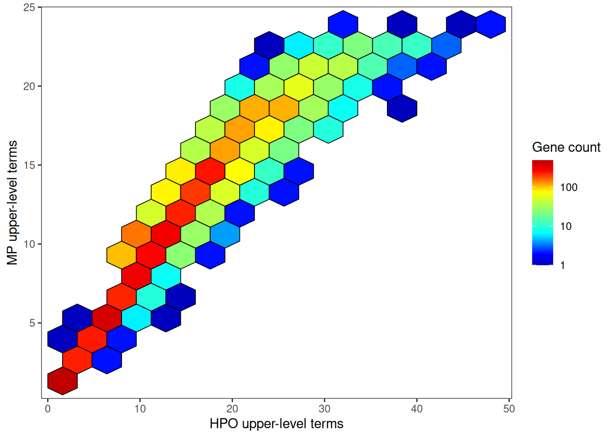
# Checking overlaps in highly pleiotropic genes
human_cut_hp <- quantile(na.omit(merged_data$HP_high_count_noconvert), 0.75)
human_cut_mp <- quantile(na.omit(merged_data$HP_high_count), 0.75)
hip_human_hp <- na.omit(merged_data$gene_human[merged_data$HP_high_count_noconvert > human_cut_hp])
hip_human_mp <- na.omit(merged_data$gene_human[merged_data$HP_high_count > human_cut_mp])
print(c(length(hip_human_hp), length(hip_human_mp),
length(intersect(hip_human_hp, hip_human_mp))))[1] 1243 1139 1047Final distributions for all sources
Here, we will plot the distributions of the degree of pleiotropy according to different datasets, and calculate some of the numbers describing the distributions.
Beginning with the distributions:
# Figure 1a - distributions for selected term/GWAS vectors
pdeg_cols <- c('HP_high_count', 'MP_high_count',
'pleio_degree', 'fg_pleio_degree')#, 'pleio_degree_locuswide')
pdeg_dist_data <- merged_data[, pdeg_cols]
source_names <- c('HPO', 'MGD', 'panUKB', 'FinnGen')#, 'panUKB_all')
names(source_names) = pdeg_cols
colnames(pdeg_dist_data) = source_names
pdeg_dist_data <- na.omit(melt(pdeg_dist_data))No id variables; using all as measure variablespdeg_dist_data$Type = ifelse(grepl('panUKB|FinnGen', perl=T,
pdeg_dist_data$variable),
'complex', 'Mendelian')
pdeg_distros <- ggplot(pdeg_dist_data, aes(x=value, fill=variable)) +
geom_histogram(binwidth = 1, col='black', lwd=0.3) + theme_bw() +
facet_wrap(~variable, nrow=1, scales='free') +
scale_x_continuous(limits=c(0, 25)) +
theme(panel.grid=element_blank(), strip.background=my_ggrect) +
scale_fill_brewer(palette="Accent") +
xlab('Degree of pleiotropy') + ylab('Gene count') +
guides(fill=F)Warning: The `<scale>` argument of `guides()` cannot be `FALSE`. Use "none" instead as
of ggplot2 3.3.4.pdeg_distrosWarning: Removed 8 rows containing missing values or values outside the scale range
(`geom_bar()`).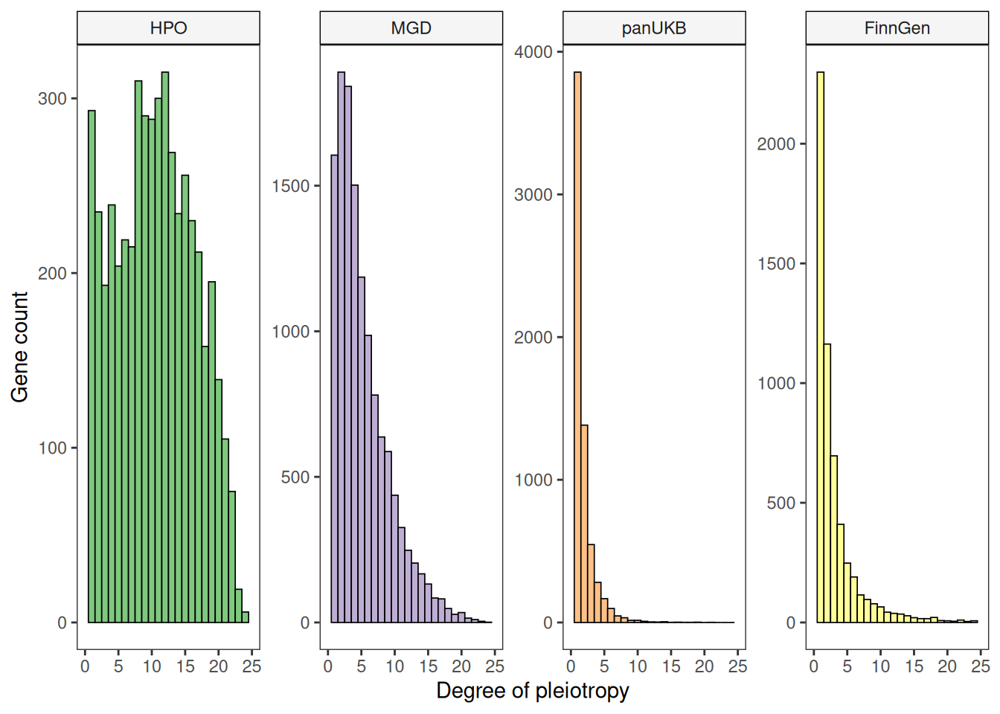
aggregate(value~variable, pdeg_dist_data, median) variable value
1 HPO 11
2 MGD 4
3 panUKB 1
4 FinnGen 1And, then, counts of associations per source, as well as some other metrics.
assoc_cnt <- colSums(merged_data[, pdeg_cols], na.rm = T)
print(assoc_cnt) HP_high_count MP_high_count pleio_degree fg_pleio_degree
52849 67958 12065 14898 sum(assoc_cnt)[1] 147770gene_cnt <- colSums(merged_data[, pdeg_cols] > 0, na.rm = T)
print(gene_cnt) HP_high_count MP_high_count pleio_degree fg_pleio_degree
4999 12834 6469 7919 non_pleio_or_missing <- function(x) {
return(sapply(x, function(elt)
ifelse(is.na(elt), TRUE, elt == 1)))
}
have_assoc_all <- sum(merged_data$HP_high_count > 0 &
merged_data$MP_high_count > 0 &
merged_data$pleio_degree > 0, na.rm=T)
print(have_assoc_all)[1] 1186have_assoc_both_dom <- sum((merged_data$HP_high_count > 0 |
merged_data$MP_high_count > 0) &
(merged_data$pleio_degree > 0 | merged_data$fg_pleio_degree > 0),
na.rm=T)
print(have_assoc_both_dom)[1] 4835have_assoc_mono <- sum((merged_data$HP_high_count > 0 |
merged_data$MP_high_count > 0), na.rm=T)
print(have_assoc_mono)[1] 13562pleio_mono <- sum(!non_pleio_or_missing(merged_data$HP_high_count) | !non_pleio_or_missing(merged_data$MP_high_count), na.rm=T)
print(pleio_mono)[1] 12172# How many are pleiotropic in pan-UKB, but have no HPO/MGD
pleio_pukfg_notinmono <- sum(is.na(merged_data$HP_high_count) &
is.na(merged_data$MP_high_count) &
(merged_data$pleio_degree > 1 | merged_data$fg_pleio_degree > 1),
na.rm=T)
print(pleio_pukfg_notinmono)[1] 2377# How many are uniquely pleiotropic in domains
pleio_mono_nopukfg <- sum(
(!non_pleio_or_missing(merged_data$HP_high_count) |
!non_pleio_or_missing(merged_data$MP_high_count)) &
non_pleio_or_missing(merged_data$pleio_degree) &
non_pleio_or_missing(merged_data$fg_pleio_degree), na.rm=T)
print(pleio_mono_nopukfg)[1] 9960print(pleio_mono_nopukfg/pleio_mono)[1] 0.8182714pleio_pukfg_nomono <- sum(
(non_pleio_or_missing(merged_data$HP_high_count) &
non_pleio_or_missing(merged_data$MP_high_count)) &
(!non_pleio_or_missing(merged_data$pleio_degree) |
!non_pleio_or_missing(merged_data$fg_pleio_degree)),
na.rm=T
)
print(pleio_pukfg_nomono)[1] 2535print(pleio_pukfg_nomono/sum(!non_pleio_or_missing(merged_data$pleio_degree) | !non_pleio_or_missing(merged_data$fg_pleio_degree)))[1] 0.5340215# Proportion of HPO and MGD pleiotropic that are not
# pleiotropic in pan-UKBNetwork modularity analysis
In this section, we will compute the modularity of the bipartite gene-trait networks using igraph. The initial implementation used BRIM, but the method has no stable implementation in either R or Python.
We will first run the analysis for pan-UKB (using the precomputed incidence matrix exported from Python), and then proceed to PO data.
# TODO: edge list for FinnGen has to be created
panukb_edges <- read.table('panUKB_closest_edgelist.txt',
sep='\t', header=F)
colnames(panukb_edges) = c('gene', 'cluster')
get_modularity <- function(edgelist_df) {
incidence_matr <- table(edgelist_df)
myg <- igraph::graph_from_biadjacency_matrix(incidence_matr,
mode=c("all"))
myfc <- igraph::cluster_fast_greedy(myg)
return(igraph::modularity(myfc))
}
real_panukb_q <- get_modularity(panukb_edges)
print(real_panukb_q)[1] 0.5161751# Testing a random permutation
get_permuted_modularity <- function(edge_df, n_iter=100, debug_mode=F) {
random_q <- c()
for (rand_iter in 1:n_iter) {
random_edges <- data.frame(gene = sample(edge_df[, 1]),
trait = sample(edge_df[, 2]))
curr_q = get_modularity(random_edges)
if (debug_mode) {
print(curr_q)
}
random_q <- c(random_q, curr_q)
}
return(random_q)
}
panukb_random_q <- get_permuted_modularity(panukb_edges)
mean(panukb_random_q)[1] 0.4575509# Same for FinnGen data
fg_edges <- read.table('finngen_closest_edgeList.txt',
sep='\t', header=F)
colnames(fg_edges) = c('gene', 'code')
real_finngen_q <- get_modularity(fg_edges)
print(real_finngen_q)[1] 0.4208165finngen_random_q <- get_permuted_modularity(fg_edges)
mean(finngen_random_q)[1] 0.4670866Here, we will do the same for the ontology data, but first converting the information we have into an edge list.
create_edgelist <- function(term_col='MP_high_level',
gene_col='gene_mouse',
full_df=merged_data) {
df_snippet <- full_df[, c(term_col, gene_col)]
get_all_nodes <- function(input_value, what_ret='term') {
term_list = input_value[1]
gene_name = input_value[2]
if (is.na(term_list) || term_list == "") {
return(c())
}
term_set = str_match_all(term_list, "MP:\\d+")[[1]][, 1]
if (what_ret == 'term') {
return(term_set)
} else {
return(rep(gene_name, length(term_set)))
}
}
all_terms <- unlist(apply(df_snippet, 1, function(x)
get_all_nodes(x, 'term'), simplify = T))
all_genes <- unlist(apply(df_snippet, 1, function(x)
get_all_nodes(x, 'gene'), simplify = T))
edgelist_df <- data.frame(term=all_terms,
gene=all_genes)
return(edgelist_df)
}
mgd_edgelist <- create_edgelist()
real_mgd_q <- get_modularity(mgd_edgelist)
print(real_mgd_q)[1] 0.2194291mgd_random_q <- get_permuted_modularity(mgd_edgelist)
mean(mgd_random_q)[1] 0.2027256# HPO
hpo_edgelist <- create_edgelist('HP_high_level', 'gene_human')
real_hpo_q <- get_modularity(hpo_edgelist)
print(real_hpo_q)[1] 0.1290752hpo_random_q <- get_permuted_modularity(hpo_edgelist)
mean(hpo_random_q)[1] 0.1173735Now we need to plot the values of modularity obtained during permutations together with the real (observed) modularity values [for an extended data figure].
random_q <- data.frame(q = c(hpo_random_q, mgd_random_q,
panukb_random_q, finngen_random_q),
source = factor(rep(source_names, each=100),
levels=source_names))
real_q <- data.frame(q = c(real_hpo_q, real_mgd_q,
real_panukb_q, real_finngen_q),
source = factor(source_names, levels=source_names))
# Extended Data Figure 1 (new)
ggplot(random_q, aes(x=q, fill=source)) + geom_histogram(col='black') +
geom_vline(data = real_q, aes(xintercept=q),
lwd=1, lty=2, col='red') +
theme_bw() + facet_wrap(~source, nrow=2, scales='free') +
scale_fill_brewer(palette='Accent') +
xlab('Network modularity') +
ylab('Permutation count')`stat_bin()` using `bins = 30`. Pick better value with `binwidth`.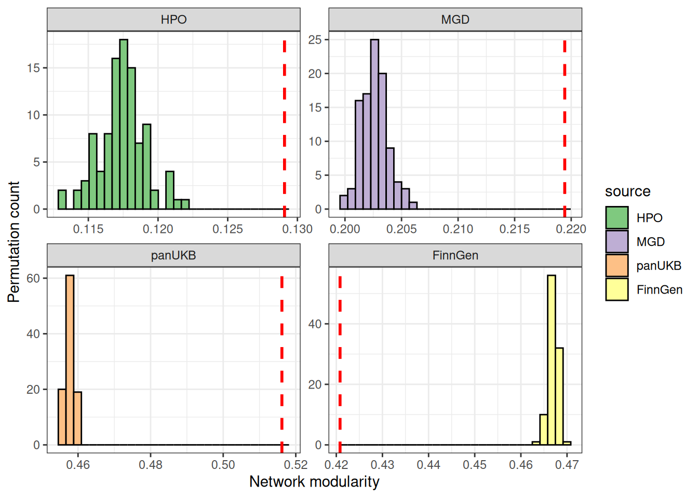
SN - distributions for different ways of GWAS data processing
Below, we will draw two plots to compare the dgree of genic pleitoropy in pan-UKB data when using different ways of preprocessing the data (closest gene vs. all genes) or different sets of triats (clustered traits or max. independent trait set). Besides, we will also draw plots for comparison of different approaches to FinnGen data processing - using the closest gene-based approach or the results of fine mapping.
sn2_data <- na.omit(melt(merged_data[, c('pleio_degree', 'pleio_degree_locuswide')]))No id variables; using all as measure variablessn2_distros <- ggplot(sn2_data, aes(x=value, fill=variable)) +
geom_histogram(binwidth = 1, col='black', lwd=0.3) + theme_bw() +
facet_wrap(~variable, nrow=2, scales='free') +
scale_x_continuous(limits=c(0, 25)) +
theme(panel.grid=element_blank(), strip.background=my_ggrect) +
scale_fill_brewer(palette="Set2") +
xlab('Degree of pleiotropy') + ylab('Gene count') +
guides(fill=F)
sn2_distrosWarning: Removed 2 rows containing non-finite outside the scale range
(`stat_bin()`).Warning: Removed 4 rows containing missing values or values outside the scale range
(`geom_bar()`).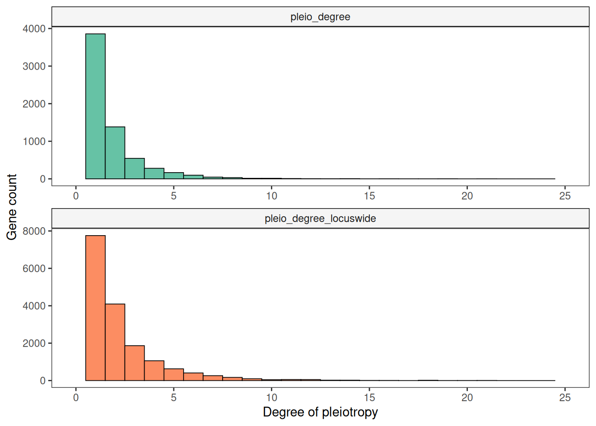
# The same for FinnGen comparison
sn2_data_fg <- na.omit(melt(merged_data[, c('fg_pleio_degree', 'fg_pleio_degree_finemap')]))No id variables; using all as measure variablessn2_distros_fg <- ggplot(sn2_data_fg,
aes(x=value, fill=variable)) +
geom_histogram(binwidth = 1, col='black', lwd=0.3) + theme_bw() +
facet_wrap(~variable, nrow=2, scales='free') +
scale_x_continuous(limits=c(0, 25)) +
theme(panel.grid=element_blank(), strip.background=my_ggrect) +
scale_fill_brewer(palette="Set1") +
xlab('Degree of pleiotropy') + ylab('Gene count') +
guides(fill=F)
sn2_distros_fgWarning: Removed 4 rows containing missing values or values outside the scale range
(`geom_bar()`).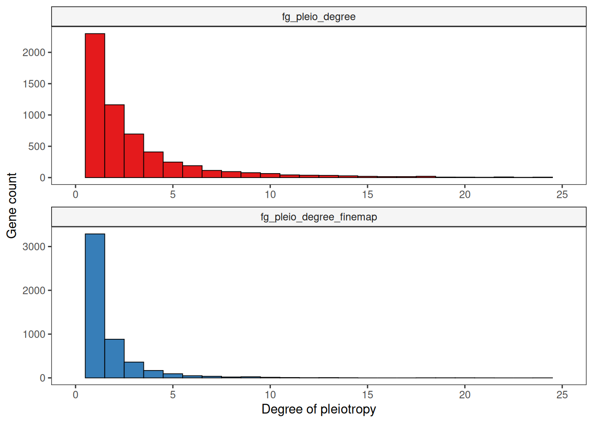
# Counts
# pan-UKB
table(merged_data$pleio_degree > 0)
TRUE
6469 table(merged_data$pleio_degree == 1)/sum(merged_data$pleio_degree > 0, na.rm = T)
FALSE TRUE
0.4037718 0.5962282 table(merged_data$pleio_degree_locuswide > 0)
TRUE
16569 table(merged_data$pleio_degree_locuswide == 1)/sum(merged_data$pleio_degree_locuswide > 0, na.rm = T)
FALSE TRUE
0.5320176 0.4679824 # FinnGen
table(merged_data$fg_pleio_degree > 0)
TRUE
7919 table(merged_data$fg_pleio_degree == 1)/sum(merged_data$fg_pleio_degree > 0, na.rm = T)
FALSE TRUE
0.4096477 0.5903523 table(merged_data$fg_pleio_degree_finemap > 0)
TRUE
4383 table(merged_data$fg_pleio_degree_finemap == 1)/sum(merged_data$fg_pleio_degree_finemap > 0, na.rm = T)
FALSE TRUE
0.2566735 0.7433265 # Comparison of distributions for max.indep for SN2.1
sn3_data <- na.omit(melt(merged_data[, c('pleio_degree', 'pleio_degree_maxindep')]))No id variables; using all as measure variablessn3_distros <- ggplot(sn3_data, aes(x=value, fill=variable)) +
geom_histogram(binwidth = 1, col='black', lwd=0.3) + theme_bw() +
facet_wrap(~variable, nrow=2, scales='free') +
scale_x_continuous(limits=c(0, 25)) +
theme(panel.grid=element_blank(), strip.background=my_ggrect) +
scale_fill_brewer(palette="Set3") +
xlab('Degree of pleiotropy') + ylab('Gene count') +
guides(fill=F)
sn3_distrosWarning: Removed 4 rows containing missing values or values outside the scale range
(`geom_bar()`).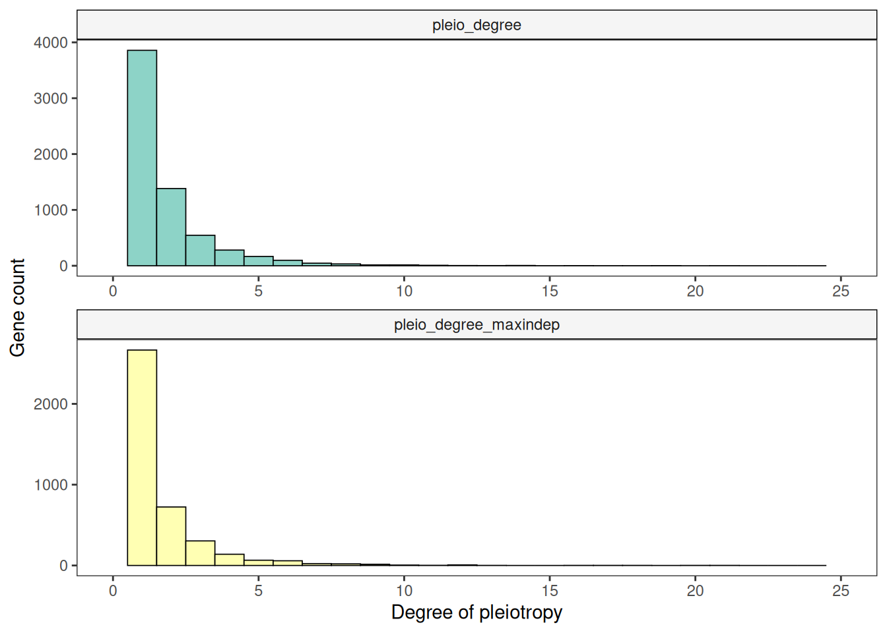
sum(merged_data$pleio_degree, na.rm=T)[1] 12065sum(merged_data$pleio_degree_maxindep, na.rm=T)[1] 6972mean(merged_data$pleio_degree, na.rm=T)[1] 1.865049mean(merged_data$pleio_degree_maxindep, na.rm=T)[1] 1.728309table(merged_data$pleio_degree > 1)
FALSE TRUE
3857 2612 table(merged_data$pleio_degree_maxindep > 1)
FALSE TRUE
2666 1368 cor.test(merged_data$pleio_degree, merged_data$pleio_degree_maxindep,
use="complete.obs", method="spearman")Warning in cor.test.default(merged_data$pleio_degree,
merged_data$pleio_degree_maxindep, : Cannot compute exact p-value with ties
Spearman's rank correlation rho
data: merged_data$pleio_degree and merged_data$pleio_degree_maxindep
S = 4069654356, p-value < 2.2e-16
alternative hypothesis: true rho is not equal to 0
sample estimates:
rho
0.6280358 Correlation analysis
Below, we construct a single plot to evaluate correlations between the genic degree of pleiotropy across our data.
pdeg_scat_df <- data.frame(col_a=NA, col_b=NA, val_a=NA, val_b=NA)
pdeg_corrs <- data.frame(col_a=NA, col_b=NA, val_a=NA, val_b=NA, rval=NA, pval=NA)
for (i in pdeg_cols) {
for (j in pdeg_cols) {
if (i == j){
next
}
df_snippet <- data.frame(col_a = source_names[i],
col_b = source_names[j],
val_a = merged_data[, i],
val_b = merged_data[, j])
pdeg_scat_df = na.omit(rbind(pdeg_scat_df, df_snippet))
cor_test_res <- cor.test(merged_data[, i], merged_data[, j],
use="complete.obs", method='spearman')
pdeg_corrs <- na.omit(rbind(pdeg_corrs,
data.frame(col_a = source_names[i],
col_b = source_names[j],
val_a = 30, val_b = 30,
rval = round(cor_test_res$estimate, digits=2),
pval = cor_test_res$p.value)))
}
}Warning in data.frame(col_a = source_names[i], col_b = source_names[j], : row
names were found from a short variable and have been discardedWarning in cor.test.default(merged_data[, i], merged_data[, j], use =
"complete.obs", : Cannot compute exact p-value with tiesWarning in data.frame(col_a = source_names[i], col_b = source_names[j], : row
names were found from a short variable and have been discardedWarning in cor.test.default(merged_data[, i], merged_data[, j], use =
"complete.obs", : Cannot compute exact p-value with tiesWarning in data.frame(col_a = source_names[i], col_b = source_names[j], : row
names were found from a short variable and have been discardedWarning in cor.test.default(merged_data[, i], merged_data[, j], use =
"complete.obs", : Cannot compute exact p-value with tiesWarning in data.frame(col_a = source_names[i], col_b = source_names[j], : row
names were found from a short variable and have been discardedWarning in cor.test.default(merged_data[, i], merged_data[, j], use =
"complete.obs", : Cannot compute exact p-value with tiesWarning in data.frame(col_a = source_names[i], col_b = source_names[j], : row
names were found from a short variable and have been discardedWarning in cor.test.default(merged_data[, i], merged_data[, j], use =
"complete.obs", : Cannot compute exact p-value with tiesWarning in data.frame(col_a = source_names[i], col_b = source_names[j], : row
names were found from a short variable and have been discardedWarning in cor.test.default(merged_data[, i], merged_data[, j], use =
"complete.obs", : Cannot compute exact p-value with tiesWarning in data.frame(col_a = source_names[i], col_b = source_names[j], : row
names were found from a short variable and have been discardedWarning in cor.test.default(merged_data[, i], merged_data[, j], use =
"complete.obs", : Cannot compute exact p-value with tiesWarning in data.frame(col_a = source_names[i], col_b = source_names[j], : row
names were found from a short variable and have been discardedWarning in cor.test.default(merged_data[, i], merged_data[, j], use =
"complete.obs", : Cannot compute exact p-value with tiesWarning in data.frame(col_a = source_names[i], col_b = source_names[j], : row
names were found from a short variable and have been discardedWarning in cor.test.default(merged_data[, i], merged_data[, j], use =
"complete.obs", : Cannot compute exact p-value with tiesWarning in data.frame(col_a = source_names[i], col_b = source_names[j], : row
names were found from a short variable and have been discardedWarning in cor.test.default(merged_data[, i], merged_data[, j], use =
"complete.obs", : Cannot compute exact p-value with tiesWarning in data.frame(col_a = source_names[i], col_b = source_names[j], : row
names were found from a short variable and have been discardedWarning in cor.test.default(merged_data[, i], merged_data[, j], use =
"complete.obs", : Cannot compute exact p-value with tiesWarning in data.frame(col_a = source_names[i], col_b = source_names[j], : row
names were found from a short variable and have been discardedWarning in cor.test.default(merged_data[, i], merged_data[, j], use =
"complete.obs", : Cannot compute exact p-value with tiespdeg_scat_df$col_a = factor(as.character(pdeg_scat_df$col_a),
levels=c('HPO', 'MGD', 'panUKB', 'FinnGen'))
pdeg_scat_df$col_b = factor(as.character(pdeg_scat_df$col_b),
levels=c('HPO', 'MGD', 'panUKB', 'FinnGen'))
pdeg_corrs$col_a = factor(as.character(pdeg_corrs$col_a),
levels=c('HPO', 'MGD', 'panUKB', 'FinnGen'))
pdeg_corrs$col_b = factor(as.character(pdeg_corrs$col_b),
levels=c('HPO', 'MGD', 'panUKB', 'FinnGen'))
pdeg_scatters <- ggplot(pdeg_scat_df, aes(x=val_a, y=val_b)) +
geom_hex(bins=15, col='black', lwd=0.3) + theme_bw() +
geom_text(data=pdeg_corrs, aes(label=rval), size = 3) +
facet_grid(col_a~col_b) +
scale_x_continuous(limits=c(0, 33)) +
scale_y_continuous(limits=c(0, 33)) +
scale_fill_gradientn(colors=mypal, trans = "log",
breaks=c(1, 10, 100, 1000), name='Gene count') +
theme(panel.grid=element_blank(),
strip.background = my_ggrect) +
xlab('Degree of pleiotropy (dataset A)') +
ylab('Degree of pleiotropy (dataset B)')
pdeg_scattersWarning: Removed 125 rows containing missing values or values outside the scale range
(`geom_hex()`).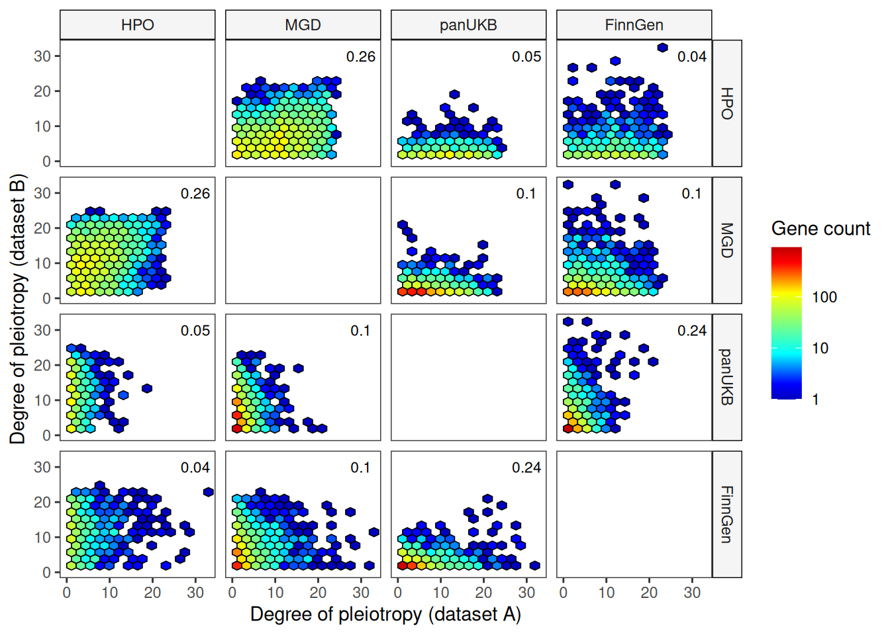
# Adjusted p-values
p.adjust(unique(pdeg_corrs$pval), method='fdr')[1] 4.892617e-64 6.987327e-02 2.854792e-03 1.034460e-07 3.792905e-10
[6] 4.767225e-63Overlap of pleiotropic gene sets
First, we calculate the generic overlap between the datasets.
table(!(is.na(merged_data$pleio_degree_locuswide)) &
!(is.na(merged_data$HP_high_count)))
FALSE TRUE
28469 2168 table(!(is.na(merged_data$pleio_degree)) &
!(is.na(merged_data$HP_high_count)))
FALSE TRUE
29326 1311 Next, we collect sets of all pleiotropic genes for all datasets, including those analyzed for SN.
pleio_genes_hpo <- na.omit(merged_data$gene_human[merged_data$HP_high_count > 1])
mouse_gene_4venn <- ifelse(is.na(merged_data$gene_human) |
merged_data$gene_human == "",
merged_data$gene_mouse, merged_data$gene_human)
pleio_genes_mgd <- na.omit(mouse_gene_4venn[merged_data$MP_high_count > 1])
pleio_genes_puk <- na.omit(merged_data$gene_human[merged_data$pleio_degree > 1])
pleio_genes_fg <- na.omit(merged_data$gene_human[merged_data$fg_pleio_degree > 1])
# Akternative analtsis strategies
pleio_genes_pukall <- na.omit(merged_data$gene_human[merged_data$pleio_degree_locuswide > 1])
pleio_genes_pukmi <- na.omit(merged_data$gene_human[merged_data$pleio_degree_maxindep > 1])
pleio_genes_fgfm <- na.omit(merged_data$gene_human[merged_data$fg_pleio_degree_finemap > 1])
venn_pleio <- ggvenn(list('HPO' = pleio_genes_hpo, 'MGD' = pleio_genes_mgd,
'panUKB' = pleio_genes_puk, 'FinnGen' = pleio_genes_fg),#,
# 'panUKB_all' = pleio_genes_pukall),
set_name_size = 4, text_size=3, stroke_size=0.3,
fill_color=brewer.pal(4, 'Accent'),
show_percentage=FALSE)
venn_pleio# Venns for SN2
sn2_venn_pleio <- ggvenn(list('closest' = pleio_genes_puk,
'locus-wide' = pleio_genes_pukall),
set_name_size = 4, text_size=3, stroke_size=0.3,
fill_color=brewer.pal(2, 'Set2'),
show_percentage=FALSE)Warning in brewer.pal(2, "Set2"): minimal value for n is 3, returning requested palette with 3 different levelssn2_venn_pleio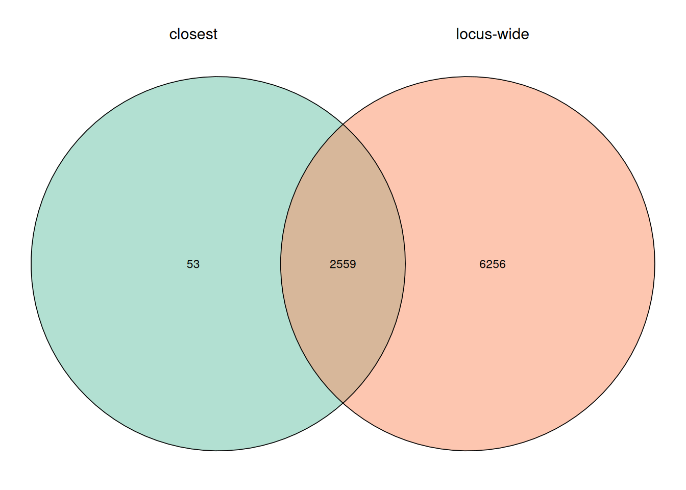
# Same for FinnGen data
sn2_venn_pleio_fg <- ggvenn(list('closest' = pleio_genes_fg,
'fine mapping' = pleio_genes_fgfm),
set_name_size = 4, text_size=3, stroke_size=0.3,
fill_color=brewer.pal(2, 'Set1'),
show_percentage=FALSE)Warning in brewer.pal(2, "Set1"): minimal value for n is 3, returning requested palette with 3 different levelssn2_venn_pleio_fg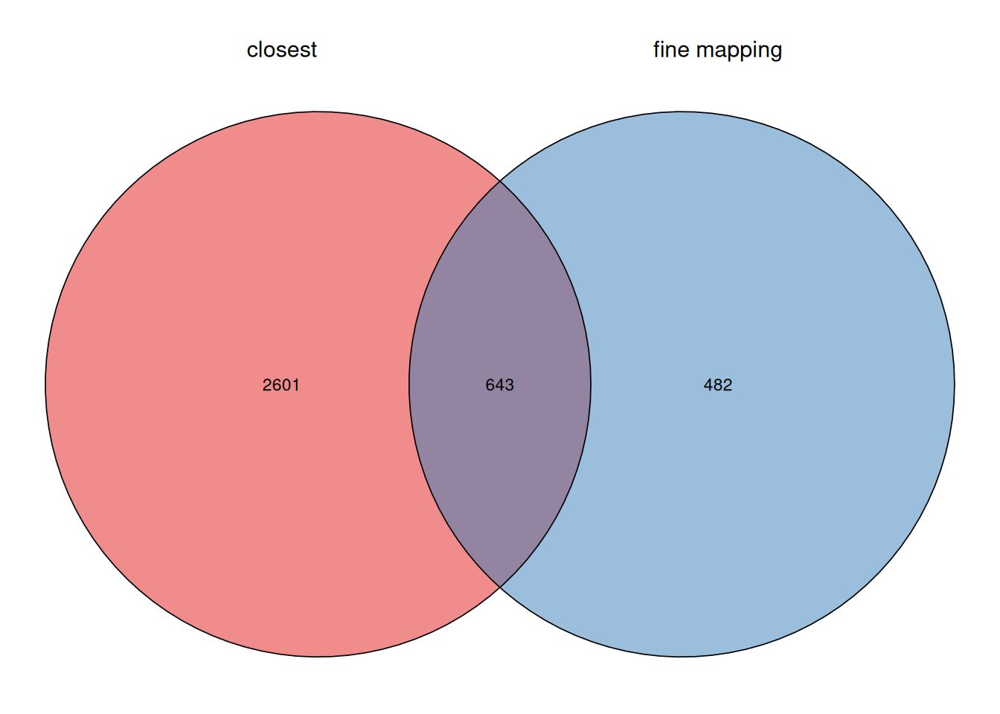
# Venn for SN3
sn3_venn_pleio <- ggvenn(list('clusters' = pleio_genes_puk,
'max_indep_set' = pleio_genes_pukmi),
set_name_size = 4, text_size=3, stroke_size=0.3,
fill_color=brewer.pal(2, 'Set3'),
show_percentage=FALSE)Warning in brewer.pal(2, "Set3"): minimal value for n is 3, returning requested palette with 3 different levelssn3_venn_pleio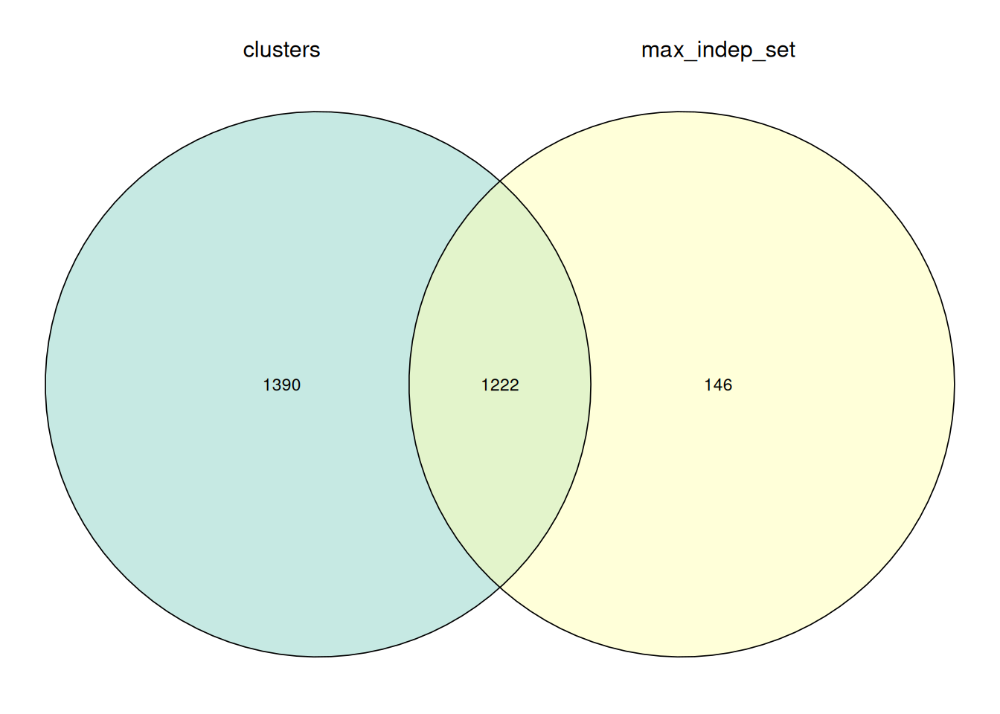
Next, we turn to investigating the highly pleiotropic genes. We apply the 4th quartile rule to detect the highly pleiotropic genes irrespective of the actual distribution of the degrees of pleiotropy.
hip_cut_hpo = quantile(na.omit(merged_data$HP_high_count), 0.75)
hip_cut_mgd = quantile(na.omit(merged_data$MP_high_count), 0.75)
hip_cut_puk = quantile(na.omit(merged_data$pleio_degree), 0.75)
hip_cut_fg = quantile(na.omit(merged_data$fg_pleio_degree), 0.75)
# Alternative strategies for SN
hip_cut_pukall = quantile(na.omit(merged_data$pleio_degree_locuswide), 0.75)
hip_cut_pukmi = quantile(na.omit(merged_data$pleio_degree_maxindep), 0.75)
hip_cut_fgfm = quantile(na.omit(merged_data$fg_pleio_degree_finemap), 0.75)
hip_genes_hpo <- na.omit(merged_data$gene_human[merged_data$HP_high_count > hip_cut_hpo])
hip_genes_mgd <- na.omit(mouse_gene_4venn[merged_data$MP_high_count > hip_cut_mgd])
hip_genes_puk <- na.omit(merged_data$gene_human[merged_data$pleio_degree > hip_cut_puk])
hip_genes_fg <- na.omit(merged_data$gene_human[merged_data$fg_pleio_degree > hip_cut_fg])
hip_genes_pukall <- na.omit(merged_data$gene_human[merged_data$pleio_degree_locuswide > hip_cut_pukall])
hip_genes_pukmi <- na.omit(merged_data$gene_human[merged_data$pleio_degree_maxindep > hip_cut_pukmi])
hip_genes_fgfm <- na.omit(merged_data$gene_human[merged_data$fg_pleio_degree_finemap > hip_cut_fgfm])
# Percentage of shared highly pleiotropic genes
hip_hpo_or_mgd <- union(hip_genes_hpo, hip_genes_mgd)
hip_puk_or_fg <- union(hip_genes_puk, hip_genes_fg)
length(intersect(hip_hpo_or_mgd, hip_puk_or_fg))/length(hip_hpo_or_mgd)[1] 0.1468243And then make Venn diagrams for the highly pleiotropic genes similar to those for all pleiotropic genes.
venn_hip <- ggvenn(list('HPO' = hip_genes_hpo, 'MGD' = hip_genes_mgd,
'panUKB' = hip_genes_puk, 'FinnGen' = hip_genes_fg),
# 'panUKB_all' = hip_genes_pukall),
set_name_size = 4, text_size=3, stroke_size=0.3,
fill_color=brewer.pal(4, 'Accent'),
show_percentage=FALSE)
venn_hip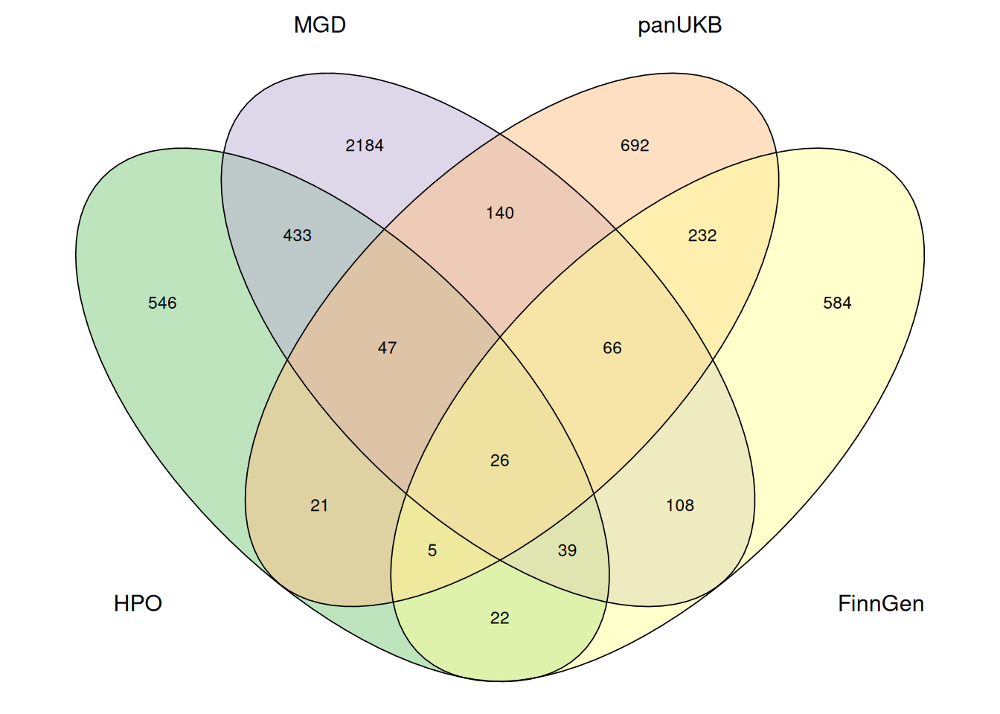
# Highly pleiotropic gene venn diagram for SN2
sn2_venn_hip <- ggvenn(list('closest' = hip_genes_puk,
'locus-wide' = hip_genes_pukall),
set_name_size = 4, text_size=3, stroke_size=0.3,
fill_color=brewer.pal(2, 'Set2'),
show_percentage=FALSE)Warning in brewer.pal(2, "Set2"): minimal value for n is 3, returning requested palette with 3 different levelssn2_venn_hip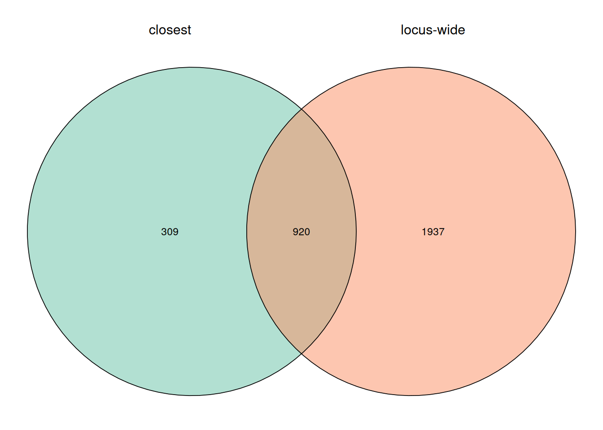
# FinnGen
sn2_venn_hip_fg <- ggvenn(list('closest' = hip_genes_fg,
'fine mapping' = hip_genes_fgfm),
set_name_size = 4, text_size=3, stroke_size=0.3,
fill_color=brewer.pal(2, 'Set1'),
show_percentage=FALSE)Warning in brewer.pal(2, "Set1"): minimal value for n is 3, returning requested palette with 3 different levelssn2_venn_hip_fg# Highly pleiotropic gene venn diagram for SN3
sn3_venn_hip <- ggvenn(list('clusters' = hip_genes_puk,
'max_indep_set' = hip_genes_pukmi),
set_name_size = 4, text_size=3, stroke_size=0.3,
fill_color=brewer.pal(2, 'Set3'),
show_percentage=FALSE)Warning in brewer.pal(2, "Set3"): minimal value for n is 3, returning requested palette with 3 different levelssn3_venn_hipExporting figures with descriptive stats
In this chunk, we construct the plots that contain all panels for Figures 1, SN2.1, SN3.1. We hide the results of these chunks for ease of comprehension of the Qmd file.
# Main figure 1c-d
both_venn <- plot_grid(venn_pleio, venn_hip, labels=c('c', 'd'),
nrow=1, label_size = 20)
# Venns for Figure SN2.1
sn2_venns <- plot_grid(sn2_venn_pleio, sn2_venn_hip,
nrow=1, labels=c('b', 'c'), label_size=20)
sn2_venns_fg <- plot_grid(sn2_venn_pleio_fg, sn2_venn_hip_fg,
nrow=1, labels=c('b', 'c'), label_size=20)
# FVenns for igure SN3.1
sn3_venns <- plot_grid(sn3_venn_pleio, sn3_venn_hip,
nrow=1, labels=c('b', 'c'), label_size=20)
# Figure 1 --- 9 * 9
plot_grid(plot_grid(pdeg_distros, pdeg_scatters, nrow=2,
rel_heights = c(0.4, 1),
labels=c('a', 'b'), label_size=20),
both_venn, nrow=2,
rel_heights = c(1, 0.4),
# rel_widths = c(1, 0.35),
# labels=c('', ''),
label_size = 20)# Figure SN2.1
plot_grid(sn2_distros, sn2_venns, nrow=2, labels=c('a', ''),
label_size=20, rel_heights = c(1, 0.7))plot_grid(sn2_distros_fg, sn2_venns_fg, nrow=2, labels=c('a', ''),
label_size=20, rel_heights = c(1, 0.7))# Figure SN3.1
plot_grid(sn3_distros, sn3_venns, nrow=2, labels=c('a', ''),
label_size=20, rel_heights = c(1, 0.7))Comparison of gene features
Categorizing genes by pleiotropy
In this block, we will explore various features of genes depending on their degree of pleiotropy. To do so, we will need to first assign the groups of pleiotropy according to the 4th quartile rule described above.
categorize_pleio <- function(pdeg_vector, hip_cutoff,
add_no_pheno=T) {
if (add_no_pheno) {
na_category = 'NP'
} else {
na_category = NA
}
out_vec <- ifelse(is.na(pdeg_vector), na_category,
ifelse(pdeg_vector > 1, ifelse(pdeg_vector > hip_cutoff,
'HP', 'MP'),
'ST'))
if (add_no_pheno) {
return(factor(out_vec,
levels=c('NP', 'ST', 'MP', 'HP')))
} else {
return(factor(out_vec,
levels=c('ST', 'MP', 'HP')))
}
}
merged_data$pleiotropy_HPO = categorize_pleio(merged_data$HP_high_count,
hip_cut_hpo)
merged_data$pleiotropy_MGD = categorize_pleio(merged_data$MP_high_count,
hip_cut_mgd)
merged_data$pleiotropy_panUKB = categorize_pleio(merged_data$pleio_degree,
hip_cut_puk)
merged_data$pleiotropy_FinnGen = categorize_pleio(merged_data$fg_pleio_degree,
hip_cut_fg)
merged_data$pleiotropy_panUKB_all = categorize_pleio(merged_data$pleio_degree_locuswide,
hip_cut_pukall)
merged_data$pleiotropy_panUKB_maxindep = categorize_pleio(merged_data$pleio_degree_maxindep,
hip_cut_pukmi)
merged_data$pleiotropy_FinnGen_finemap = categorize_pleio(merged_data$fg_pleio_degree_finemap,
hip_cut_fgfm)Next, we construct the plot of proportions of genes in different groups (for Extended Data Figure 1).
group_props <- as.numeric(table(merged_data$pleiotropy_HPO))
group_props <- group_props/sum(group_props)
for (src_name in c(source_names[2:4])) {
curr_props <- as.numeric(table(merged_data[, paste0('pleiotropy_', src_name)]))
curr_props <- curr_props/sum(curr_props)
group_props <- rbind(group_props, curr_props)
}
group_props <- as.data.frame(group_props)
colnames(group_props) <- c('NP', 'ST', 'MP', 'HP')
group_props$dataset <- source_names
# Extended Data Figure 2 (new)
ggplot(melt(group_props, id.vars='dataset'), aes(x=dataset,
y=value, fill=variable)) +
geom_bar(stat='identity', col='black') + theme_bw() +
theme(panel.grid=element_blank(),
axis.text.x = element_text(angle=45, hjust=1)) +
xlab('Data source') + ylab('Gene proportion') +
labs(fill='Pleiotropy') +
scale_fill_brewer(palette="BuPu")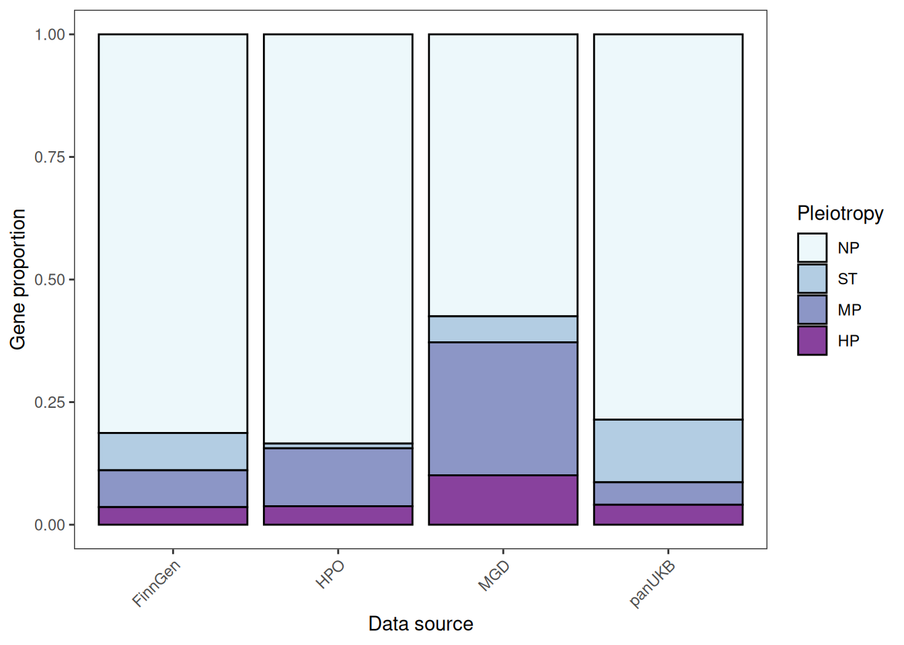
FUSIL categories
In this subsection, we shall take a brief look into the pleiotropic effects of essential genes by FUSIL category (Cacheiro et al., 2020, Nat Comm). The theoretical expectation is that genes in CL and DL categories should be depleted from the dataset (i.e., be annotated with NP, as they should only be linked to mortality/aging). Let us run the analysis:
fusil_cat_df <- melt(na.omit(merged_data[, c('FUSIL',
paste0('pleiotropy_', source_names))]),
id.vars='FUSIL')
fusil_agg <- aggregate(value~variable+FUSIL, fusil_cat_df, table)
# Removing all except CL, DL, SV categories
fusil_agg <- fusil_agg[fusil_agg$FUSIL %in% c('CL', 'DL', 'SV'), ]
colnames(fusil_agg) = c('source', 'FUSIL', 'value')
fusil_agg$HP = fusil_agg$value[, 1]
fusil_agg$MP = fusil_agg$value[, 2]
fusil_agg$NP = fusil_agg$value[, 3]
fusil_agg$ST = fusil_agg$value[, 4]
fusil_agg <- fusil_agg[, -3]
fusil_agg$source = sapply(fusil_agg$source, function(x)
substr(x, 12, nchar(as.character(x))))
print(fusil_agg) source FUSIL HP MP NP ST
9 HPO CL 51 144 214 3
10 MGD CL 63 233 45 71
11 panUKB CL 14 17 329 52
12 FinnGen CL 18 15 338 41
13 HPO DL 124 259 371 10
14 MGD DL 304 369 40 51
15 panUKB DL 66 51 533 114
16 FinnGen DL 58 53 516 137
17 HPO SV 38 126 251 5
18 MGD SV 169 214 13 24
19 panUKB SV 34 26 290 70
20 FinnGen SV 28 33 283 76# For plotting
fusil_agg_mlt <- melt(fusil_agg, id.vars=c('source', 'FUSIL'))
fusil_cat_sums <- aggregate(value~source+FUSIL, fusil_agg_mlt, sum)$value
fusil_agg_mlt$prop <- fusil_agg_mlt$value/rep(fusil_cat_sums, 4)
# Combining with all genes
all_genes_mlt <- melt(group_props, id.vars='dataset')
colnames(all_genes_mlt) <- c('source', 'variable', 'prop')
all_genes_mlt$FUSIL = 'ALL'
all_genes_mlt$value = NA
comb_agg_mlt <- rbind(fusil_agg_mlt, all_genes_mlt)
comb_agg_mlt$variable = factor(as.character(comb_agg_mlt$variable),
levels=c('NP', 'ST', 'MP', 'HP'))
comb_agg_mlt$FUSIL = factor(as.character(comb_agg_mlt$FUSIL),
levels=c('ALL', 'CL', 'DL', 'SV'))
ggplot(comb_agg_mlt, aes(x=FUSIL, y=prop, fill=variable)) +
geom_bar(stat='identity', col='black') +
scale_fill_brewer(palette='BuPu') +
ylab('Proportion of genes') +
theme_bw() + facet_wrap(~source, ncol=2) +
coord_flip()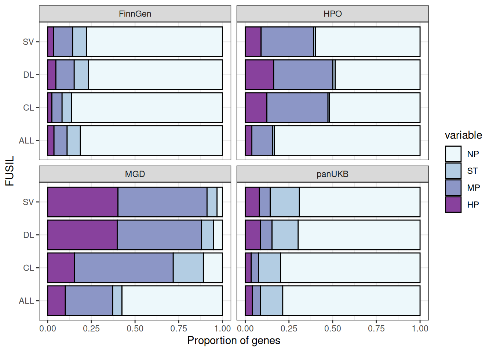
np_props <- comb_agg_mlt[comb_agg_mlt$variable == 'NP', ]
np_props <- np_props[order(np_props$source), ]
np_props$prop = 1 - np_props$prop
print(np_props[, c('source', 'FUSIL', 'prop')]) source FUSIL prop
28 FinnGen CL 0.1796117
32 FinnGen DL 0.3246073
36 FinnGen SV 0.3261905
52 FinnGen ALL 0.2584783
25 HPO CL 0.4805825
29 HPO DL 0.5143979
33 HPO SV 0.4023810
49 HPO ALL 0.1631687
26 MGD CL 0.8907767
30 MGD DL 0.9476440
34 MGD SV 0.9690476
50 MGD ALL 0.4189052
27 panUKB CL 0.2014563
31 panUKB DL 0.3023560
35 panUKB SV 0.3095238
51 panUKB ALL 0.2111499Function for plotting gene features
Finally, we make a master function to plot all features we may want to, with the following imaportant args:
axis_lab, ax_lim, log_scale- regulating the axis properties on plots [beware - axis limit is applied before plotting];mouse_feature- specification of a separate column for the value of the feature in mice (if this is different from the main feature column);gwas_data_file- filename to use for GWAS locus-level data;cutoff, cut_name- parameters for creating binary plots with a cutoff value to be used for splitting feature into categories;use_maxindep, use_locuswide- arguments that, if set, override the set of columns used for analysis, juxtaposing the main (closest gene, clustered data) dataset against the selected one.
plot_feature <- function(feature_name, axis_lab,
ax_lim=NA, log_scale=FALSE,
mouse_feature=NA, gwas_data_file=NA,
cutoff=NA, cut_name=NA,
cut_direction='higher',
prop_palette="OrRd",
prop_plot_type='stacked',
gene_mask=c(), use_maxindep=FALSE,
use_locuswide=FALSE, use_finemap=FALSE,
add_nopheno=TRUE,
append_fusil_plot=F,
fusil_plot_width=0.25) {
if (use_maxindep) {
source_names <- c('panUKB', 'panUKB_maxindep')
} else if (use_locuswide) {
source_names <- c('panUKB', 'panUKB_all')
} else if (use_finemap) {
source_names <- c('FinnGen', 'FinnGen_finemap')
}
pl_col_names <- paste0('pleiotropy_', source_names)
if (length(gene_mask) != 0) {
feat_df <- merged_data[merged_data$gene_human %in% gene_mask,
c(feature_name, pl_col_names)]
} else {
feat_df <- merged_data[, c(feature_name, pl_col_names)]
}
feat_df <- na.omit(melt(feat_df, id.vars=feature_name))
colnames(feat_df) <- c('feature', 'dataset', 'group')
feat_df$dataset = sapply(as.character(feat_df$dataset),
function(x) strsplit(x, 'py_')[[1]][2])
if (!is.na(mouse_feature)) {
# Removing mouse data
feat_df <- feat_df[feat_df$dataset != 'MGD', ]
if (length(gene_mask) == 0) {
mouse_snippet <- na.omit(data.frame(feature=merged_data[, mouse_feature],
dataset='MGD',
group=merged_data$pleiotropy_MGD))
} else {
mouse_snippet <- na.omit(data.frame(feature=merged_data[
merged_data$gene_human %in% gene_mask,
mouse_feature],
dataset='MGD',
group=merged_data[
merged_data$gene_human %in% gene_mask,
'pleiotropy_MGD']))
}
feat_df <- as.data.frame(rbind(feat_df, mouse_snippet))
}
if (add_nopheno) {
feat_df$group = factor(as.character(feat_df$group),
levels=c('NP', 'ST', 'MP', 'HP'))
} else {
feat_df = feat_df[feat_df$group != 'no_phenotype', ]
feat_df$group = factor(as.character(feat_df$group),
levels=c('ST', 'MP', 'HP'))
}
if (!is.na(gwas_data_file)) {
gwas_values = read.table(gwas_data_file, sep='\t', header=T)
feat_df <- gwas_values
colnames(feat_df) <- c('group', 'feature')
feat_df$group = ifelse(feat_df$group == 'none', 'ST',
ifelse(feat_df$group == 'moderate', 'MP', 'HP'))
feat_df$group = factor(as.character(feat_df$group),
levels=c('ST', 'MP', 'HP'))
feat_df$dataset <- 'panUKB (locus-wise)'
source_names <- 'panUKB (locus-wise)'
}
summary_df <- aggregate(feature~group+dataset, feat_df, median)
summary_df$pvalue = NA
for (src_name in source_names) {
for (tg_group in c('MP', 'HP')) {
wtres <- wilcox.test(feature~group, feat_df[feat_df$dataset == src_name &
feat_df$group %in% c('ST', tg_group), ])
summary_df[summary_df$dataset == src_name &
summary_df$group == tg_group, 'pvalue'] = wtres$p.value
}
}
summary_df$pvalue = p.adjust(summary_df$pvalue, method='fdr')
print_sum_df <- summary_df
# print('Generated summary dataSframe')
if (is.na(ax_lim)) {
ax_lim = max(feat_df$feature)
} else {
feat_df <- feat_df[feat_df$feature <= ax_lim, ]
}
if (log_scale) {
line_shift <- ax_lim
} else {
line_shift = ax_lim/10
}
line_data <- data.frame(dataset=rep(source_names, each=4),
group=rep(c('ST', 'MP', 'ST', 'HP'),
length(source_names)),
feature = rep(c(ax_lim + line_shift, ax_lim + line_shift,
ax_lim + 2.5 * line_shift, ax_lim + 2.5 * line_shift),
length(source_names)),
line_cat = rep(c(1, 1, 2, 2), length(source_names)))
#print('Generated line data')
summary_df$plot_label = ifelse(summary_df$pvalue < 0.05,
ifelse(summary_df$pvalue < 0.01,
ifelse(summary_df$pvalue < 0.001, '***', '**'), '*'),
'n.s.')
#print('Added plot labels')
if (add_nopheno && is.na(gwas_data_file)) {
summary_df$feature = rep(c(NA, NA, ax_lim + 1.75 * line_shift,
ax_lim + 3.25 * line_shift), length(source_names))
} else {
summary_df$feature = rep(c(NA, ax_lim + 1.75 * line_shift,
ax_lim + 3.25 * line_shift), length(source_names))
}
# Shifting the asterisks a little
summary_df$feature = ifelse(summary_df$plot_label == "n.s.",
summary_df$feature + 0.05 * line_shift,
summary_df$feature - 0.25 * line_shift)
out_plt <- ggplot(feat_df, aes(x=group, y=feature, fill=group)) +
geom_violin(scale = "width") + theme_bw() +
theme(panel.grid = element_blank(), strip.background = my_ggrect) +
# axis.text.x = element_text(angle=45, hjust=1)) +
geom_boxplot(outlier.shape=NA, width=0.25, col='black', fill='white') +
geom_line(data=line_data, aes(group=line_cat)) +
geom_text(data=summary_df[summary_df$group == 'MP', ],
aes(label=plot_label), nudge_x=-0.5) +
geom_text(data=summary_df[summary_df$group == 'HP', ],
aes(label=plot_label), nudge_x=-1) +
ylab(axis_lab) + xlab('Pleiotropy group') +
facet_wrap(~dataset, nrow=1) + guides(fill=F) +
scale_fill_brewer(palette='BuPu') +
scale_y_continuous(limits=c(0, ax_lim * 1.4))
if (append_fusil_plot) {
fusil_df = merged_data[merged_data$FUSIL %in% c('CL', 'DL', 'SV') &
!is.na(merged_data$FUSIL),
c('FUSIL', feature_name)]
colnames(fusil_df) = c('FUSIL', 'feature')
p_fusil_df <- na.omit(fusil_df[fusil_df$feature <= ax_lim, ])
fusil_panel <- ggplot(p_fusil_df, aes(x=FUSIL, y=feature, fill=FUSIL)) +
geom_violin(scale = "width") + theme_bw() +
theme(panel.grid = element_blank(), strip.background = my_ggrect) +
# axis.text.x = element_text(angle=45, hjust=1)) +
geom_boxplot(outlier.shape=NA, width=0.25, col='black', fill='white') +
ylab(axis_lab) + xlab('FUSIL category') +
scale_fill_locuszoom() + guides(fill=F) +
scale_y_continuous(limits=c(0, ax_lim * 1.4))
}
if (log_scale) {
out_plt <- out_plt + scale_y_log10()
if (append_fusil_plot) {
fusil_panel <- fusil_panel + scale_y_log10()
}
}
if (append_fusil_plot) {
out_plt <- plot_grid(plot_grid(NULL, fusil_panel,
nrow=2, rel_heights = c(0.1, 1)),
out_plt,
nrow=1, rel_widths = c(fusil_plot_width, 1))
}
if (!is.na(cutoff)) {
if (cut_direction == 'higher') {
cutoff_stats <- aggregate(feature~group+dataset, feat_df, function(x) sum(x > cutoff))
} else {
cutoff_stats <- aggregate(feature~group+dataset, feat_df, function(x) sum(x < cutoff))
}
cutoff_stats$total = aggregate(feature~group+dataset, feat_df, length)$feature
cutoff_stats$yes = cutoff_stats$feature/cutoff_stats$total
cutoff_stats$no = 1 - cutoff_stats$yes
chisq_pvals <- c()
for (src_name in source_names) {
if (cut_direction == 'higher') {
ds_df <- aggregate(feature~group, feat_df[feat_df$dataset == src_name &
feat_df$group %in% c('ST', 'HP'), ], function(x) table(x > cutoff))
} else {
ds_df <- aggregate(feature~group, feat_df[feat_df$dataset == src_name &
feat_df$group %in% c('ST', 'HP'), ], function(x) table(x < cutoff))
}
chisq_pvals <- c(chisq_pvals, chisq.test(ds_df$feature)$p.value)
}
#cutoff_stats$no <- cutoff_stats$feature[, 1]
#cutoff_stats$yes <- cutoff_stats$feature[, 2]
#cutoff_stats <- cutoff_stats[, c(1, 2, 4, 5)]
print(cutoff_stats)
names(chisq_pvals) = source_names
print(chisq_pvals)
insert_asterisks <- function(this_src,
pvals=chisq_pvals) {
asterisks <- ifelse(pvals[this_src] < 0.001,
'***', ifelse(pvals[this_src] < 0.01,
'**', ifelse(pvals[this_src] < 0.05,
'*', 'n.s.')))
return(paste0(this_src, ' (', asterisks, ')'))
}
cutoff_df <- melt(cutoff_stats, measure.vars=c('no', 'yes'),
id.vars=c('group', 'dataset', 'feature', 'total'))
cutoff_df$dataset = sapply(cutoff_df$dataset,
insert_asterisks)
if (prop_plot_type == 'stacked') {
prop_plot <- ggplot(cutoff_df, aes(x=group, y=value, fill=variable)) +
geom_bar(stat='identity', col='black') + theme_bw() +
xlab('Pleiotropy group') + ylab('Proportion of genes') +
facet_wrap(~dataset, ncol=4) +
# coord_flip() +
# facet_wrap(~dataset, nrow=4) +
scale_fill_brewer(palette=prop_palette, name=cut_name) +
theme(strip.background = my_ggrect,
panel.grid = element_blank(),
legend.position = 'top')
# axis.text.x=element_text(angle=45, hjust=1))
} else {
p_cutoff_df = cutoff_df[cutoff_df$variable == 'yes', ]
#print(p_cutoff_df)
p_cutoff_df$lower_bound = apply(p_cutoff_df, 1, function(x)
Hmisc::binconf(as.numeric(x[3]),
as.numeric(x[4]))[2])
p_cutoff_df$upper_bound = apply(p_cutoff_df, 1, function(x)
Hmisc::binconf(as.numeric(x[3]),
as.numeric(x[4]))[3])
prop_plot <- ggplot(p_cutoff_df, aes(x=group, y=value,
fill=group, ymin=lower_bound, ymax=upper_bound)) +
geom_bar(stat='identity', col='black') +
geom_errorbar(col='black', width=0.4) + theme_bw() +
xlab('Pleiotropy group') +
ylab(paste0(cut_name, ', %')) +
facet_wrap(~dataset, ncol=4) + guides(fill=F) +
# coord_flip() +
# facet_wrap(~dataset, nrow=4) +
scale_fill_brewer(palette="BuPu", name=cut_name) +
theme(strip.background = my_ggrect,
panel.grid = element_blank(),
legend.position = 'top')
# axis.text.x=element_text(angle=45, hjust=1))
}
if (append_fusil_plot) {
if (cut_direction == 'higher') {
fusil_cut_stats <- aggregate(feature~FUSIL, fusil_df, function(x) sum(x > cutoff, na.rm=T))
} else {
fusil_cut_stats <- aggregate(feature~FUSIL, fusil_df, function(x) sum(x < cutoff, na.rm=T))
}
print(fusil_cut_stats)
fusil_cut_stats$total <- aggregate(feature~FUSIL, fusil_df,
length)$feature
fusil_cut_stats$yes <- fusil_cut_stats$feature/fusil_cut_stats$total
fusil_cut_stats$no <- 1 - fusil_cut_stats$yes
#fusil_cut_stats <- fusil_cut_stats[, c(1, 3, 4)]
#print(fusil_cut_stats)
fusil_cut_stats <- melt(fusil_cut_stats,
id.vars=c('FUSIL', 'feature', 'total'))
if (prop_plot_type == 'stacked') {
header_width = 0.25
fusil_prop_plot <- ggplot(fusil_cut_stats, aes(x=FUSIL,
y=value, fill=variable)) +
geom_bar(stat='identity', col='black') + theme_bw() +
xlab('FUSIL category') + ylab('Proportion of genes') +
scale_fill_brewer(palette=prop_palette, name=cut_name) +
theme(strip.background = my_ggrect,
panel.grid = element_blank()) +
guides(fill=F)
# legend.position = 'top')
# axis.text.x=element_text(angle=45, hjust=1))
} else {
header_width = 0.125
p_fusil_cut_stats = fusil_cut_stats[
fusil_cut_stats$variable == 'yes', ]
# print(p_fusil_cut_stats)
p_fusil_cut_stats$lower_bound = apply(p_fusil_cut_stats,
1, function(x) Hmisc::binconf(as.numeric(x[2]),
as.numeric(x[3]))[2])
p_fusil_cut_stats$upper_bound = apply(p_fusil_cut_stats,
1, function(x) Hmisc::binconf(as.numeric(x[2]),
as.numeric(x[3]))[3])
cut_ax_lim = max(p_cutoff_df$upper_bound)
fusil_prop_plot <- ggplot(p_fusil_cut_stats, aes(x=FUSIL,
y=value, fill=FUSIL,
ymin=lower_bound, ymax=upper_bound)) +
geom_bar(stat='identity', col='black') +
geom_errorbar(col='black', width=0.4) + theme_bw() +
xlab('FUSIL category') +
ylab(paste0(cut_name, ', %')) +
scale_fill_locuszoom() + guides(fill=F) +
theme(strip.background = my_ggrect,
panel.grid = element_blank()) +
scale_y_continuous(limits=c(0, cut_ax_lim))
guides(fill=F)
# legend.position = 'top')
# axis.text.x=element_text(angle=45, hjust=1))
}
prop_plot <- plot_grid(plot_grid(NULL, fusil_prop_plot,
nrow=2, rel_heights = c(header_width, 1)),
prop_plot, nrow=1,
rel_widths = c(fusil_plot_width, 1))
}
return(prop_plot)
} else {
print(print_sum_df)
if (append_fusil_plot) {
print(aggregate(feature~FUSIL, fusil_df, median))
}
return(out_plt)
}
}Expression level analysis
Here, we work with several major summary statistics of the expression data according to the GTEx data: (i) mean or median expression across tissues; (ii) maximum expression across tissues; and (iii) number of tissues with detectable (> 5 TPM) expression.
count_plot <- plot_feature('count_exp', 'Number of tissues',
append_fusil_plot=T) group dataset feature pvalue
1 NP FinnGen 2 NA
2 ST FinnGen 2 NA
3 MP FinnGen 3 1.042265e-02
4 HP FinnGen 4 5.003301e-05
5 NP HPO 1 NA
6 ST HPO 4 NA
7 MP HPO 21 1.308936e-14
8 HP HPO 30 2.214722e-21
9 NP MGD 0 NA
10 ST MGD 15 NA
11 MP MGD 17 3.705324e-02
12 HP MGD 25 3.407104e-09
13 NP panUKB 2 NA
14 ST panUKB 3 NA
15 MP panUKB 6 4.324565e-03
16 HP panUKB 10 3.407104e-09
FUSIL feature
1 CL 48
2 DL 36
3 SV 29print(count_plot)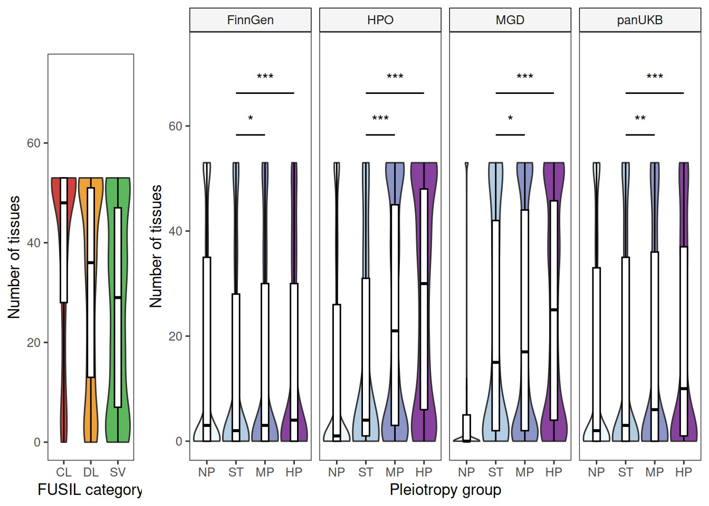
# Additional plots for supplementary information
median_plot <- plot_feature('median_exp', 'Median TPM', 100,
append_fusil_plot=T) group dataset feature pvalue
1 NP FinnGen 1.2892850 NA
2 ST FinnGen 0.8432365 NA
3 MP FinnGen 1.7174850 2.101004e-03
4 HP FinnGen 2.0715300 1.427268e-06
5 NP HPO 0.5678650 NA
6 ST HPO 1.4946200 NA
7 MP HPO 8.1682800 4.528974e-14
8 HP HPO 11.1434000 4.381682e-24
9 NP MGD 0.1049945 NA
10 ST MGD 6.2047800 NA
11 MP MGD 6.8514100 6.313828e-02
12 HP MGD 9.5014200 1.356947e-10
13 NP panUKB 1.0430000 NA
14 ST panUKB 1.7074150 NA
15 MP panUKB 2.7513500 1.183168e-03
16 HP panUKB 4.5795200 7.499191e-10
FUSIL feature
1 CL 22.2547
2 DL 14.2903
3 SV 10.7267print(median_plot)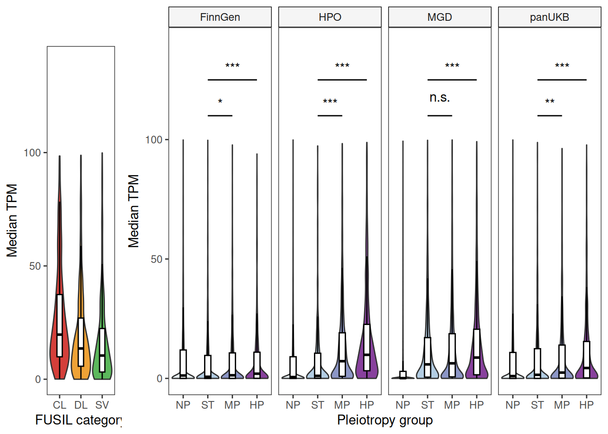
mean_plot <- plot_feature('mean_exp', 'Mean TPM', 100,
append_fusil_plot=T) group dataset feature pvalue
1 NP FinnGen 3.6750635 NA
2 ST FinnGen 2.7469087 NA
3 MP FinnGen 4.2377723 5.839504e-04
4 HP FinnGen 4.6338266 6.002572e-07
5 NP HPO 1.9643052 NA
6 ST HPO 5.3181512 NA
7 MP HPO 12.7785336 2.300671e-13
8 HP HPO 14.2107998 2.021949e-18
9 NP MGD 0.3561228 NA
10 ST MGD 9.9098492 NA
11 MP MGD 10.9046934 1.343556e-03
12 HP MGD 13.1777509 5.239159e-12
13 NP panUKB 3.2352080 NA
14 ST panUKB 4.3783050 NA
15 MP panUKB 5.8996294 8.986663e-04
16 HP panUKB 7.7277538 8.431401e-11
FUSIL feature
1 CL 22.10362
2 DL 17.47782
3 SV 14.69745print(mean_plot)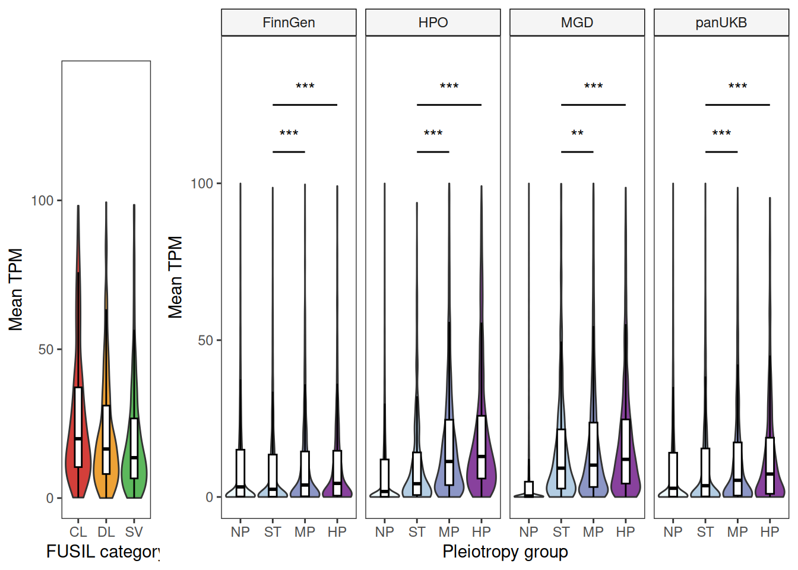
max_plot <- plot_feature('max_exp', 'Max. TPM across tissues', 500,
append_fusil_plot=T) group dataset feature pvalue
1 NP FinnGen 22.899600 NA
2 ST FinnGen 18.274900 NA
3 MP FinnGen 24.744750 3.694762e-04
4 HP FinnGen 26.124000 4.674971e-07
5 NP HPO 15.045300 NA
6 ST HPO 36.786700 NA
7 MP HPO 54.953600 1.083047e-05
8 HP HPO 55.254200 6.270257e-06
9 NP MGD 3.601305 NA
10 ST MGD 43.411150 NA
11 MP MGD 53.010400 1.499747e-06
12 HP MGD 54.701500 5.826302e-10
13 NP panUKB 21.056700 NA
14 ST panUKB 23.821300 NA
15 MP panUKB 30.036800 3.911046e-04
16 HP panUKB 36.583900 4.333732e-10
FUSIL feature
1 CL 57.8116
2 DL 57.4799
3 SV 59.3292print(max_plot)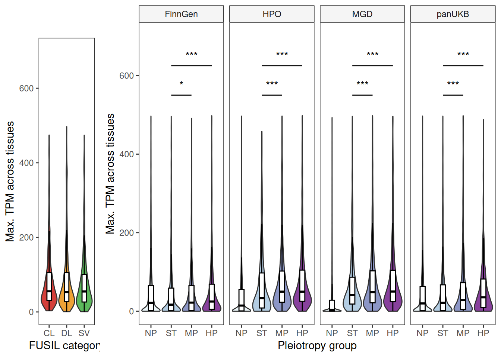
# Extended Data Figure 3
plot_grid(median_plot, mean_plot, max_plot, nrow=3, labels=c('a', 'b', 'c'),
label_size=20)PPI and dosage sensitivity measures
In this section, we plot BIOGRID PPI counts and dosage sensitivity values from Collins et al., 2022.
# PPI count
ppi_plot <- plot_feature('n_interactions', 'PPI count', ax_lim = 200,
append_fusil_plot=T) group dataset feature pvalue
1 NP FinnGen 56.0 NA
2 ST FinnGen 55.0 NA
3 MP FinnGen 55.0 8.760950e-01
4 HP FinnGen 60.0 2.770909e-01
5 NP HPO 46.0 NA
6 ST HPO 43.5 NA
7 MP HPO 77.0 4.830243e-08
8 HP HPO 128.0 6.354056e-27
9 NP MGD 40.0 NA
10 ST MGD 51.0 NA
11 MP MGD 59.0 8.321976e-05
12 HP MGD 93.0 3.666975e-35
13 NP panUKB 53.0 NA
14 ST panUKB 63.0 NA
15 MP panUKB 67.0 6.218964e-01
16 HP panUKB 72.0 8.696531e-02
FUSIL feature
1 CL 211.0
2 DL 121.0
3 SV 97.5print(ppi_plot)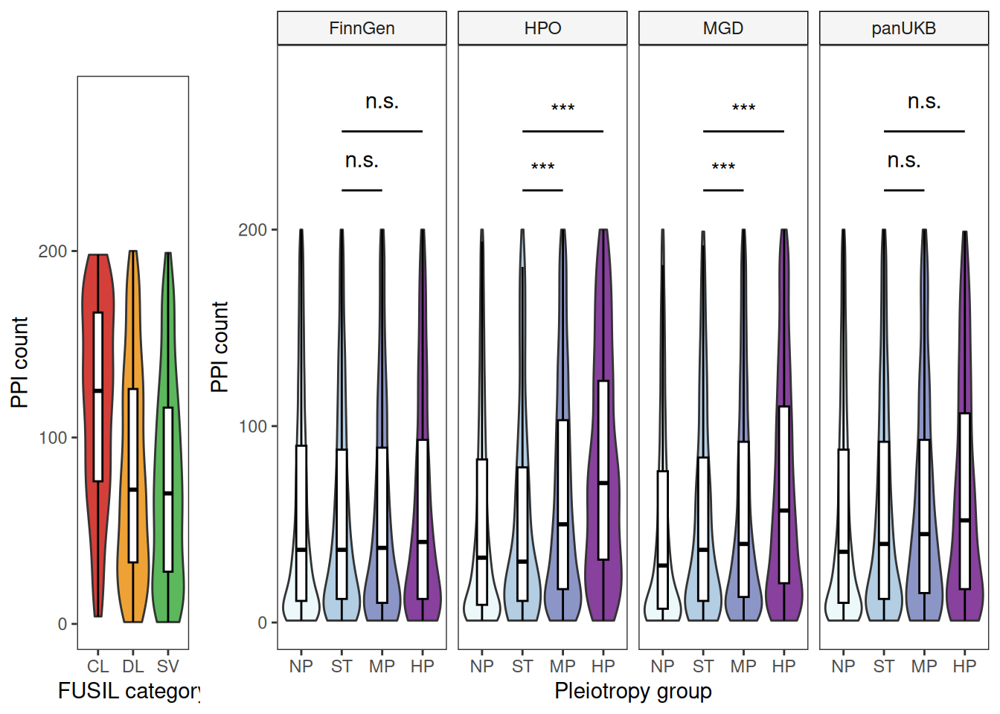
# Collin et al., 2022 - pHaplo and pTriplo
phaplo_plot <- plot_feature('pHaplo', 'pHaplo', append_fusil_plot=T) group dataset feature pvalue
1 NP FinnGen 0.4110 NA
2 ST FinnGen 0.5090 NA
3 MP FinnGen 0.5360 7.073449e-02
4 HP FinnGen 0.5480 6.872388e-05
5 NP HPO 0.4000 NA
6 ST HPO 0.3880 NA
7 MP HPO 0.5500 4.872625e-06
8 HP HPO 0.6250 3.160393e-09
9 NP MGD 0.3180 NA
10 ST MGD 0.4015 NA
11 MP MGD 0.4820 1.420811e-09
12 HP MGD 0.6870 2.481915e-65
13 NP panUKB 0.4170 NA
14 ST panUKB 0.4820 NA
15 MP panUKB 0.5330 6.428905e-03
16 HP panUKB 0.5905 2.845269e-08
FUSIL feature
1 CL 0.610
2 DL 0.657
3 SV 0.668print(phaplo_plot)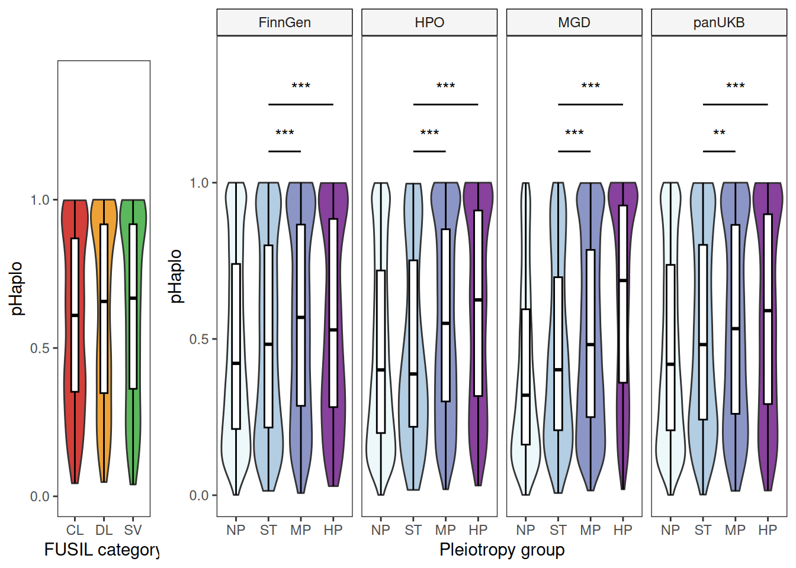
# Extended Data Figure 5
ptriplo_plot <- plot_feature('pTriplo', 'pTriplo', append_fusil_plot=T) group dataset feature pvalue
1 NP FinnGen 0.3845 NA
2 ST FinnGen 0.4380 NA
3 MP FinnGen 0.4425 4.836998e-01
4 HP FinnGen 0.4835 2.194920e-04
5 NP HPO 0.3700 NA
6 ST HPO 0.3970 NA
7 MP HPO 0.4830 2.194920e-04
8 HP HPO 0.5400 1.314397e-07
9 NP MGD 0.3150 NA
10 ST MGD 0.3840 NA
11 MP MGD 0.4320 1.810112e-05
12 HP MGD 0.5690 1.638506e-39
13 NP panUKB 0.3830 NA
14 ST panUKB 0.4325 NA
15 MP panUKB 0.4720 9.976902e-02
16 HP panUKB 0.4980 1.380237e-04
FUSIL feature
1 CL 0.596
2 DL 0.567
3 SV 0.607print(ptriplo_plot)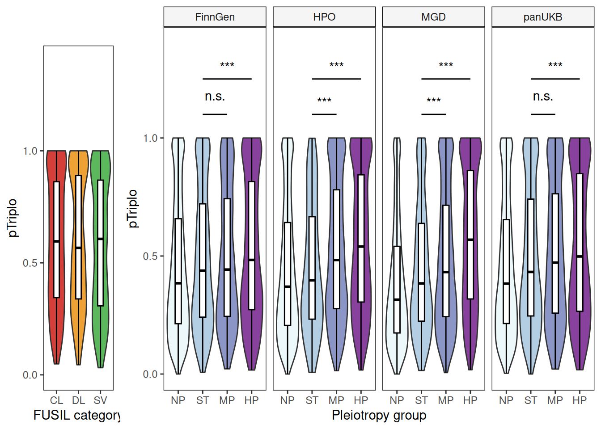
SN - plots of expression and PPI counts
Here, we plot the same features (number of tissues and the number of protein-protein interactors) for the max-indep and locus-wide pan-UKB data. These plots then go to SN2.2 and SN3.2
count_plot_mi <- plot_feature('count_exp', 'Number of tissues',
use_maxindep = TRUE) group dataset feature pvalue
1 NP panUKB 2 NA
2 ST panUKB 3 NA
3 MP panUKB 6 4.324565e-03
4 HP panUKB 10 6.814207e-09
5 NP panUKB_maxindep 2 NA
6 ST panUKB_maxindep 4 NA
7 MP panUKB_maxindep 7 2.117810e-02
8 HP panUKB_maxindep 9 1.669331e-03print(count_plot_mi)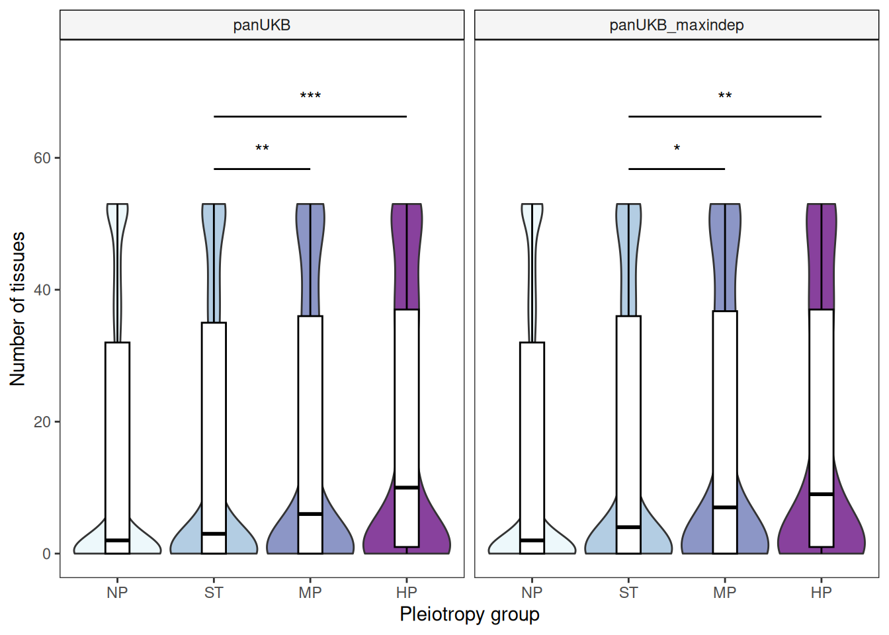
count_plot_lw <- plot_feature('count_exp', 'Number of tissues',
use_locuswide = TRUE) group dataset feature pvalue
1 NP panUKB 2 NA
2 ST panUKB 3 NA
3 MP panUKB 6 3.243423e-03
4 HP panUKB 10 2.271402e-09
5 NP panUKB_all 7 NA
6 ST panUKB_all 0 NA
7 MP panUKB_all 1 5.608527e-13
8 HP panUKB_all 2 1.283393e-29print(count_plot_lw)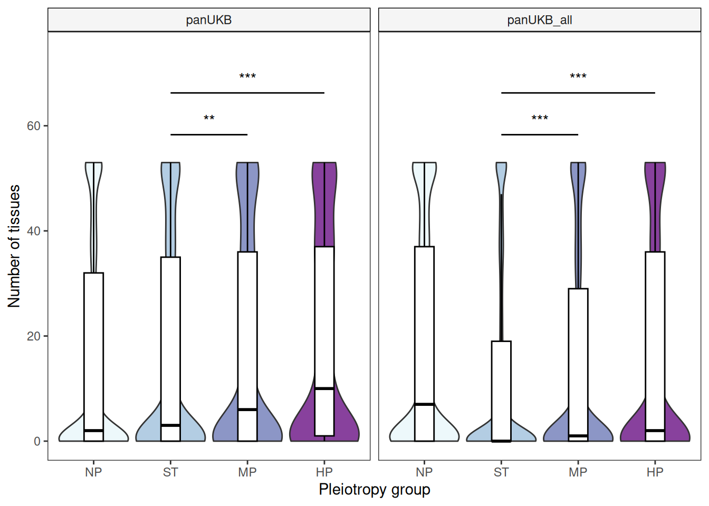
count_plot_fm <- plot_feature('count_exp', 'Number of tissues',
use_finemap = TRUE) group dataset feature pvalue
1 NP FinnGen 2 NA
2 ST FinnGen 2 NA
3 MP FinnGen 3 0.0182396319
4 HP FinnGen 4 0.0001250825
5 NP FinnGen_finemap 2 NA
6 ST FinnGen_finemap 10 NA
7 MP FinnGen_finemap 12 0.2798242591
8 HP FinnGen_finemap 11 0.2798242591print(count_plot_fm)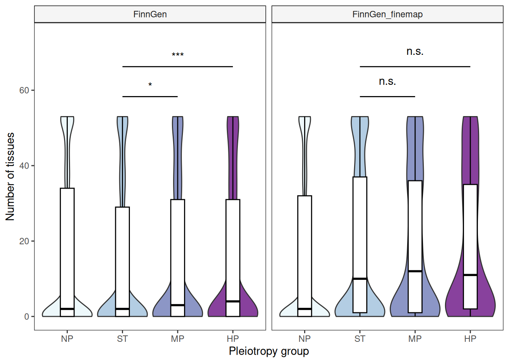
ppi_plot_mi <- plot_feature('n_interactions', 'PPI count',
use_maxindep = TRUE, ax_lim=200) group dataset feature pvalue
1 NP panUKB 53.0 NA
2 ST panUKB 63.0 NA
3 MP panUKB 67.0 0.7255458
4 HP panUKB 72.0 0.2174133
5 NP panUKB_maxindep 54.0 NA
6 ST panUKB_maxindep 65.0 NA
7 MP panUKB_maxindep 66.0 0.8859154
8 HP panUKB_maxindep 76.5 0.3154493print(ppi_plot_mi)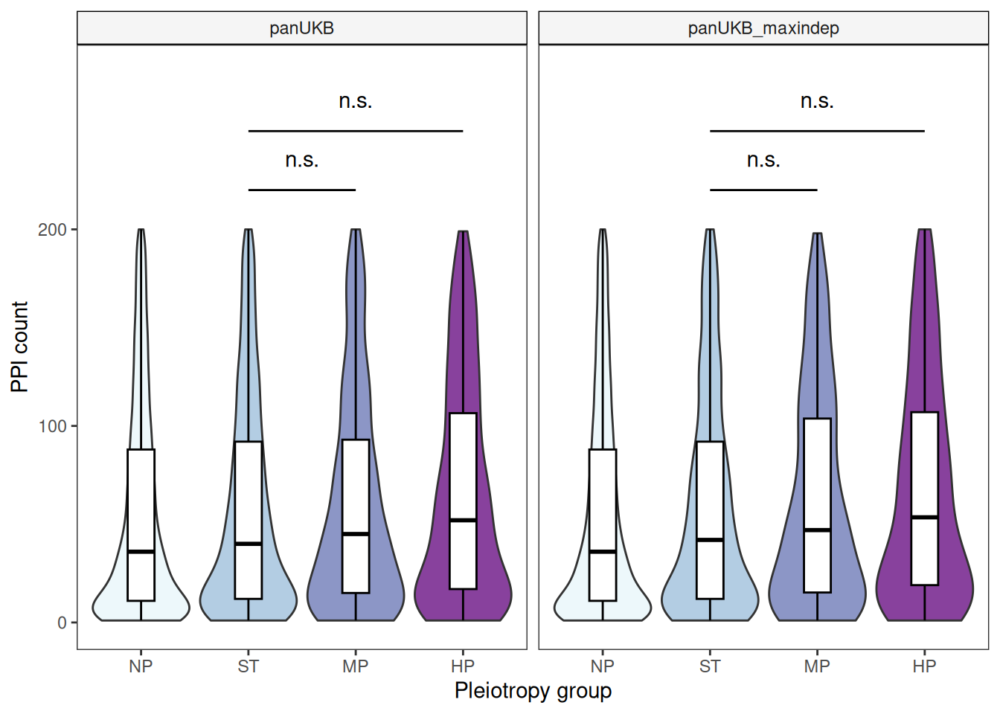
ppi_plot_lw <- plot_feature('n_interactions', 'PPI count',
use_locuswide = TRUE, ax_lim=200) group dataset feature pvalue
1 NP panUKB 53 NA
2 ST panUKB 63 NA
3 MP panUKB 67 5.441594e-01
4 HP panUKB 72 9.654454e-02
5 NP panUKB_all 53 NA
6 ST panUKB_all 54 NA
7 MP panUKB_all 58 9.654454e-02
8 HP panUKB_all 70 6.024981e-06print(ppi_plot_lw)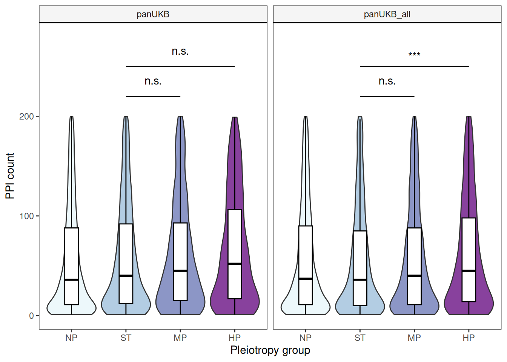
ppi_plot_fm <- plot_feature('n_interactions', 'PPI count',
use_finemap = TRUE, ax_lim=200) group dataset feature pvalue
1 NP FinnGen 56.0 NA
2 ST FinnGen 55.0 NA
3 MP FinnGen 55.0 0.876095028
4 HP FinnGen 60.0 0.415636418
5 NP FinnGen_finemap 55.0 NA
6 ST FinnGen_finemap 59.0 NA
7 MP FinnGen_finemap 57.5 0.876095028
8 HP FinnGen_finemap 76.0 0.005578549print(ppi_plot_fm)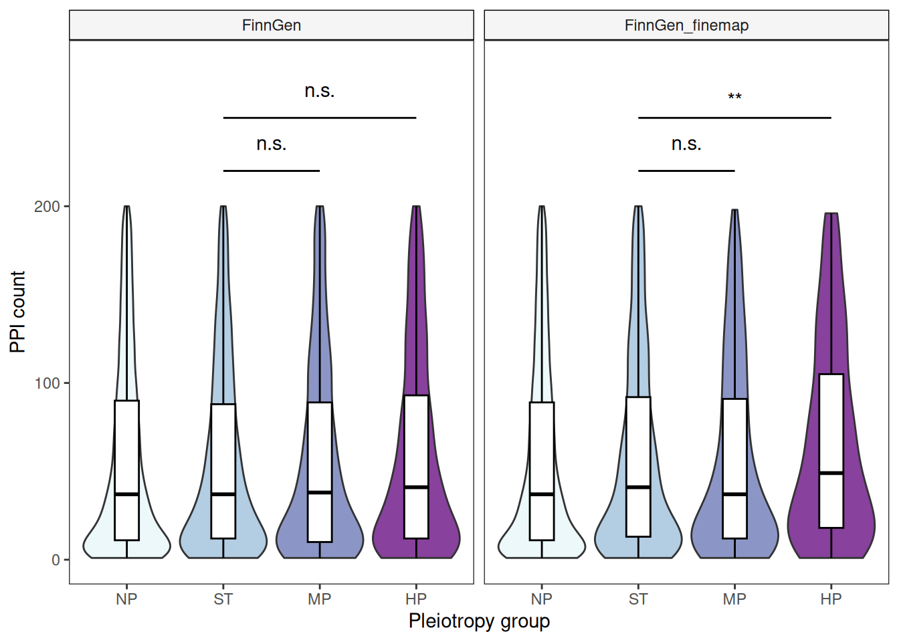
Gene length analysis
Let’s also briefly look into the distribution of gnee length according to the GENCODE v19 genome annotation:
length_plot <- plot_feature('gene_length', 'Gene length', log_scale = TRUE)Scale for y is already present.
Adding another scale for y, which will replace the existing scale. group dataset feature pvalue
1 NP FinnGen 9743.0 NA
2 ST FinnGen 24252.0 NA
3 MP FinnGen 37728.0 4.949179e-16
4 HP FinnGen 49548.0 1.219154e-38
5 NP HPO 9906.5 NA
6 ST HPO 34795.5 NA
7 MP HPO 37120.5 5.270381e-01
8 HP HPO 39475.0 3.414804e-01
9 NP MGD 3944.0 NA
10 ST MGD 30820.0 NA
11 MP MGD 32188.0 3.177007e-01
12 HP MGD 44904.0 1.257512e-13
13 NP panUKB 10575.5 NA
14 ST panUKB 20799.0 NA
15 MP panUKB 39240.0 1.105547e-21
16 HP panUKB 55799.0 2.364643e-53print(length_plot)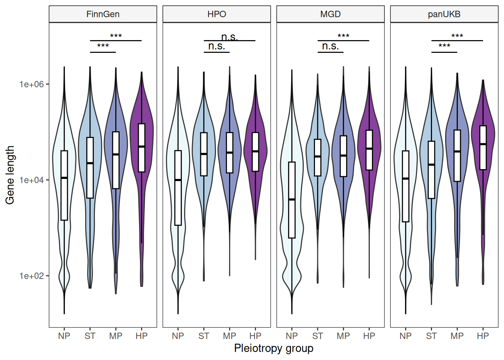
GO term counts per gene
In this section, we make plots with GO term counts. To construct such plots, we define a funciton for annotating genes with term counts, and then run the annotation prior to plotting the results.
add_count <- function(column_name, gotab_df, ont_name, gene_col='gene_human') {
cnt_vec <- table(gotab_df[gotab_df$ONTOLOGY == ont_name, 'SYMBOL'])
merged_data[, column_name] = sapply(merged_data[, gene_col], function(x)
cnt_vec[x])
return(merged_data)
}
merged_data <- add_count('gobp_cnt_human', human_gotab, 'BP')
merged_data <- add_count('gomf_cnt_human', human_gotab, 'MF')
merged_data <- add_count('gocc_cnt_human', human_gotab, 'CC')
merged_data <- add_count('gobp_cnt_mouse', mouse_gotab, 'BP', gene_col='gene_mouse')
merged_data <- add_count('gomf_cnt_mouse', mouse_gotab, 'MF', gene_col='gene_mouse')
merged_data <- add_count('gocc_cnt_mouse', mouse_gotab, 'CC', gene_col='gene_mouse')
gobp_plot <- plot_feature('gobp_cnt_human', 'GO BP count', ax_lim=50,
mouse_feature = 'gobp_cnt_mouse',
append_fusil_plot=T) group dataset feature pvalue
1 NP FinnGen 5 NA
2 ST FinnGen 6 NA
3 MP FinnGen 6 3.357305e-01
4 HP FinnGen 8 9.780703e-09
5 NP HPO 4 NA
6 ST HPO 7 NA
7 MP HPO 8 4.259689e-04
8 HP HPO 11 1.034936e-13
9 NP MGD 3 NA
10 ST MGD 5 NA
11 MP MGD 8 8.431493e-54
12 HP MGD 16 8.164748e-225
13 NP panUKB 5 NA
14 ST panUKB 6 NA
15 MP panUKB 7 1.438196e-01
16 HP panUKB 8 9.364498e-07
FUSIL feature
1 CL 6
2 DL 8
3 SV 7print(gobp_plot)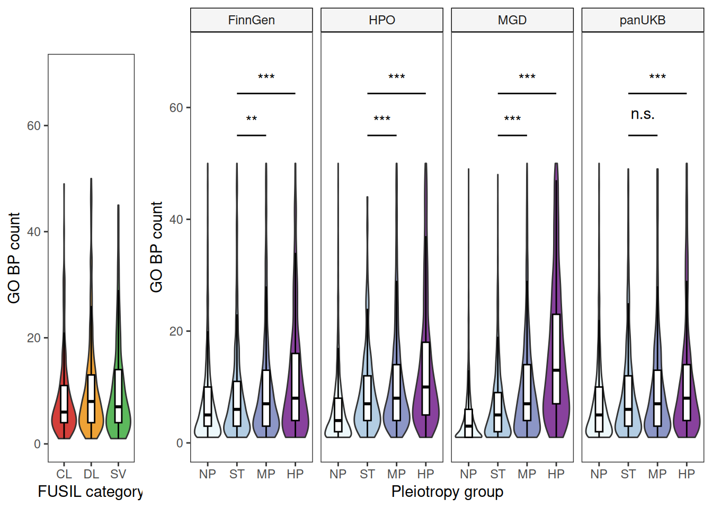
gomf_plot <- plot_feature('gomf_cnt_human', 'GO MF count', ax_lim=50,
mouse_feature = 'gomf_cnt_mouse',
append_fusil_plot=T) group dataset feature pvalue
1 NP FinnGen 4 NA
2 ST FinnGen 4 NA
3 MP FinnGen 5 1.433838e-01
4 HP FinnGen 5 1.731718e-09
5 NP HPO 3 NA
6 ST HPO 4 NA
7 MP HPO 5 5.685350e-04
8 HP HPO 6 5.016557e-12
9 NP MGD 2 NA
10 ST MGD 3 NA
11 MP MGD 5 2.003640e-22
12 HP MGD 7 1.396820e-122
13 NP panUKB 4 NA
14 ST panUKB 4 NA
15 MP panUKB 5 2.951597e-01
16 HP panUKB 5 1.731718e-09
FUSIL feature
1 CL 5
2 DL 5
3 SV 5print(gomf_plot)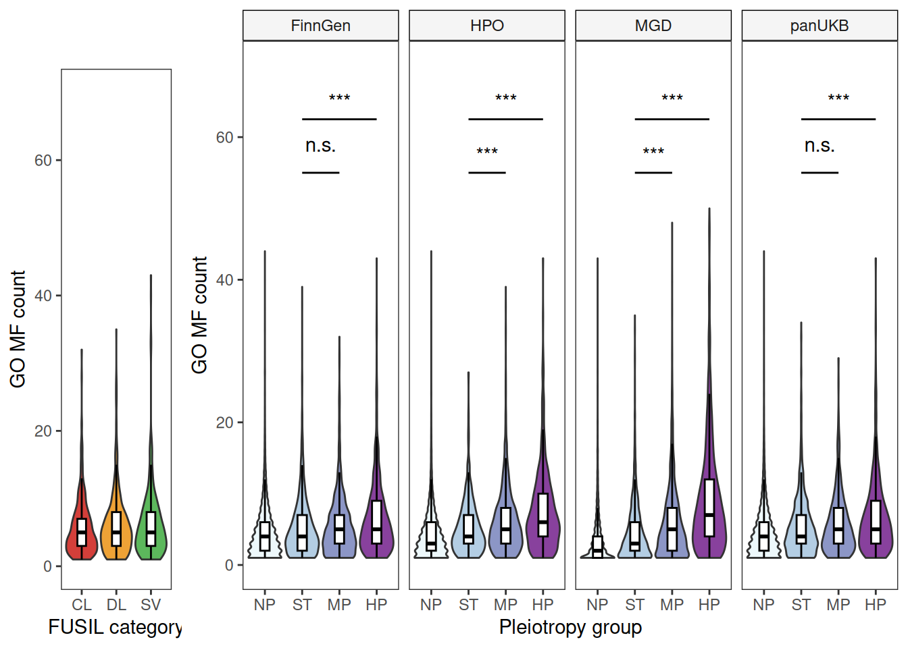
gocc_plot <- plot_feature('gocc_cnt_human', 'GO CC count', ax_lim=50,
mouse_feature = 'gocc_cnt_mouse',
append_fusil_plot=T) group dataset feature pvalue
1 NP FinnGen 5 NA
2 ST FinnGen 5 NA
3 MP FinnGen 5 7.189840e-01
4 HP FinnGen 6 4.615689e-04
5 NP HPO 4 NA
6 ST HPO 5 NA
7 MP HPO 7 3.046874e-04
8 HP HPO 8 6.798907e-14
9 NP MGD 3 NA
10 ST MGD 4 NA
11 MP MGD 6 2.109244e-29
12 HP MGD 8 2.011521e-97
13 NP panUKB 4 NA
14 ST panUKB 5 NA
15 MP panUKB 5 7.189840e-01
16 HP panUKB 6 1.305955e-02
FUSIL feature
1 CL 8
2 DL 7
3 SV 6print(gocc_plot)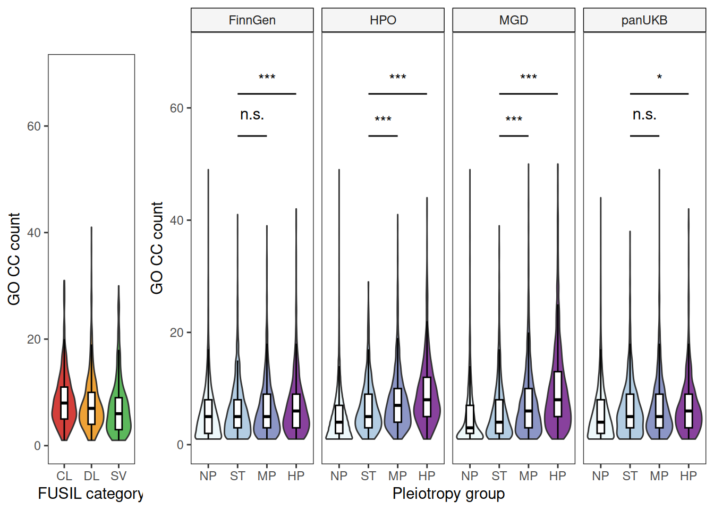
Besides, we plot the GO biological process term counts for other variants of the pan-UKB GWAS data (for SN2/3 figures):
gobp_plot_mi <- plot_feature('gobp_cnt_human', 'GO BP count',
use_maxindep = TRUE, ax_lim=50) group dataset feature pvalue
1 NP panUKB 5 NA
2 ST panUKB 6 NA
3 MP panUKB 7 1.677895e-01
4 HP panUKB 8 2.341125e-06
5 NP panUKB_maxindep 5 NA
6 ST panUKB_maxindep 7 NA
7 MP panUKB_maxindep 7 2.321760e-01
8 HP panUKB_maxindep 8 9.796420e-04print(gobp_plot_mi)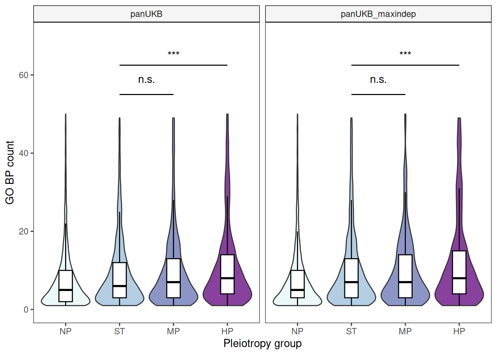
gobp_plot_lw <- plot_feature('gobp_cnt_human', 'GO BP count',
use_locuswide = TRUE, ax_lim=50) group dataset feature pvalue
1 NP panUKB 5 NA
2 ST panUKB 6 NA
3 MP panUKB 7 1.258421e-01
4 HP panUKB 8 2.341125e-06
5 NP panUKB_all 5 NA
6 ST panUKB_all 6 NA
7 MP panUKB_all 6 8.590116e-02
8 HP panUKB_all 6 1.075586e-04print(gobp_plot_lw)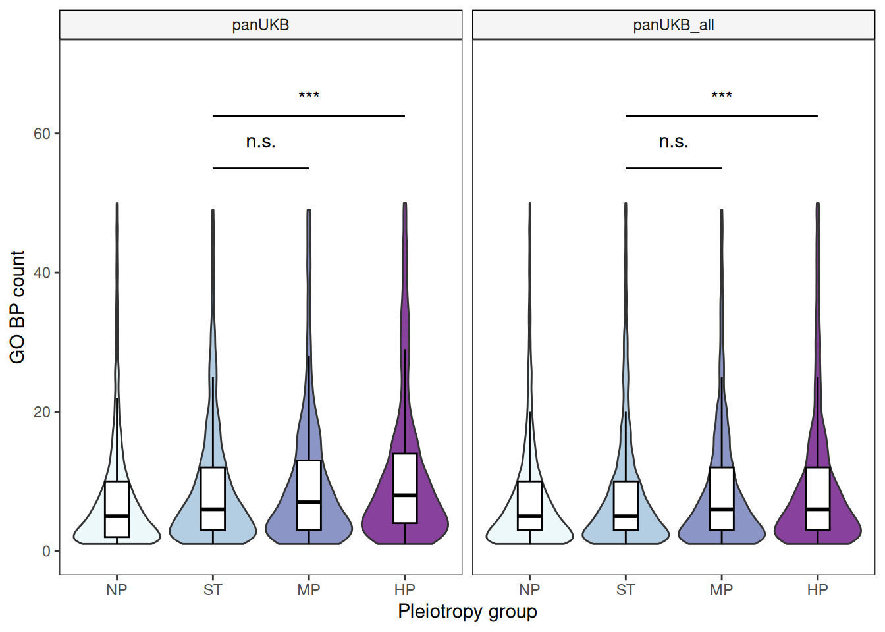
gobp_plot_fm <- plot_feature('gobp_cnt_human', 'GO BP count',
use_finemap = TRUE, ax_lim=50) group dataset feature pvalue
1 NP FinnGen 5 NA
2 ST FinnGen 6 NA
3 MP FinnGen 6 3.357305e-01
4 HP FinnGen 8 9.780703e-09
5 NP FinnGen_finemap 5 NA
6 ST FinnGen_finemap 6 NA
7 MP FinnGen_finemap 8 2.333191e-05
8 HP FinnGen_finemap 11 1.953119e-14print(gobp_plot_fm)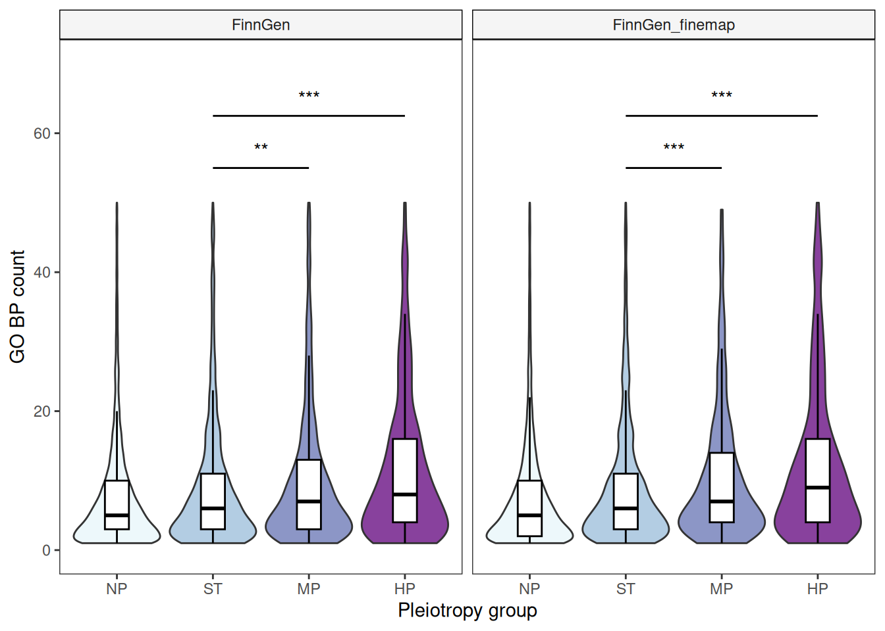
And a plot for Extended Data (hidden from Qmd output).
# Extended Data Figure 4
plot_grid(gocc_plot, gomf_plot, nrow=2, labels=c('a', 'b'))# Figure 2 -- 10 * 12 (landscape) or 9 * 9
plot_grid(count_plot, ppi_plot, gobp_plot, phaplo_plot,
ncol=1, labels=c('a', 'b', 'c', 'd'), label_size = 20)Gene set enrichment analysis
Basic enrichment testing
Here, we run the enrichment using the clusterProfiler package, without setting the universe (i.e., running against all genes in the genome). We run the analysis using only highly-pleiotropic gene subset.
First, we define function for running the enrichment:
# Conveniences for EA
extract_dbname <- function(x, gs_sizes) {
gs_size = gs_sizes[x]
db_name <- str_match(x, 'KEGG|REACTOME|PID|BIOCARTA|WP|HALLMARK|NABA')[, 1]
gs_name <- tolower(substr(x, str_length(db_name) + 2,
str_length(x)))
gs_name <- gsub('_', ' ', gs_name)
gs_size_str <- paste0('(n=', gs_size, ')')
return(paste(db_name, gs_name, gs_size_str, sep=' '))
}
make_enrichment_plot <- function(gene_list, orgdb_name,
ontology, plot_title,
data_source="PO",
use_t2g=FALSE,
t2g_df=NA,
gs_sizes=NA) {
if (use_t2g) {
t2g_df$gs_name = sapply(t2g_df$gs_name, function(x)
extract_dbname(x, gs_sizes))
ego <- enricher(gene = gene_list,
TERM2GENE = t2g_df,
pvalueCutoff = 0.05,
pAdjustMethod = "BH",
maxGSSize = 2500)
} else {
ego <- enrichGO(gene = gene_list,
OrgDb = orgdb_name,
keyType = "SYMBOL",
ont = ontology,
pvalueCutoff = 0.05,
pAdjustMethod = "BH",
maxGSSize = 2500,
readable = TRUE)
}
go_res_plot <- dotplot(ego, showCategory=10, title=plot_title)
write.csv(ego, file = paste0(data_source, '_', orgdb_name, "_", ontology, ".csv"),
row.names = FALSE)
return(list('df' = as.data.frame(ego), 'plot' = go_res_plot))
}And then apply the function to gene sets:
# Human
human_bp <- make_enrichment_plot(hip_genes_hpo, "org.Hs.eg.db", 'BP',
'Biological process (human)')
print(human_bp$plot)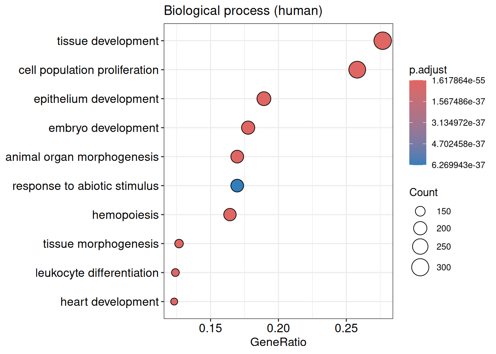
human_mf <- make_enrichment_plot(hip_genes_hpo, "org.Hs.eg.db", 'MF',
'Molecular functoin (human)')
print(human_mf$plot)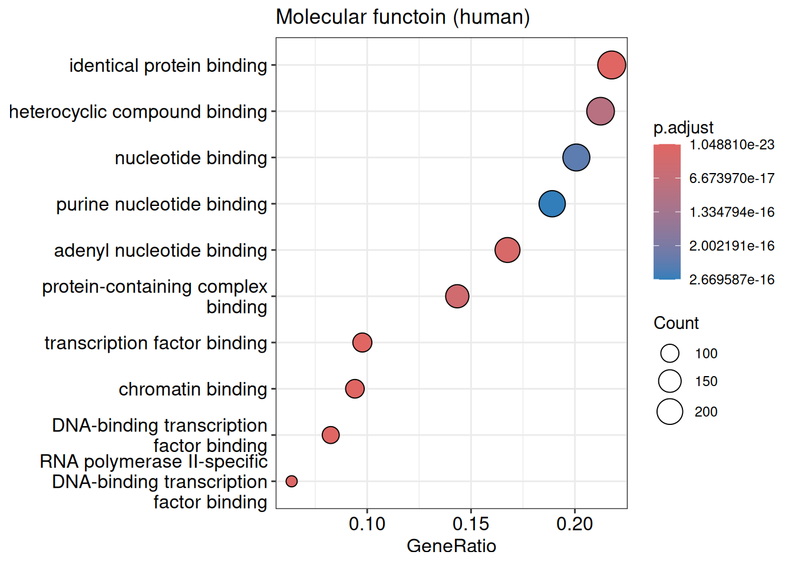
human_cc <- make_enrichment_plot(hip_genes_hpo, "org.Hs.eg.db", 'CC',
'Cellular component (human)')
print(human_cc$plot)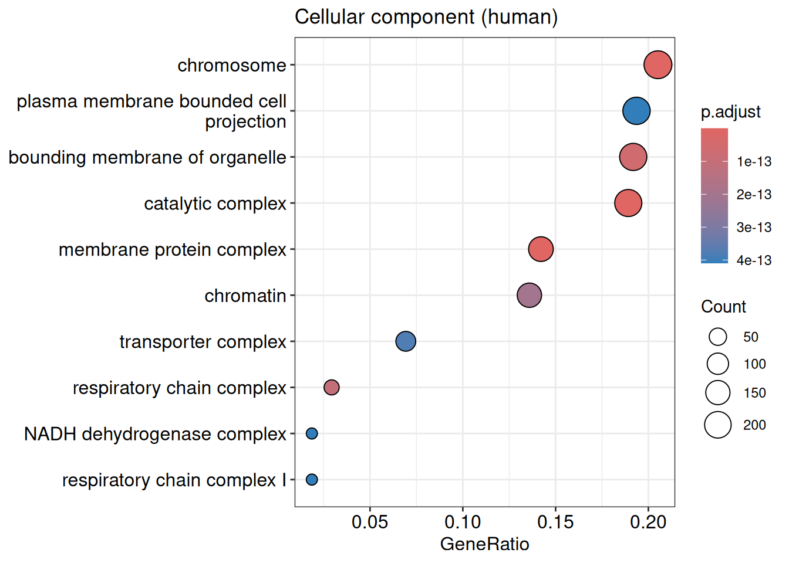
# Molecular function enrichment with all HPO genes
all_hpo_genes <- merged_data[!is.na(merged_data$pleiotropy_HPO),
'gene_human']
all_hpo_mf <- make_enrichment_plot(all_hpo_genes, 'org.Hs.eg.db', 'MF',
'Molecular function (all HPO genes')
print(all_hpo_mf$plot)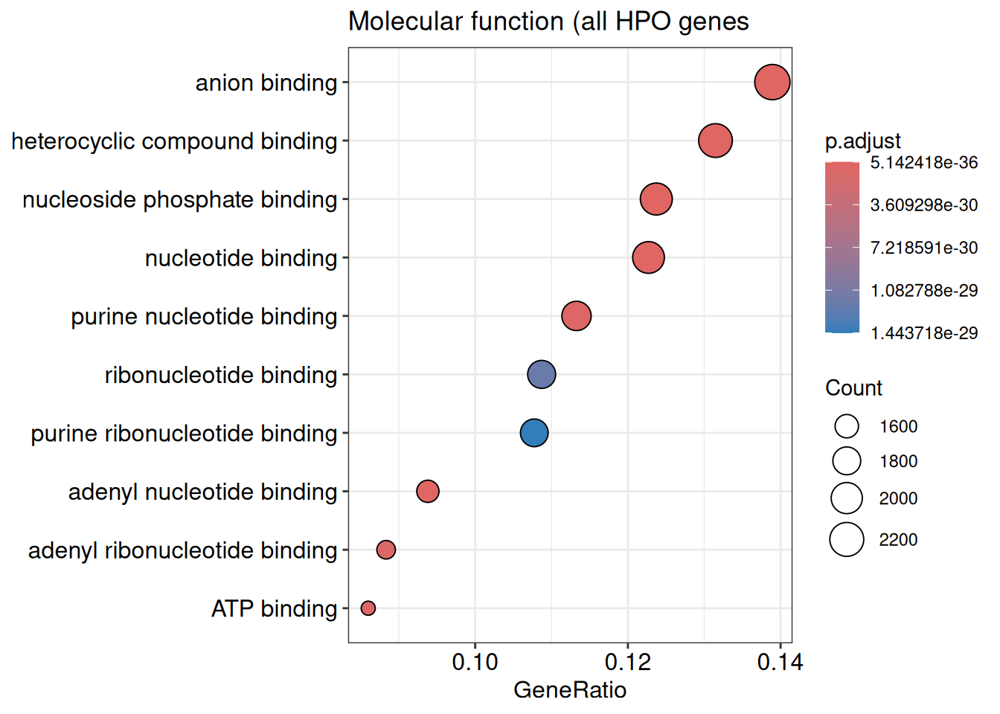
all_hpo_tf <- all_hpo_mf$df[grepl('transcription factor',
all_hpo_mf$df$Description), ]
hip_hpo_tf <- human_mf$df[grepl('transcription factor',
human_mf$df$Description), ]
# Checking using 'DNA binding
all_hpo_dnab <- all_hpo_mf$df[grepl('DNA binding',
all_hpo_mf$df$Description), ]
hip_hpo_dnab <- human_mf$df[grepl('DNA binding',
human_mf$df$Description), ]
# Mouse
hip_genes_mgd_mm <- na.omit(merged_data$gene_mouse[merged_data$MP_high_count > hip_cut_mgd])
mouse_bp <- make_enrichment_plot(hip_genes_mgd_mm, "org.Mm.eg.db", 'BP',
'Biological process (mouse)')
print(mouse_bp$plot)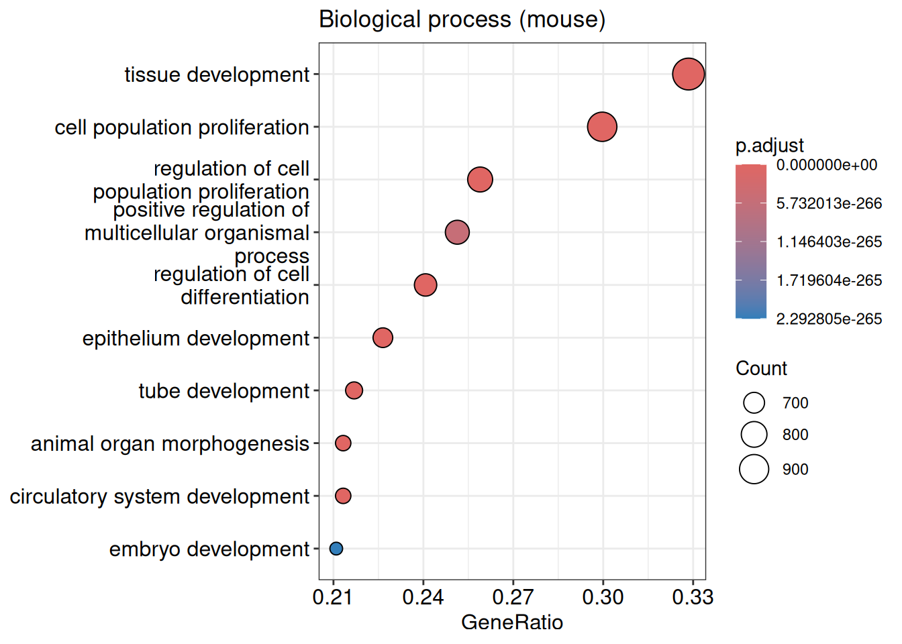
mouse_mf <- make_enrichment_plot(hip_genes_mgd_mm, "org.Mm.eg.db", 'MF',
'Molecular functoin (mouse)')
print(mouse_mf$plot)
mouse_cc <- make_enrichment_plot(hip_genes_mgd_mm, "org.Mm.eg.db", 'CC',
'Cellular component (mouse))')
print(mouse_cc$plot)
The same for pan-UKB data (we separate it from the rest because we should bear in mind that GSEA in GWAS may be biased by linkage disequilibrium).
# panUKB analysis - undestandably flawed, but still important
puk_bp <- make_enrichment_plot(hip_genes_puk, "org.Hs.eg.db", 'BP',
'Biological process (human)', data_source = "GWAS")
print(puk_bp$plot)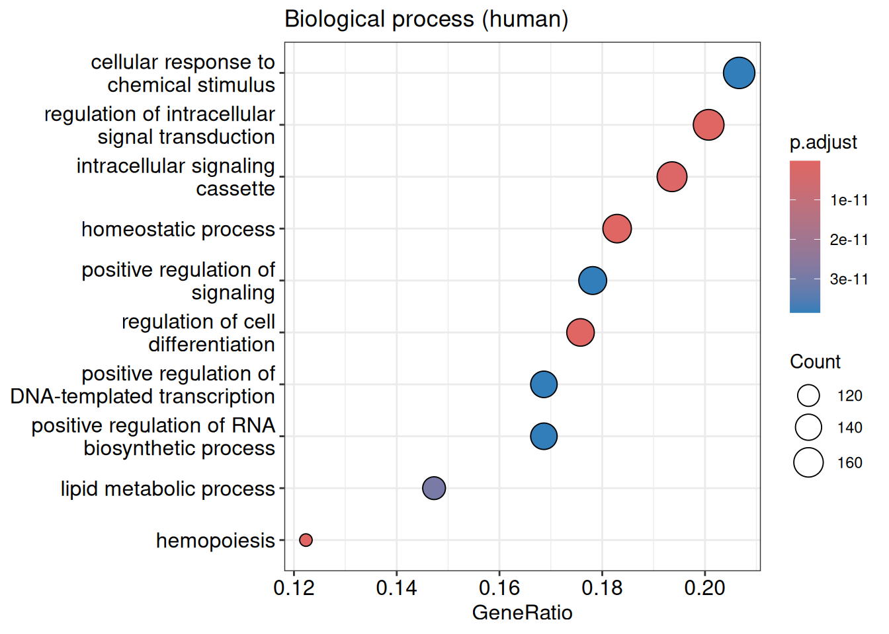
puk_mf <- make_enrichment_plot(hip_genes_puk, "org.Hs.eg.db", 'MF',
'Molecular functoin (human)', data_source = "GWAS")
print(puk_mf$plot)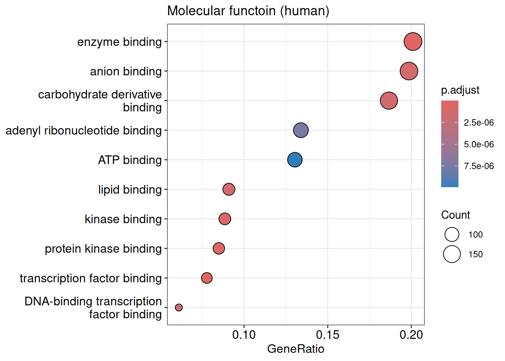
puk_cc <- make_enrichment_plot(hip_genes_puk, "org.Hs.eg.db", 'CC',
'Cellular component (human)', data_source = "GWAS")
print(puk_cc$plot)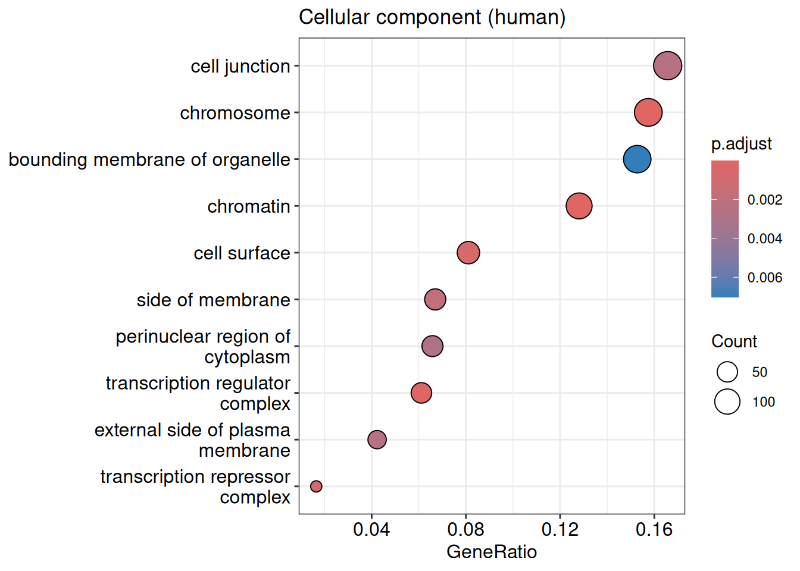
# FinnGen-based analysis
fg_bp <- make_enrichment_plot(hip_genes_fg, "org.Hs.eg.db", 'BP',
'Biological process (human)', data_source = "FG")
print(fg_bp$plot)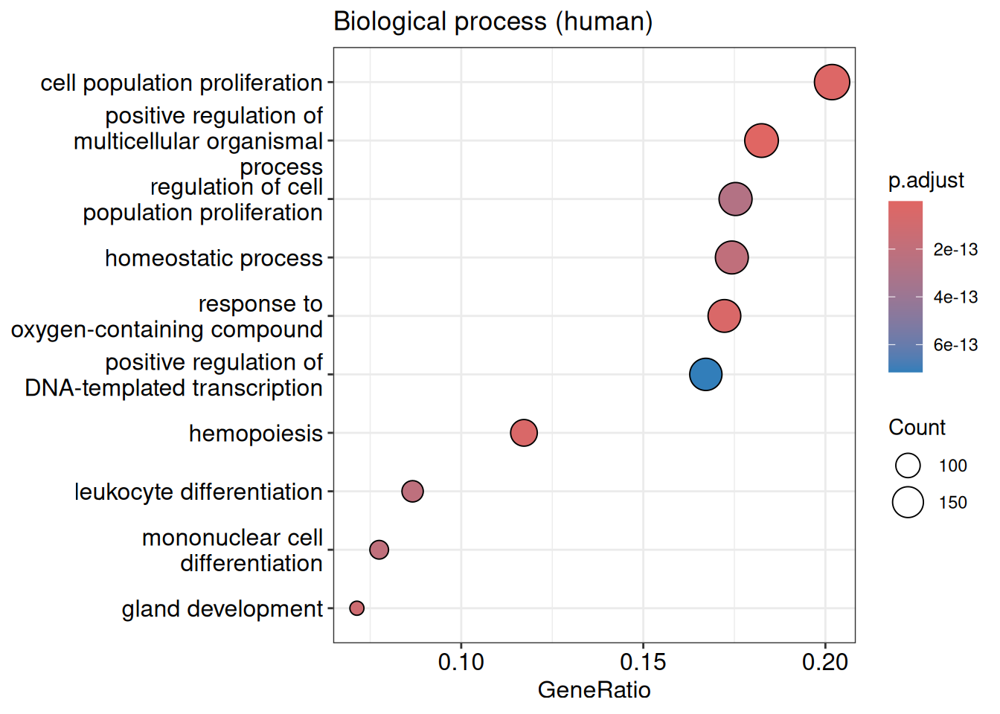
fg_mf <- make_enrichment_plot(hip_genes_fg, "org.Hs.eg.db", 'MF',
'Molecular functoin (human)', data_source = "FG")
print(fg_mf$plot)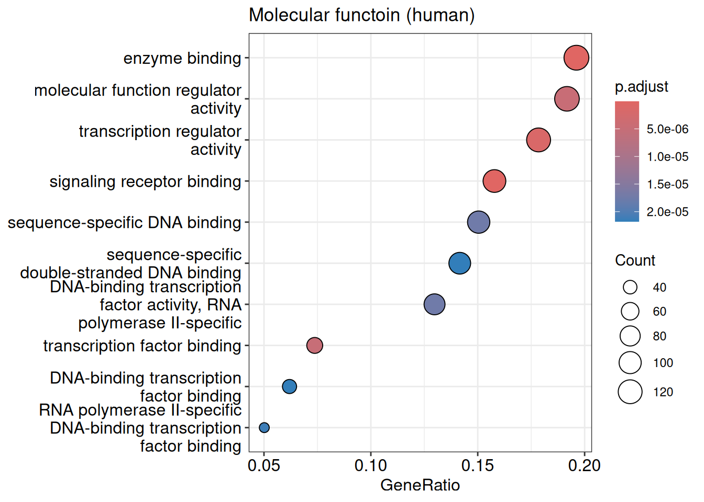
fg_cc <- make_enrichment_plot(hip_genes_fg, "org.Hs.eg.db", 'CC',
'Cellular component (human)', data_source = "FG")
print(fg_cc$plot)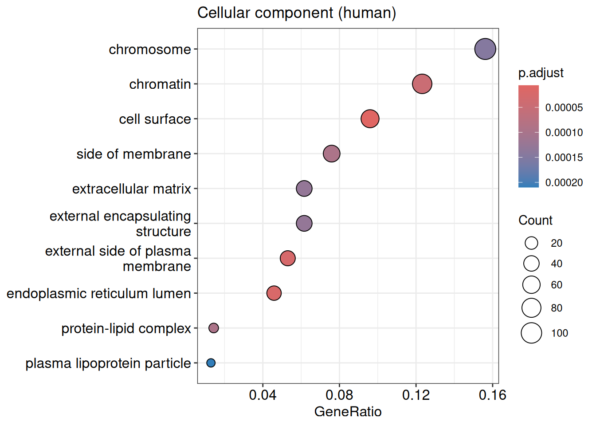
# Extended Data Figure 8-10 (8 * 10 each)
plot_grid(human_bp$plot, mouse_bp$plot, puk_bp$plot,
nrow=3, labels=c('a', 'b', 'c'), label_size = 20)plot_grid(human_mf$plot, mouse_mf$plot, puk_mf$plot,
nrow=3, labels=c('a', 'b', 'c'), label_size = 20)plot_grid(human_cc$plot, mouse_cc$plot, puk_cc$plot,
nrow=3, labels=c('a', 'b', 'c'), label_size = 20)Hallmark and canonical pathway analysis
Data retrieval and filtering
In this section, we endeavor to run the same EA framework but using the canonical pathway gene sets. We will run it in the two following ways:
Using hallmark (H) gene sets
Using the canonical pathway (CP) dataset;
Constructing the maximum independent set of pathways in an iterative algorithm
First, let’s get the data from MSigDB using the msigdbrfunctions:
# Hallmarks
hallmark_human_t2g = msigdbr(species = "human",
category = "H") %>%
dplyr::distinct(gs_name, gene_symbol) %>%
as.data.frame()
hallmark_mouse_t2g = msigdbr(species = "mouse",
category = "H") %>%
dplyr::distinct(gs_name, gene_symbol) %>%
as.data.frame()
cp_human_t2g = msigdbr(species = "human", category = "C2") %>%
dplyr::filter(gs_subcat != 'CGP') %>%
dplyr::distinct(gs_name, gene_symbol) %>%
as.data.frame()
cp_mouse_t2g = msigdbr(species = "mouse", category = "C2") %>%
dplyr::filter(gs_subcat != 'CGP') %>%
dplyr::distinct(gs_name, gene_symbol) %>%
as.data.frame()
gs_sizes <- c(table(cp_human_t2g$gs_name),
table(hallmark_human_t2g$gs_name))Raw H and CP testing
Now, we run the plain EA using the hallmarks:
human_hall <- make_enrichment_plot(hip_genes_hpo, "MSigDB",
"H", 'Hallmarks (human)', use_t2g = TRUE,
t2g_df=hallmark_human_t2g,
gs_sizes=gs_sizes)
print(human_hall$plot)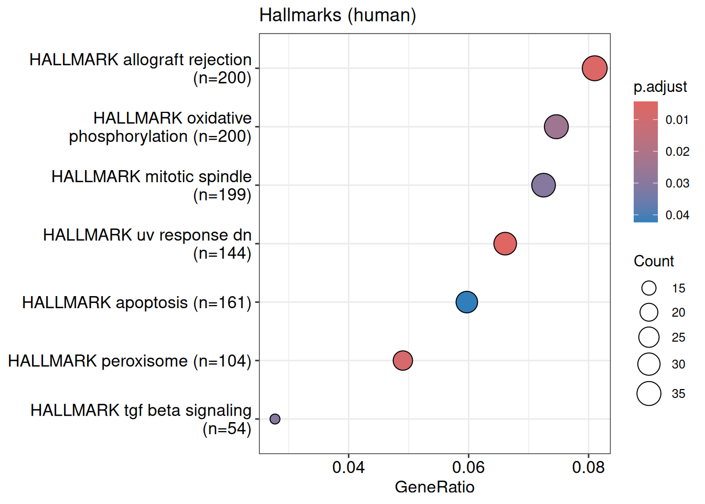
mouse_hall <- make_enrichment_plot(hip_genes_mgd_mm, "MSigDB",
"H", 'Hallmarks (mouse)', use_t2g = TRUE,
t2g_df=hallmark_mouse_t2g,
gs_sizes=gs_sizes)
print(mouse_hall$plot)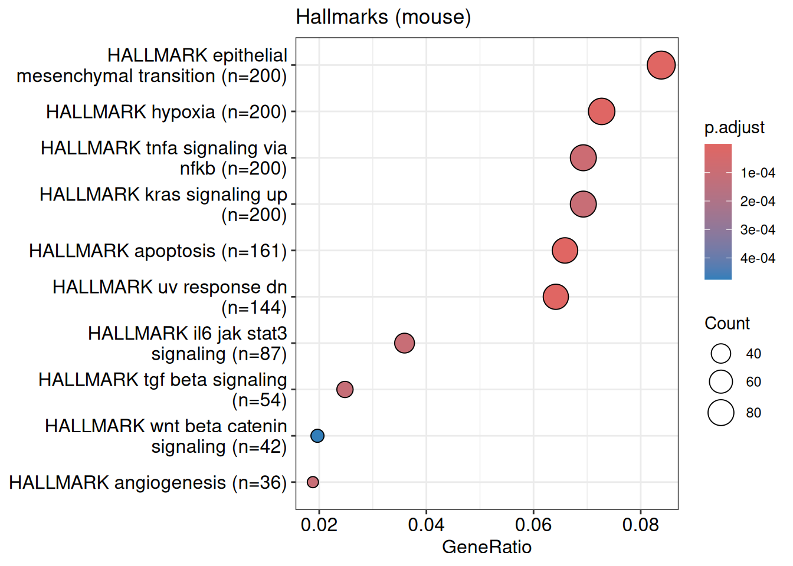
puk_hall <- make_enrichment_plot(hip_genes_puk, "MSigDB",
"H", 'Hallmarks (GWAS)', use_t2g = TRUE,
t2g_df=hallmark_human_t2g,
data_source = "GWAS",
gs_sizes=gs_sizes)
print(puk_hall$plot)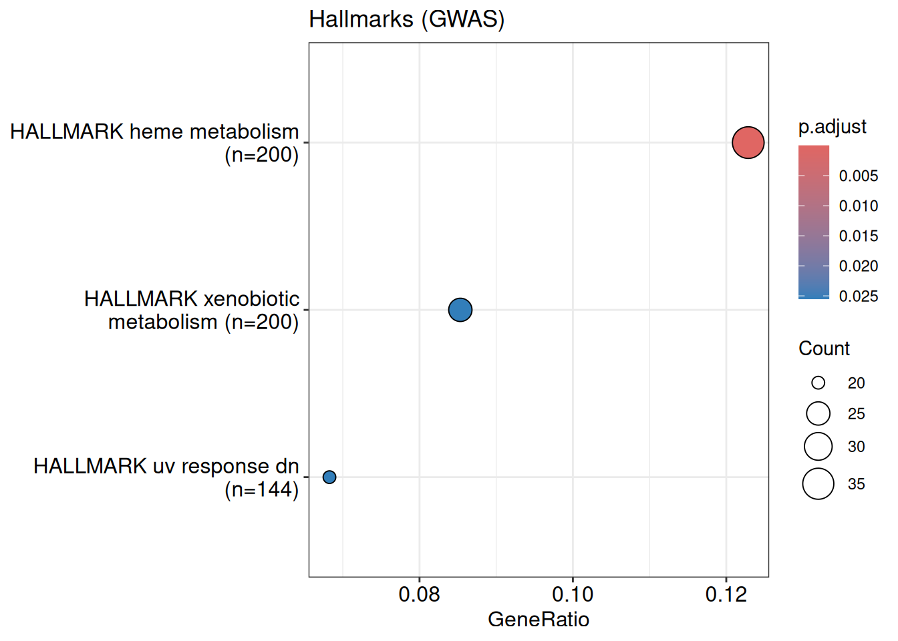
fg_hall <- make_enrichment_plot(hip_genes_fg, "MSigDB",
"H", 'Hallmarks (GWAS)', use_t2g = TRUE,
t2g_df=hallmark_human_t2g,
data_source = "FG",
gs_sizes=gs_sizes)
print(fg_hall)$df
ID
HALLMARK uv response dn (n=144) HALLMARK uv response dn (n=144)
Description GeneRatio
HALLMARK uv response dn (n=144) HALLMARK uv response dn (n=144) 28/325
BgRatio RichFactor FoldEnrichment zScore
HALLMARK uv response dn (n=144) 144/4383 0.1944444 2.622308 5.601503
pvalue p.adjust qvalue
HALLMARK uv response dn (n=144) 1.427439e-06 6.994449e-05 6.010268e-05
geneID
HALLMARK uv response dn (n=144) CAV1/VAV2/ATP2B1/ATXN1/PIK3R3/SMAD7/SMAD3/SLC22A18/EFEMP1/MAP2K5/MAPK14/NEK7/DDAH1/SYNE1/PEX14/KALRN/ZMIZ1/BCKDHB/BDNF/COL11A1/NR3C1/ITGB3/LDLR/MET/PRKCA/PRKCE/PPARG/RUNX1
Count
HALLMARK uv response dn (n=144) 28
$plot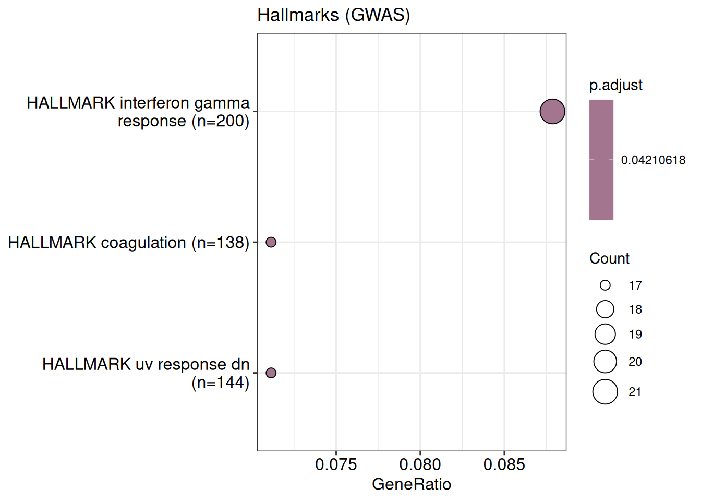
There are virtually no overlapping enriched gene sets, except for the HALLMARK UV RESPONSE DN. The overall number of enriched sets is below 10 for all sources except MGD. Hence, let’s proceed to the CP.
human_cp <- make_enrichment_plot(hip_genes_hpo, "MSigDB",
"CP", 'Canonical pathways (human)', use_t2g = TRUE,
t2g_df=cp_human_t2g, gs_sizes=gs_sizes)
print(human_cp$plot)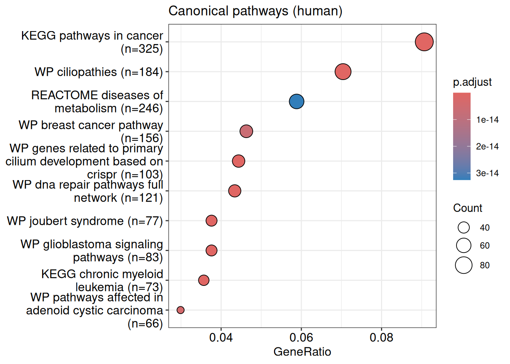
mouse_cp <- make_enrichment_plot(hip_genes_mgd_mm, "MSigDB",
"CP", 'Canonical pathways (mouse)', use_t2g = TRUE,
t2g_df=cp_mouse_t2g, gs_sizes=gs_sizes)
print(mouse_cp$plot)puk_cp <- make_enrichment_plot(hip_genes_puk, "MSigDB",
"CP", 'Canonical pathways (GWAS)', use_t2g = TRUE,
t2g_df=cp_human_t2g, gs_sizes=gs_sizes,
data_source = "GWAS")
print(puk_cp$plot)fg_cp <- make_enrichment_plot(hip_genes_fg, "MSigDB",
"CP", 'Canonical pathways (GWAS)', use_t2g = TRUE,
t2g_df=cp_human_t2g, gs_sizes=gs_sizes,
data_source = "FG")
print(fg_cp$plot)Some additional code for the figure export:
# Extended Data Figure 6
plot_grid(human_hall$plot, mouse_hall$plot, puk_hall$plot,
nrow=3, labels=c('a', 'b', 'c'), label_size=22)# Extended Data Figure 7
plot_grid(human_cp$plot, mouse_cp$plot, puk_cp$plot,
nrow=3, labels=c('a', 'b', 'c'), label_size=22)Independent large pathways
Now let’s try constructing the maximum independent set of CP pathways. To do so, we will do the following:
- Compute the number of genes per pathway;
- Take the largest one by the total gene count;
- Subtract genes belonging to the pathway in (2), return to step (1).
- Repeat until a certain number or fraction of genes are covered
max_indep_gs <- function(t2g_df, gene_cutoff=15000,
increment_cutoff=50) {
next_iteration = TRUE
indep_gs_set <- c()
seen_genes <- c()
init_gs_gene_counts <- table(t2g_df$gs_name)
while (next_iteration) {
gs_gene_counts = table(t2g_df$gs_name)
largest_gs <- names(gs_gene_counts)[which.max(gs_gene_counts)]
largest_gs_genes <- t2g_df[t2g_df$gs_name == largest_gs,
'gene_symbol']
seen_genes <- c(seen_genes, largest_gs_genes)
indep_gs_set <- c(indep_gs_set, largest_gs)
# Logging
print(noquote(paste(length(indep_gs_set),
largest_gs, init_gs_gene_counts[largest_gs],
length(largest_gs_genes),
length(seen_genes), sep=' ')))
t2g_df <- t2g_df[!(t2g_df$gene_symbol %in% largest_gs_genes), ]
if (length(seen_genes) >= gene_cutoff ||
nrow(t2g_df) == 0 ||
length(largest_gs_genes) < increment_cutoff) {
break
}
}
return(indep_gs_set)
}
indep_cp_human <- max_indep_gs(cp_human_t2g,
increment_cutoff = 25)[1] 1 REACTOME_POST_TRANSLATIONAL_PROTEIN_MODIFICATION 1434 1434 1434
[1] 2 REACTOME_RNA_POLYMERASE_II_TRANSCRIPTION 1375 1149 2583
[1] 3 NABA_MATRISOME 1026 885 3468
[1] 4 REACTOME_INNATE_IMMUNE_SYSTEM 1117 785 4253
[1] 5 REACTOME_DEVELOPMENTAL_BIOLOGY 1142 652 4905
[1] 6 REACTOME_METABOLISM_OF_LIPIDS 743 555 5460
[1] 7 REACTOME_TRANSPORT_OF_SMALL_MOLECULES 728 536 5996
[1] 8 REACTOME_SIGNALING_BY_GPCR 698 484 6480
[1] 9 KEGG_OLFACTORY_TRANSDUCTION 389 371 6851
[1] 10 REACTOME_METABOLISM_OF_RNA 672 364 7215
[1] 11 REACTOME_SIGNALING_BY_RHO_GTPASES_MIRO_GTPASES_AND_RHOBTB3 719 349 7564
[1] 12 REACTOME_VESICLE_MEDIATED_TRANSPORT 724 291 7855
[1] 13 REACTOME_ADAPTIVE_IMMUNE_SYSTEM 825 250 8105
[1] 14 REACTOME_NEURONAL_SYSTEM 411 230 8335
[1] 15 REACTOME_CELL_CYCLE 691 220 8555
[1] 16 REACTOME_METABOLISM_OF_AMINO_ACIDS_AND_DERIVATIVES 374 214 8769
[1] 17 REACTOME_CYTOKINE_SIGNALING_IN_IMMUNE_SYSTEM 719 200 8969
[1] 18 REACTOME_TRANSLATION 295 169 9138
[1] 19 REACTOME_CELLULAR_RESPONSES_TO_STIMULI 783 159 9297
[1] 20 WP_CILIOPATHIES 184 153 9450
[1] 21 REACTOME_METABOLISM_OF_CARBOHYDRATES 293 147 9597
[1] 22 REACTOME_THE_CITRIC_ACID_TCA_CYCLE_AND_RESPIRATORY_ELECTRON_TRANSPORT 178 128 9725
[1] 23 REACTOME_BIOLOGICAL_OXIDATIONS 222 125 9850
[1] 24 REACTOME_HEMOSTASIS 678 123 9973
[1] 25 REACTOME_METABOLISM_OF_VITAMINS_AND_COFACTORS 189 113 10086
[1] 26 WP_MALIGNANT_PLEURAL_MESOTHELIOMA 446 113 10199
[1] 27 REACTOME_DNA_REPAIR 330 96 10295
[1] 28 WP_ALZHEIMERS_DISEASE_AND_MIRNA_EFFECTS 336 94 10389
[1] 29 WP_VEGFAVEGFR2_SIGNALING_PATHWAY 438 92 10481
[1] 30 REACTOME_CHROMATIN_MODIFYING_ENZYMES 272 89 10570
[1] 31 REACTOME_SENSORY_PERCEPTION 284 80 10650
[1] 32 REACTOME_METABOLISM_OF_NUCLEOTIDES 97 78 10728
[1] 33 WP_IL18_SIGNALING_PATHWAY 279 67 10795
[1] 34 REACTOME_PROTEIN_LOCALIZATION 164 59 10854
[1] 35 WP_MESODERMAL_COMMITMENT_PATHWAY 155 56 10910
[1] 36 REACTOME_MUSCLE_CONTRACTION 195 55 10965
[1] 37 REACTOME_DISEASES_OF_SIGNAL_TRANSDUCTION_BY_GROWTH_FACTOR_RECEPTORS_AND_SECOND_MESSENGERS 432 53 11018
[1] 38 WP_CILIARY_LANDSCAPE 219 49 11067
[1] 39 REACTOME_CELL_CELL_COMMUNICATION 130 48 11115
[1] 40 WP_MALE_INFERTILITY 155 48 11163
[1] 41 REACTOME_SIGNALING_BY_RECEPTOR_TYROSINE_KINASES 519 45 11208
[1] 42 WP_22Q112_COPY_NUMBER_VARIATION_SYNDROME 131 42 11250
[1] 43 WP_CIRCADIAN_RHYTHM_GENES 207 40 11290
[1] 44 WP_NUCLEAR_RECEPTORS_METAPATHWAY 321 40 11330
[1] 45 WP_PARKINSONS_DISEASE_PATHWAY 84 39 11369
[1] 46 WP_ECTODERM_DIFFERENTIATION 144 36 11405
[1] 47 REACTOME_ORGANELLE_BIOGENESIS_AND_MAINTENANCE 296 34 11439
[1] 48 REACTOME_EXTRACELLULAR_MATRIX_ORGANIZATION 301 32 11471
[1] 49 REACTOME_SIGNALING_BY_WNT 329 28 11499
[1] 50 WP_MRNA_PROCESSING 133 28 11527
[1] 51 WP_PREIMPLANTATION_EMBRYO 60 27 11554
[1] 52 KEGG_ENDOCYTOSIS 181 26 11580
[1] 53 REACTOME_INOSITOL_PHOSPHATE_METABOLISM 48 26 11606
[1] 54 REACTOME_MAPK_FAMILY_SIGNALING_CASCADES 327 26 11632
[1] 55 WP_MIRNAS_INVOLVED_IN_DNA_DAMAGE_RESPONSE 50 26 11658
[1] 56 KEGG_HUNTINGTONS_DISEASE 182 23 11681cp_indep_human_t2g <- cp_human_t2g[cp_human_t2g$gs_name %in%
indep_cp_human, ]
cp_indep_mouse_t2g <- cp_mouse_t2g[cp_mouse_t2g$gs_name %in%
indep_cp_human, ]Following the construction of this set of pathways, we now run the EA against it:
human_indepcp <- make_enrichment_plot(hip_genes_hpo, "MSigDB",
"CPindep", 'CP-independent (human)', use_t2g = TRUE,
t2g_df=cp_indep_human_t2g, gs_sizes=gs_sizes)
print(human_indepcp$plot)mouse_indepcp <- make_enrichment_plot(hip_genes_mgd_mm, "MSigDB",
"CPindep", 'CP-independent (mouse)', use_t2g = TRUE,
t2g_df=cp_indep_mouse_t2g, gs_sizes=gs_sizes)
print(mouse_indepcp$plot)puk_indepcp <- make_enrichment_plot(hip_genes_puk, "MSigDB",
"CPindep", 'CP-independent (GWAS)', use_t2g = TRUE,
t2g_df=cp_indep_human_t2g, gs_sizes=gs_sizes,
data_source = "GWAS")
print(puk_indepcp$plot)fg_indepcp <- make_enrichment_plot(hip_genes_fg, "MSigDB",
"CPindep", 'CP-independent (GWAS)', use_t2g = TRUE,
t2g_df=cp_indep_human_t2g, gs_sizes=gs_sizes,
data_source = "FG")
print(fg_indepcp$plot)We can also calculate the proportion of gene sets out of the constructed list that have a significant enrichment, and find out the common ones.
nrow(human_indepcp$df)[1] 33nrow(mouse_indepcp$df)[1] 29nrow(puk_indepcp$df)[1] 9nrow(fg_indepcp$df)[1] 14intersect(intersect(human_indepcp$df$ID, mouse_indepcp$df$ID),
intersect(puk_indepcp$df$ID, fg_indepcp$df$ID))[1] "REACTOME diseases of signal transduction by growth factor receptors and second messengers (n=432)"
[2] "REACTOME signaling by receptor tyrosine kinases (n=519)"
[3] "WP malignant pleural mesothelioma (n=446)"
[4] "WP vegfavegfr2 signaling pathway (n=438)"
[5] "REACTOME mapk family signaling cascades (n=327)"
[6] "REACTOME hemostasis (n=678)" Evaluating overlap of enriched terms
Next, we use the results of GSEA obtained above to evaluate the overlap between the sets of enriched terms (in each of the GO branches).
# Analysis of similarity of results between data types (HPO vs. pan-UKB)
common_bp <- intersect(human_bp$df$ID, puk_bp$df$ID)
length(common_bp)[1] 1059length(common_bp)/min(nrow(human_bp$df), nrow(puk_bp$df))[1] 0.802881common_mf <- intersect(human_mf$df$ID, puk_mf$df$ID)
length(common_mf)[1] 67length(common_mf)/min(nrow(human_mf$df), nrow(puk_mf$df))[1] 0.5403226common_cc <- intersect(human_cc$df$ID, puk_cc$df$ID)
length(common_cc)[1] 30length(common_cc)/min(nrow(human_cc$df), nrow(puk_cc$df))[1] 0.7692308venn_terms_bp <- ggvenn(list('HPO' = human_bp$df$ID,
'MGD' = mouse_bp$df$ID,
'panUKB' = puk_bp$df$ID,
'FinnGen' = fg_bp$df$ID),
set_name_size = 4, text_size=3, stroke_size=0.3,
fill_color=brewer.pal(4, 'Accent'),
show_percentage=FALSE)
venn_terms_cc <- ggvenn(list('HPO' = human_cc$df$ID,
'MGD' = mouse_cc$df$ID,
'panUKB' = puk_cc$df$ID,
'FinnGen' = fg_cc$df$ID),
set_name_size = 4, text_size=3, stroke_size=0.3,
fill_color=brewer.pal(4, 'Accent'),
show_percentage=FALSE)
venn_terms_mf <- ggvenn(list('HPO' = human_mf$df$ID,
'MGD' = mouse_mf$df$ID,
'panUKB' = puk_mf$df$ID,
'FinnGen' = fg_mf$df$ID),
set_name_size = 4, text_size=3, stroke_size=0.3,
fill_color=brewer.pal(4, 'Accent'),
show_percentage=FALSE)
# 6 * 6
plot_grid(venn_terms_bp, venn_terms_cc, NULL, NULL, venn_terms_mf, NULL,
nrow=3, labels=c('a', 'b', '', '', 'c', ''),
rel_heights = c(1, 0.2, 1))# Total number of terms enriched in either pan-UKB or FG
length(unique(c(puk_bp$df$ID, fg_bp$df$ID)))[1] 1894length(unique(c(puk_mf$df$ID, fg_mf$df$ID)))[1] 168length(unique(c(puk_cc$df$ID, fg_cc$df$ID)))[1] 58# The same for HPO/MGD
length(unique(c(mouse_bp$df$ID, human_bp$df$ID)))[1] 5863We also evaluate the degree of overlap in enriched CP pathways (when using the raw CP set):
venn_cp <- ggvenn(list('HPO' = human_cp$df$ID,
'MGD' = mouse_cp$df$ID,
'panUKB' = puk_cp$df$ID,
'FinnGen' = fg_cp$df$ID),
set_name_size = 4, text_size=3, stroke_size=0.3,
fill_color=brewer.pal(4, 'Accent'),
show_percentage=FALSE)
print(venn_cp)# Total number of gene sets enriched in CT data
length(unique(c(puk_cp$df$ID, fg_cp$df$ID)))[1] 350# Total number of gene sets enriched in MT data
length(unique(c(human_cp$df$ID, mouse_cp$df$ID)))[1] 1370Now we want to test if the overlap is mainly driven by genes that are highly pleiotropic in both datasets. To test for this, we need to construct sets of highly pleiotropic genes that are unique to each data source (trait domain, i.e. we treat HPO and MGD as a single source).
Checking with domain-specific genes
# Unique gene enrichment
hip_puk_no_mono <- na.omit(merged_data[merged_data$pleiotropy_panUKB == 'HP' &
is.na(merged_data$HP_high_count) &
is.na(merged_data$MP_high_count), 'gene_human'])
hip_fg_no_mono <- na.omit(merged_data[merged_data$pleiotropy_FinnGen == 'HP' &
is.na(merged_data$HP_high_count) &
is.na(merged_data$MP_high_count), 'gene_human'])
hip_hpo_no_pukfg <- na.omit(merged_data[merged_data$pleiotropy_HPO == 'HP' &
is.na(merged_data$pleio_degree) &
is.na(merged_data$fg_pleio_degree), 'gene_human'])
hip_mgd_no_pukfg <- na.omit(merged_data[merged_data$pleiotropy_MGD == 'HP' &
is.na(merged_data$pleio_degree) &
is.na(merged_data$fg_pleio_degree), 'gene_mouse'])
# HPO unique
hpouq_bp <- make_enrichment_plot(hip_hpo_no_pukfg, "org.Hs.eg.db", 'BP',
'Biological process (HPO unique)', data_source = "POUQ")
hpouq_mf <- make_enrichment_plot(hip_hpo_no_pukfg, "org.Hs.eg.db", 'MF',
'Molecular function (HPO unique)', data_source = "POUQ")
hpouq_cc <- make_enrichment_plot(hip_hpo_no_pukfg, "org.Hs.eg.db", 'CC',
'Cellular component (HPO unique)', data_source = "POUQ")
# Mouse unique
mgduq_bp <- make_enrichment_plot(hip_mgd_no_pukfg, "org.Mm.eg.db", 'BP',
'Biological process (MGD unique)', data_source = "POUQ")
mgduq_cc <- make_enrichment_plot(hip_mgd_no_pukfg, "org.Mm.eg.db", 'CC',
'Cellular component (MGD unique)', data_source = "POUQ")
mgduq_mf <- make_enrichment_plot(hip_mgd_no_pukfg, "org.Mm.eg.db", 'MF',
'Molecular function (MGD unique)', data_source = "POUQ")
# pan-UKB unique
pukuq_bp <- make_enrichment_plot(hip_puk_no_mono, "org.Hs.eg.db", 'BP',
'Biological process (pan-UKB unique)', data_source = "POUQ")
pukuq_mf <- make_enrichment_plot(hip_puk_no_mono, "org.Hs.eg.db", 'MF',
'Molecular function (pan-UKB unique)', data_source = "POUQ")
pukuq_cc <- make_enrichment_plot(hip_puk_no_mono, "org.Hs.eg.db", 'CC',
'Cellular component (pan-UKB unique)', data_source = "POUQ")
# FinnGen unique
fguq_bp <- make_enrichment_plot(hip_fg_no_mono, "org.Hs.eg.db", 'BP',
'Biological process (FinnGen unique)', data_source = "POUQ")
fguq_mf <- make_enrichment_plot(hip_fg_no_mono, "org.Hs.eg.db", 'MF',
'Molecular function (FinnGen unique)', data_source = "POUQ")
fguq_cc <- make_enrichment_plot(hip_fg_no_mono, "org.Hs.eg.db", 'CC',
'Cellular component (FinnGen unique)', data_source = "POUQ")
venn_terms_bpuq <- ggvenn(list('HPO' = hpouq_bp$df$ID,
'MGD' = mgduq_bp$df$ID,
'panUKB' = pukuq_bp$df$ID,
'FinnGen' = fguq_bp$df$ID),
set_name_size = 4, text_size=3, stroke_size=0.3,
fill_color=brewer.pal(4, 'Accent'),
show_percentage=FALSE)
venn_terms_ccuq <- ggvenn(list('HPO' = hpouq_cc$df$ID,
'MGD' = mgduq_cc$df$ID,
'panUKB' = pukuq_cc$df$ID,
'FinnGen' = fguq_cc$df$ID),
set_name_size = 4, text_size=3, stroke_size=0.3,
fill_color=brewer.pal(4, 'Accent'),
show_percentage=FALSE)
venn_terms_mfuq <- ggvenn(list('HPO' = hpouq_mf$df$ID,
'MGD' = mgduq_mf$df$ID,
'panUKB' = pukuq_mf$df$ID,
'FinnGen' = fguq_mf$df$ID),
set_name_size = 4, text_size=3, stroke_size=0.3,
fill_color=brewer.pal(4, 'Accent'),
show_percentage=FALSE)
# 6 * 6
plot_grid(venn_terms_bpuq, venn_terms_ccuq,
NULL, NULL, venn_terms_mfuq, NULL,
nrow=3, labels=c('a', 'b', '', '', 'c', ''),
rel_heights = c(1, 0.2, 1))Exporting the updated Extended data figure with term Venns.
# Extended Data Figure 11
plot_grid(venn_terms_bp, venn_terms_bpuq,
NULL, NULL,
venn_terms_cc, venn_terms_ccuq,
NULL, NULL,
venn_terms_mf, venn_terms_mfuq,
nrow=5, labels=c('a', 'b', '', '', 'c', 'd',
'', '', 'e', 'f'),
rel_heights = c(1, 0.2, 1, 0.2, 1))We can also do the same for the CP pathway set:
hpouq_cp <- make_enrichment_plot(hip_hpo_no_pukfg, "MSigDB",
"CP", 'Canonical pathways (human)', use_t2g = TRUE,
t2g_df=cp_human_t2g, data_source = "POUQ",
gs_sizes=gs_sizes)
mgduq_cp <- make_enrichment_plot(hip_mgd_no_pukfg, "MSigDB",
"CP", 'Canonical pathways (mouse)', use_t2g = TRUE,
t2g_df=cp_mouse_t2g, data_source = "POUQ",
gs_sizes=gs_sizes)
pukuq_cp <- make_enrichment_plot(hip_puk_no_mono, "MSigDB",
"CP", 'Canonical pathways (GWAS)', use_t2g = TRUE,
t2g_df=cp_human_t2g, data_source = "GWASUQ",
gs_sizes=gs_sizes)
fguq_cp <- make_enrichment_plot(hip_fg_no_mono, "MSigDB",
"CP", 'Canonical pathways (GWAS)', use_t2g = TRUE,
t2g_df=cp_human_t2g, data_source = "FG",
gs_sizes=gs_sizes)
venn_cp_uq <- ggvenn(list('HPO' = hpouq_cp$df$ID,
'MGD' = mgduq_cp$df$ID,
'panUKB' = pukuq_cp$df$ID,
'FinnGen' = fguq_cp$df$ID),
set_name_size = 4, text_size=3,
stroke_size=0.3,
fill_color=brewer.pal(4, 'Accent'),
show_percentage=FALSE)
print(venn_cp_uq)As we can see, the enrichment in pan-UKB data basically disappears (with the exception of a few terms and a slightly higher number of CP pathways). Those that are still detected are, however, distinct from those found in HPO/MGD. This observation indicates the following:
the hypothesis that dataset-specific highly pleiotropic genes control the same pathways as the shared ones is not true. It seems that, to the contrary, shared genes control the same set of pathways, and specific genes control specific pathways;
There is a likely enrichment of GWAS-specific highly pleiotropic genes with technical causal gene inference artifacts (it explains the overall low rate of enrichment in this set of genes).
Let’s also print out the set of pathways that are uniquely enriched in GWAS, and draw the corresponding plot (which may be used in SI):
print(pukuq_cp$df$ID) [1] "KEGG metabolism of xenobiotics by cytochrome p450 (n=70)"
[2] "KEGG drug metabolism cytochrome p450 (n=72)"
[3] "REACTOME phase ii conjugation of compounds (n=109)"
[4] "REACTOME biological oxidations (n=222)"
[5] "KEGG ascorbate and aldarate metabolism (n=25)"
[6] "REACTOME glucuronidation (n=25)"
[7] "WP glucuronidation (n=26)"
[8] "KEGG pentose and glucuronate interconversions (n=28)"
[9] "KEGG steroid hormone biosynthesis (n=55)"
[10] "KEGG retinol metabolism (n=64)"
[11] "KEGG porphyrin and chlorophyll metabolism (n=41)"
[12] "REACTOME butyrophilin btn family interactions (n=12)"
[13] "WP metapathway biotransformation phase i and ii (n=185)"
[14] "KEGG drug metabolism other enzymes (n=51)"
[15] "KEGG starch and sucrose metabolism (n=52)"
[16] "WP estrogen metabolism (n=19)"
[17] "WP constitutive androstane receptor pathway (n=32)"
[18] "WP nrf2 pathway (n=145)"
[19] "REACTOME glutathione conjugation (n=36)"
[20] "WP codeine and morphine metabolism (n=15)"
[21] "WP aryl hydrocarbon receptor pathway wp2873 (n=48)"
[22] "WP foxa2 pathway (n=21)"
[23] "WP tamoxifen metabolism (n=21)"
[24] "KEGG glutathione metabolism (n=50)" print(pukuq_cp$plot)I will now combine the plots into the figure panels:
fig3_venns <- plot_grid(venn_terms_bp, venn_terms_bpuq,
nrow=1, labels=c('a', 'b'),
label_size = 20)
fig3_alt_venns <- plot_grid(venn_cp, venn_cp_uq,
nrow=1, labels=c('a', 'b'),
label_size=20)Analysis of per-term pleiotropic genes fraction
This analysis aims at looking into how well do the percentages of highly pleiotropic genes according to HPO and pan-UKB correlate within a given GO term. To this end, we define a set of convenience functions (note that the function has the remove_common_genes parameter that aims to exclude genes that are highly pleiotropic in both sources, analogous to manipulations for Venn diagrams above).
get_share_perc <- function(go_term_id, gotab_df,
remove_common_genes) {
snippet <- gotab_df[gotab_df$GO == go_term_id, ]
total_uses <- nrow(snippet)
if (remove_common_genes) {
snippet <- snippet[!(snippet$pleiotropy_HPO == 'HP' &
snippet$pleiotropy_panUKB == 'HP'), ]
}
all_hpo_uses <- sum(snippet$HP_high_count > 0, na.rm=T)
all_puk_uses <- sum(snippet$pleio_degree > 0, na.rm=T)
all_any_uses <- sum(snippet$HP_high_count > 0 |
snippet$pleio_degree > 0, na.rm=T)
high_hpo_uses <- sum(snippet$pleiotropy_HPO == 'HP', na.rm = T)
high_puk_uses <- sum(snippet$pleiotropy_panUKB == 'HP', na.rm = T)
return(c(total_uses, c(all_hpo_uses, all_puk_uses, all_any_uses,
high_hpo_uses, high_puk_uses)/total_uses))
}
make_term_sharing_plot <- function(ontology_type, gotab_df,
remove_common_genes=FALSE, ax_lim=1) {
gotab_df <- gotab_df[gotab_df$ONTOLOGY == ontology_type, ]
print(paste0("Total term count: ", length(unique(gotab_df$GO))))
term_usage <- table(gotab_df$GO)
print(paste0('Terms with more than 1 usage : ', sum(term_usage > 1)))
print(paste0('Terms with more than 10 usages : ', sum(term_usage >= 10)))
used_terms = names(term_usage[term_usage >= 10])
gotab_df <- merge(gotab_df, merged_data[, c('gene_human',
paste0('pleiotropy_', source_names),
'pleio_degree', 'HP_high_count')],
by.x='SYMBOL', by.y='gene_human')
share_df <- as.data.frame(t(sapply(used_terms, function(x)
get_share_perc(x, gotab_df, remove_common_genes))))
colnames(share_df) <- c('total_uses', 'perc_all_hpo', 'perc_all_panukb',
'perc_any', 'perc_hpo', 'perc_panukb')
cortest_res <- cor.test(share_df$perc_hpo,
share_df$perc_panukb,
method='spearman')
print(paste0('Correlation : ', cortest_res$estimate))
print(paste0('Correlation p-value : ', cortest_res$p.value))
hexpl <- ggplot(share_df, aes(x=perc_hpo, y=perc_panukb)) +
geom_hex(bins=20, col='black', lwd=0.3) + theme_bw() +
scale_fill_gradientn(colors=mypal, trans = "log",
breaks=c(1, 10, 100, 1000),
name=paste0(ontology_type, ' term count')) +
xlab('% highly pleiotropic (HPO) ') +
ylab('% highly pleiotropuc\n (pan-UKB GWAS)') +
scale_x_continuous(limits=c(0, ax_lim)) +
scale_y_continuous(limits=c(0, ax_lim)) +
theme(panel.grid=element_blank())
share_df$ontology_type = ontology_type
share_df$remove_common = remove_common_genes
ret_val <- list("plot" = hexpl, "df" = share_df, "test.result" = cortest_res)
return(ret_val)
}And then apply them to all gene sets of interest:
# TODO : Add FinnGen here?
bp_sharing <- make_term_sharing_plot("BP", human_gotab)[1] "Total term count: 12255"
[1] "Terms with more than 1 usage : 9338"
[1] "Terms with more than 10 usages : 3240"Warning in cor.test.default(share_df$perc_hpo, share_df$perc_panukb, method =
"spearman"): Cannot compute exact p-value with ties[1] "Correlation : 0.173180182271438"
[1] "Correlation p-value : 3.11693052303214e-23"mf_sharing <- make_term_sharing_plot("MF", human_gotab)[1] "Total term count: 4588"
[1] "Terms with more than 1 usage : 3566"
[1] "Terms with more than 10 usages : 1062"Warning in cor.test.default(share_df$perc_hpo, share_df$perc_panukb, method =
"spearman"): Cannot compute exact p-value with ties[1] "Correlation : 0.105314766980028"
[1] "Correlation p-value : 0.0005905178609612"cc_sharing <- make_term_sharing_plot("CC", human_gotab)[1] "Total term count: 1835"
[1] "Terms with more than 1 usage : 1576"
[1] "Terms with more than 10 usages : 733"Warning in cor.test.default(share_df$perc_hpo, share_df$perc_panukb, method =
"spearman"): Cannot compute exact p-value with ties[1] "Correlation : 0.181472674836342"
[1] "Correlation p-value : 7.57834530938426e-07"bp_sharing_nocomm <- make_term_sharing_plot("BP", human_gotab,
remove_common_genes=TRUE, ax_lim=0.5)[1] "Total term count: 12255"
[1] "Terms with more than 1 usage : 9338"
[1] "Terms with more than 10 usages : 3240"Warning in cor.test.default(share_df$perc_hpo, share_df$perc_panukb, method =
"spearman"): Cannot compute exact p-value with ties[1] "Correlation : -0.0363407339607288"
[1] "Correlation p-value : 0.0385990572756329"mf_sharing_nocomm <- make_term_sharing_plot("MF", human_gotab,
remove_common_genes=TRUE, ax_lim=0.5)[1] "Total term count: 4588"
[1] "Terms with more than 1 usage : 3566"
[1] "Terms with more than 10 usages : 1062"Warning in cor.test.default(share_df$perc_hpo, share_df$perc_panukb, method =
"spearman"): Cannot compute exact p-value with ties[1] "Correlation : -0.0710211235383968"
[1] "Correlation p-value : 0.0206915570141995"cc_sharing_nocomm <- make_term_sharing_plot("CC", human_gotab,
remove_common_genes=TRUE, ax_lim=0.5)[1] "Total term count: 1835"
[1] "Terms with more than 1 usage : 1576"
[1] "Terms with more than 10 usages : 733"Warning in cor.test.default(share_df$perc_hpo, share_df$perc_panukb, method =
"spearman"): Cannot compute exact p-value with ties[1] "Correlation : 0.0309720138576952"
[1] "Correlation p-value : 0.40242101322093"all_sharing_df <- rbind(bp_sharing$df, bp_sharing_nocomm$df,
mf_sharing$df, mf_sharing_nocomm$df,
cc_sharing$df, cc_sharing_nocomm$df)
all_sharing_df$ontology_type = as.factor(all_sharing_df$ontology_type)
all_sharing_df$remove_common = ifelse(all_sharing_df$remove_common,
'unique genes', 'all genes')
all_sharing_df$remove_common = as.factor(all_sharing_df$remove_common)
sharing_corrs <- data.frame(ontology_type = rep(c('BP', 'CC', 'MF'), 2),
remove_common = rep(c('all genes', 'unique genes'), each=3),
perc_hpo = rep(c(0.85, 0.5), each=3),
perc_panukb = rep(c(0.9,0.45, 0.65), 2))
sharing_corrs$rho_coeff <- round(c(bp_sharing$test.result$estimate,
cc_sharing$test.result$estimate,
mf_sharing$test.result$estimate,
bp_sharing_nocomm$test.result$estimate,
cc_sharing_nocomm$test.result$estimate,
mf_sharing_nocomm$test.result$estimate), 2)And then we construct a combined plot of the results with the correlation coefficients in the corners:
# Additional Figure (not in text)
go_term_sharing_all <- ggplot(all_sharing_df, aes(x=perc_hpo, y=perc_panukb)) +
geom_hex(bins=20, col='black', lwd=0.3) + theme_bw() +
geom_text(data=sharing_corrs, aes(label=rho_coeff), size = 3) +
facet_grid(vars(ontology_type), vars(remove_common),
scales = 'free') +
scale_fill_gradientn(colors=mypal, trans = "log",
breaks=c(1, 10, 100, 1000),
name='Term count') +
xlab('% highly pleiotropic (HPO) ') +
ylab('% highly pleiotropuc (pan-UKB GWAS)') +
theme(panel.grid=element_blank(),
strip.background = my_ggrect)
print(go_term_sharing_all)Warning: Removed 2 rows containing non-finite outside the scale range
(`stat_binhex()`).And, finally, we look into the top-10 terms with the highest percentage of highly pleiotropic genes across the board (sorted by the minimum percentage across datasets):
annotate_gene_percent <- function(enrich_df) {
enrich_df$k <- sapply(enrich_df$GeneRatio, function(x)
as.numeric(strsplit(x, '/')[[1]][1]))
enrich_df$K <- sapply(enrich_df$BgRatio, function(x)
as.numeric(strsplit(x, '/')[[1]][1]))
enrich_df$perc_enrich = enrich_df$k/enrich_df$K
return(enrich_df)
}
make_top10_plot <- function(hpo_df, mgd_df,
gwas_df, fg_df,
path_size_cut=0) {
hpo_df <- annotate_gene_percent(hpo_df)
mgd_df <- annotate_gene_percent(mgd_df)
gwas_df <- annotate_gene_percent(gwas_df)
fg_df <- annotate_gene_percent(fg_df)
all_df <- merge(merge(hpo_df, mgd_df, by = "ID"),
merge(gwas_df, fg_df, by = "ID"), by='ID')
# print(nrow(all_df))
all_df <- all_df[all_df$K.x.x >= path_size_cut, c('ID', 'Description.x.x', 'perc_enrich.x.x',
'perc_enrich.y.x', 'perc_enrich.x.y',
'perc_enrich.y.y')]
colnames(all_df) = c('ID', 'Description', 'HPO', 'MGD',
'panUKB', 'FinnGen')
add_line_break <- function(x, col_lim=40) {
x <- as.character(x)
if (str_length(x) > col_lim) {
x_words <- strsplit(x, ' ')[[1]]
word_cut = ceiling(length(x_words)/2)
first_half <- paste(x_words[1:word_cut], collapse=' ')
second_half <- paste(x_words[(word_cut + 1):length(x_words)],
collapse=' ')
return(paste(first_half, second_half, sep='\n'))
} else {
return(x)
}
}
all_df$Description = sapply(all_df$Description, add_line_break)
all_df$min_perc <- apply(all_df[, 3:6], 1, min)
all_df <- all_df[order(all_df$min_perc, decreasing = T), ]
all_df$Description = factor(as.character(all_df$Description),
levels=all_df$Description[order(all_df$min_perc)])
#print(colnames(all_df))
print(nrow(all_df))
all_df <- melt(head(all_df, 10), id.vars=c('ID', 'Description', 'min_perc'))
top10_ret_plot <- ggplot(all_df, aes(x=Description,
y=value, fill=variable)) +
geom_bar(stat='identity', col='black', position='dodge') +
theme_bw() + theme(panel.grid=element_blank()) +
coord_flip() + scale_fill_brewer(palette='Accent', name = "Dataset") +
ylab('Fraction of highly pleiotropic genes') +
xlab('')
return(top10_ret_plot)
}
path_size_cutoff = 500
shared_top10_bp <- make_top10_plot(human_bp$df, mouse_bp$df,
puk_bp$df, fg_bp$df, path_size_cutoff)[1] 235print(shared_top10_bp)shared_top10_cc <- make_top10_plot(human_cc$df, mouse_cc$df,
puk_cc$df, fg_cc$df, path_size_cutoff)[1] 17print(shared_top10_cc)shared_top10_mf <- make_top10_plot(human_mf$df, mouse_mf$df,
puk_mf$df, fg_mf$df, path_size_cutoff)[1] 38print(shared_top10_mf)Now let’s make the plots with CPs (both all, with pathway size cutoff, and filtered).
shared_top10_cp <- make_top10_plot(human_cp$df, mouse_cp$df,
puk_cp$df, fg_cp$df, path_size_cut = 200)[1] 13print(shared_top10_cp)shared_top_indepcp <- make_top10_plot(human_indepcp$df,
mouse_indepcp$df, puk_indepcp$df,
fg_indepcp$df,
path_size_cut = 0)[1] 6print(shared_top_indepcp)And then we plot a combined figure (as well as an Extended Data Figure) [also excluded from Qmd output]:
# Figure 3 [two alt variants] - 8 * 8 in portrait
plot_grid(fig3_venns, shared_top10_bp,
labels=c('', 'c'), label_size=20,
nrow=2, rel_heights = c(0.7, 1))plot_grid(fig3_alt_venns, shared_top_indepcp,
labels=c('', 'c'), label_size=20,
nrow=2, rel_heights = c(0.7, 1))# Extended Data Figure 12
plot_grid(shared_top10_bp, shared_top10_cc,
shared_top10_mf, nrow=3,
labels=c('a', 'b', 'c'), label_size=20)Searching for god pathway examples
In this section, we try to identify GO biological process terms that have the largest percentage of highly pleiotropic genes in all sources, and a substantial contribution from both Mendelian and complex trait data. This requires a bit of manual curation of the dataframe, the examples that are exported have been taken by examining the sorted_bp dataframe.
# Trying to identify a good example BP term
sorted_bp <- bp_sharing$df[order(bp_sharing$df$perc_any,
decreasing = T), ]
export_term_data <- function(term_id) {
target_genes <- human_gotab[human_gotab$GO == term_id, 'SYMBOL']
tqrget_data <- merged_data[merged_data$gene_human %in% target_genes,
c('gene_human', 'pleiotropy_HPO',
'pleiotropy_MGD', 'pleiotropy_panUKB',
'HP_high_count', 'MP_high_count', 'pleio_degree')]
term_descr <- human_bp$df[human_bp$df$ID == term_id, 'Description']
write.table(tqrget_data, file=paste0('./pathway_examples/',
term_id, '_' , term_descr,'.tsv'),
sep='\t', quote=F, row.names = F)
}
export_term_data('GO:0048009')
export_term_data('GO:0007596')
export_term_data('GO:0002062')
export_term_data('GO:0050679')
export_term_data('GO:0035264')
export_term_data('GO:0051216')
export_term_data('GO:0007507')
export_term_data('GO:0001503')Analysis of the natural selection signatures
Finally, we turn to the analysis of natural selection effects for genes in different groups of pleiotropy. There are several major sources of selection statisitcs used in the analysis:
phastCons scores (downloaded from the UCSC Table Browser);
constraint metrics derived from gnomAD (LOEUF and pLI, taken according to gnomAD v.2.1);
iHS scores for the British population (taken from the study by Johson et al., 2018, Nat Ecol Evol) [the choice of GBR as the target population was motivated by similarity to the UKB data];
DRC150 (density of recent coalescent events) according to the study of Palamara et al., 2019, Nat Genet.
Evaluating the relationship between positive and negative selection
Before diving into the analysis of negative and positive selection in the context of pleiotropy, let’s examine if the metrics of positive and negative selection are in any degree of correlation with each other.
# Checking the LOEUF values for genes with higher iHS
merged_data$high_iHS <- (merged_data$iHS_GBR_max_500 > 4)
ihs_loeuf <- ggplot(merged_data[!(is.na(merged_data$high_iHS)), ],
aes(x=high_iHS, y=oe_lof_upper, fill=high_iHS)) +
geom_violin(scale = "width", col='black') +
geom_boxplot(width=0.2, fill='white', col='black') +
theme_bw() + xlab("iHS > 4") + guides(fill=F) +
ylab('LOEUF')
merged_data$high_drc <- (merged_data$max_drc_150 > 0.0025)
drc_loeuf <- ggplot(merged_data[!(is.na(merged_data$high_drc)), ],
aes(x=high_drc, y=oe_lof_upper, fill=high_drc)) +
geom_violin(scale = "width", col='black') +
geom_boxplot(width=0.2, fill='white', col='black') +
theme_bw() + xlab("DRC150 > 0.0025") + guides(fill=F) +
ylab('LOEUF')
# Extended Data Figure 19
plot_grid(ihs_loeuf, drc_loeuf, nrow=1)Warning: Removed 10844 rows containing non-finite outside the scale range
(`stat_ydensity()`).Warning: Removed 10844 rows containing non-finite outside the scale range
(`stat_boxplot()`).Warning: Removed 3686 rows containing non-finite outside the scale range
(`stat_ydensity()`).Warning: Removed 3686 rows containing non-finite outside the scale range
(`stat_boxplot()`).aggregate(gene_human~high_iHS+high_drc, merged_data, length) high_iHS high_drc gene_human
1 FALSE FALSE 11021
2 TRUE FALSE 1082
3 FALSE TRUE 1230
4 TRUE TRUE 135# Metric correlations - LOEUF, DRC, iHS
ihs_hex <- ggplot(merged_data, aes(x=iHS_GBR_max_500, y=oe_lof_upper)) +
geom_hex(bins=20)
drc_hex <- ggplot(merged_data, aes(x=max_drc_150, y=oe_lof_upper)) +
geom_hex(bins=20) + scale_x_log10()
plot_grid(ihs_hex, drc_hex, nrow=1)Warning: Removed 13786 rows containing non-finite outside the scale range
(`stat_binhex()`).Warning: Removed 20855 rows containing non-finite outside the scale range
(`stat_binhex()`).ggplot(merged_data, aes(x=iHS_GBR_max_500, y=max_drc_150)) +
geom_hex(bins=20) + scale_y_log10()Warning: Removed 17169 rows containing non-finite outside the scale range
(`stat_binhex()`).cor.test(merged_data$max_drc_150, merged_data$iHS_GBR_max_500,
method='spearman',
use='complete.obs')Warning in cor.test.default(merged_data$max_drc_150,
merged_data$iHS_GBR_max_500, : Cannot compute exact p-value with ties
Spearman's rank correlation rho
data: merged_data$max_drc_150 and merged_data$iHS_GBR_max_500
S = 3.885e+11, p-value = 1.051e-07
alternative hypothesis: true rho is not equal to 0
sample estimates:
rho
0.04580227 It is also important to tackle the issue of gene length confounding the results, especially for metrics in which we choose the maximum value.
ggplot(merged_data, aes(x=gene_length, y=iHS_GBR_max_500)) +
geom_hex(bins=20) + scale_y_log10()Warning in transformation$transform(x): NaNs producedWarning in scale_y_log10(): log-10 transformation introduced infinite values.Warning: Removed 6263 rows containing non-finite outside the scale range
(`stat_binhex()`).cor.test(merged_data$gene_length, merged_data$iHS_GBR_max_500,
method='spearman',
use='complete.obs')Warning in cor.test.default(merged_data$gene_length,
merged_data$iHS_GBR_max_500, : Cannot compute exact p-value with ties
Spearman's rank correlation rho
data: merged_data$gene_length and merged_data$iHS_GBR_max_500
S = 1.1103e+12, p-value < 2.2e-16
alternative hypothesis: true rho is not equal to 0
sample estimates:
rho
0.6863965 ihs_length <- ggplot(merged_data[!(is.na(merged_data$high_iHS)), ],
aes(x=high_iHS, y=gene_length, fill=high_iHS)) +
geom_violin(scale = "width", col='black') +
geom_boxplot(width=0.2, fill='white', col='black', outlier.shape=NA) +
theme_bw() + xlab("iHS > 4") + guides(fill=F) +
ylab('Gene length') + scale_y_log10()
print(ihs_length)ggplot(merged_data, aes(x=gene_length, y=max_drc_150)) +
geom_hex(bins=20) + scale_y_log10()Warning: Removed 17169 rows containing non-finite outside the scale range
(`stat_binhex()`).cor.test(merged_data$gene_length, merged_data$max_drc_150,
method='spearman',
use='complete.obs')Warning in cor.test.default(merged_data$gene_length, merged_data$max_drc_150, :
Cannot compute exact p-value with ties
Spearman's rank correlation rho
data: merged_data$gene_length and merged_data$max_drc_150
S = 3.8767e+11, p-value = 2.756e-08
alternative hypothesis: true rho is not equal to 0
sample estimates:
rho
0.04785445 drc_length <- ggplot(merged_data[!(is.na(merged_data$high_drc)), ],
aes(x=high_drc, y=gene_length, fill=high_drc)) +
geom_violin(scale = "width", col='black') +
geom_boxplot(width=0.2, fill='white', col='black', outlier.shape=NA) +
theme_bw() + xlab("DRC150 > 0.0025") + guides(fill=F) +
ylab('Gene length') + scale_y_log10()
print(drc_length)wilcox.test(merged_data$gene_length[!merged_data$high_drc],
merged_data$gene_length[merged_data$high_drc],
alternative='greater')
Wilcoxon rank sum test with continuity correction
data: merged_data$gene_length[!merged_data$high_drc] and merged_data$gene_length[merged_data$high_drc]
W = 8435442, p-value = 0.09919
alternative hypothesis: true location shift is greater than 0Single metric analysis
phastCons
We begin by assessing the individual metrics, starting with the pastCons scores.. First, we look into the gene-level phastCons scores (not CDS-averaged).
# Gene-level plots of phastCons, iHS, and DRC150
phastcons_plot <- plot_feature('phast_cons', 'phastCons score',
ax_lim = 0.4, append_fusil_plot=T) group dataset feature pvalue
1 NP FinnGen 0.08764709 NA
2 ST FinnGen 0.08107462 NA
3 MP FinnGen 0.07962322 0.475033522
4 HP FinnGen 0.07858168 0.026778980
5 NP HPO 0.08551346 NA
6 ST HPO 0.07778448 NA
7 MP HPO 0.08349680 0.018380585
8 HP HPO 0.08472394 0.007369559
9 NP MGD 0.08744224 NA
10 ST MGD 0.08163444 NA
11 MP MGD 0.08267325 0.416787652
12 HP MGD 0.08442500 0.043947772
13 NP panUKB 0.08615177 NA
14 ST panUKB 0.08269340 NA
15 MP panUKB 0.08212380 0.091748439
16 HP panUKB 0.07919284 0.018380585
FUSIL feature
1 CL 0.08215438
2 DL 0.08395652
3 SV 0.08716018print(phastcons_plot)phastcons_prop_plot <- plot_feature('phast_cons', 'phastCons score',
cutoff=0.25, cut_name = 'phastCons > 0.25',
append_fusil_plot=T) group dataset feature total yes no
1 NP FinnGen 2096 19763 0.106056773 0.8939432
2 ST FinnGen 402 4672 0.086044521 0.9139555
3 MP FinnGen 123 1653 0.074410163 0.9255898
4 HP FinnGen 80 1590 0.050314465 0.9496855
5 NP HPO 2645 22949 0.115255567 0.8847444
6 ST HPO 8 278 0.028776978 0.9712230
7 MP HPO 29 3376 0.008590047 0.9914100
8 HP HPO 19 1075 0.017674419 0.9823256
9 NP MGD 2502 16325 0.153261868 0.8467381
10 ST MGD 24 1353 0.017738359 0.9822616
11 MP MGD 127 7171 0.017710222 0.9822898
12 HP MGD 48 2829 0.016967126 0.9830329
13 NP panUKB 2261 21213 0.106585584 0.8934144
14 ST panUKB 319 3855 0.082749676 0.9172503
15 MP panUKB 68 1381 0.049239681 0.9507603
16 HP panUKB 53 1229 0.043124491 0.9568755
HPO MGD panUKB FinnGen
3.475602e-01 9.582761e-01 4.602628e-06 5.055742e-06
FUSIL feature
1 CL 4
2 DL 10
3 SV 4print(phastcons_prop_plot)There are few differences, which is expected given the inclusion of non-coding elements. THe same analysis with CDS is clearer:
table(is.na(merged_data$phastcons_cds))
FALSE TRUE
16705 13932 phastcons_cds_plot <- plot_feature('phastcons_cds', 'phastCons score (CDS)',
append_fusil_plot=T) group dataset feature pvalue
1 NP FinnGen 0.2986444 NA
2 ST FinnGen 0.2928637 NA
3 MP FinnGen 0.2945950 0.7853348
4 HP FinnGen 0.2900172 0.3890970
5 NP HPO 0.2926891 NA
6 ST HPO 0.3054324 NA
7 MP HPO 0.3071309 0.9010479
8 HP HPO 0.3016048 0.7233456
9 NP MGD 0.2851801 NA
10 ST MGD 0.3028970 NA
11 MP MGD 0.3014350 0.7853348
12 HP MGD 0.2992323 0.2865944
13 NP panUKB 0.2977569 NA
14 ST panUKB 0.2944288 NA
15 MP panUKB 0.2972066 0.7853348
16 HP panUKB 0.2900900 0.1924214
FUSIL feature
1 CL 0.2904467
2 DL 0.2930547
3 SV 0.2944850print(phastcons_cds_plot)phastcons_cds_prop_plot <- plot_feature('phastcons_cds', 'phastCons score (CDS)',
cutoff=0.3, cut_name = 'phastCons > 0.3',
append_fusil_plot=T) group dataset feature total yes no
1 NP FinnGen 5783 11789 0.4905420 0.5094580
2 ST FinnGen 1255 2749 0.4565296 0.5434704
3 MP FinnGen 496 1071 0.4631186 0.5368814
4 HP FinnGen 474 1096 0.4324818 0.5675182
5 NP HPO 5624 12247 0.4592145 0.5407855
6 ST HPO 136 257 0.5291829 0.4708171
7 MP HPO 1729 3192 0.5416667 0.4583333
8 HP HPO 519 1009 0.5143707 0.4856293
9 NP MGD 2501 5846 0.4278139 0.5721861
10 ST MGD 665 1277 0.5207518 0.4792482
11 MP MGD 3486 6843 0.5094257 0.4905743
12 HP MGD 1356 2739 0.4950712 0.5049288
13 NP panUKB 6032 12406 0.4862163 0.5137837
14 ST panUKB 1116 2403 0.4644195 0.5355805
15 MP panUKB 458 961 0.4765869 0.5234131
16 HP panUKB 402 935 0.4299465 0.5700535
HPO MGD panUKB FinnGen
0.7230978 0.1383664 0.0788486 0.1877395
FUSIL feature
1 CL 154
2 DL 315
3 SV 177print(phastcons_cds_prop_plot)And then the same using the locus-wise estimates for 100,000 bp loci around an index SNP.
# Locus-level stats (iHS and DRC150) - Figure S9
# Locus-wise phastCons score
phc_locus_plot <- plot_feature('phast_cons', 'phastCons score',
gwas_data_file = 'locus_meanphc.tsv') group dataset feature pvalue
1 ST panUKB (locus-wise) 0.1258813 NA
2 MP panUKB (locus-wise) 0.1280028 0.01025248
3 HP panUKB (locus-wise) 0.1244118 0.66994697print(phc_locus_plot)phc_locus_prop_plot <- plot_feature('phast_cons', 'phastCons score',
gwas_data_file = 'locus_meanphc.tsv',
cutoff=0.15, cut_name='phastCons > 0.15') group dataset feature total yes no
1 ST panUKB (locus-wise) 596 3002 0.1985343 0.8014657
2 MP panUKB (locus-wise) 255 1064 0.2396617 0.7603383
3 HP panUKB (locus-wise) 55 203 0.2709360 0.7290640
panUKB (locus-wise)
0.01678535 print(phc_locus_prop_plot)gnomAD gene-level constraint metrics
We continue with the gnomAD metrics - LOEUF, pLI, and missense variant observed-to-expected ratio. Starting with LOEUF (including additional plots for locus-wise and max-indep data).
loeuf_plot <- plot_feature('oe_lof_upper', 'LOEUF', append_fusil_plot=T) group dataset feature pvalue
1 NP FinnGen 0.8920 NA
2 ST FinnGen 0.7780 NA
3 MP FinnGen 0.6825 2.340536e-04
4 HP FinnGen 0.6455 9.954710e-07
5 NP HPO 0.9170 NA
6 ST HPO 0.9110 NA
7 MP HPO 0.7020 7.007258e-09
8 HP HPO 0.6100 4.857947e-15
9 NP MGD 1.0840 NA
10 ST MGD 0.8875 NA
11 MP MGD 0.7780 2.584283e-10
12 HP MGD 0.5560 2.016616e-64
13 NP panUKB 0.8860 NA
14 ST panUKB 0.7650 NA
15 MP panUKB 0.6815 1.428536e-04
16 HP panUKB 0.6120 1.014079e-09
FUSIL feature
1 CL 0.614
2 DL 0.543
3 SV 0.548print(loeuf_plot)# For maxindep
loeuf_plot_mi <- plot_feature('oe_lof_upper', 'LOEUF',
use_maxindep = TRUE) group dataset feature pvalue
1 NP panUKB 0.8860 NA
2 ST panUKB 0.7650 NA
3 MP panUKB 0.6815 2.499938e-04
4 HP panUKB 0.6120 2.028157e-09
5 NP panUKB_maxindep 0.8700 NA
6 ST panUKB_maxindep 0.7340 NA
7 MP panUKB_maxindep 0.6810 4.373971e-02
8 HP panUKB_maxindep 0.6350 1.725959e-03print(loeuf_plot_mi)loeuf_plot_lw <- plot_feature('oe_lof_upper', 'LOEUF',
use_locuswide = TRUE) group dataset feature pvalue
1 NP panUKB 0.8860 NA
2 ST panUKB 0.7650 NA
3 MP panUKB 0.6815 2.499938e-04
4 HP panUKB 0.6120 2.028157e-09
5 NP panUKB_all 0.8450 NA
6 ST panUKB_all 0.8730 NA
7 MP panUKB_all 0.8420 2.482669e-02
8 HP panUKB_all 0.8030 3.747191e-03print(loeuf_plot_lw)loeuf_plot_fm <- plot_feature('oe_lof_upper', 'LOEUF',
use_finemap = TRUE) group dataset feature pvalue
1 NP FinnGen 0.8920 NA
2 ST FinnGen 0.7780 NA
3 MP FinnGen 0.6825 3.120715e-04
4 HP FinnGen 0.6455 1.493206e-06
5 NP FinnGen_finemap 0.8920 NA
6 ST FinnGen_finemap 0.6890 NA
7 MP FinnGen_finemap 0.5750 3.200700e-04
8 HP FinnGen_finemap 0.4670 1.216132e-08print(loeuf_plot_fm)Exporting the SN figures with all gene-level properties [as usuual, we hide the output from the Qmd].
# Figure SN2.2
plot_grid(count_plot_lw, ppi_plot_lw, gobp_plot_lw, loeuf_plot_lw,
nrow=2, labels=c('a', 'b', 'c', 'd'), label_size=20)plot_grid(count_plot_fm, ppi_plot_fm, gobp_plot_fm, loeuf_plot_fm,
nrow=2, labels=c('a', 'b', 'c', 'd'), label_size=20)# Figure SN3.2
plot_grid(count_plot_mi, ppi_plot_mi, gobp_plot_mi, loeuf_plot_mi,
nrow=2, labels=c('a', 'b', 'c', 'd'), label_size=20)Next, we consider pLI and missense Z-score. Given the binary tendency of pLI, we also try to do the analysis by splitting genes into tolerant and intolerant.
pli_plot <- plot_feature('pLI', 'pLI') group dataset feature pvalue
1 NP FinnGen 0.001982300 NA
2 ST FinnGen 0.002918200 NA
3 MP FinnGen 0.005502150 1.546104e-01
4 HP FinnGen 0.012607000 3.591789e-03
5 NP HPO 0.002032000 NA
6 ST HPO 0.000012270 NA
7 MP HPO 0.003901100 5.415880e-08
8 HP HPO 0.016534500 2.759335e-09
9 NP MGD 0.000700420 NA
10 ST MGD 0.000320495 NA
11 MP MGD 0.002287000 1.497018e-07
12 HP MGD 0.121080000 6.664632e-41
13 NP panUKB 0.001945500 NA
14 ST panUKB 0.002719900 NA
15 MP panUKB 0.009667900 4.660146e-02
16 HP panUKB 0.012271000 2.007868e-03print(pli_plot)pli_prop_plot <- plot_feature('pLI', 'pLI', cutoff=0.9,
cut_name = "pLI > 0.9",
append_fusil_plot=T) group dataset feature total yes no
1 NP FinnGen 1906 12053 0.1581349 0.8418651
2 ST FinnGen 541 2684 0.2015648 0.7984352
3 MP FinnGen 245 1060 0.2311321 0.7688679
4 HP FinnGen 273 1082 0.2523105 0.7476895
5 NP HPO 1825 12183 0.1497989 0.8502011
6 ST HPO 39 269 0.1449814 0.8550186
7 MP HPO 779 3359 0.2319143 0.7680857
8 HP HPO 322 1068 0.3014981 0.6985019
9 NP MGD 574 5691 0.1008610 0.8991390
10 ST MGD 166 1320 0.1257576 0.8742424
11 MP MGD 1345 7049 0.1908072 0.8091928
12 HP MGD 880 2819 0.3121674 0.6878326
13 NP panUKB 2019 12641 0.1597184 0.8402816
14 ST panUKB 470 2365 0.1987315 0.8012685
15 MP panUKB 223 950 0.2347368 0.7652632
16 HP panUKB 253 923 0.2741062 0.7258938
HPO MGD panUKB FinnGen
3.561460e-07 1.215209e-37 3.445426e-06 7.254254e-04
FUSIL feature
1 CL 100
2 DL 236
3 SV 109print(pli_prop_plot)missense_plot <- plot_feature('mis_z', 'Missense z-score') group dataset feature pvalue
1 NP FinnGen 0.658635 NA
2 ST FinnGen 0.821920 NA
3 MP FinnGen 0.882525 1.528476e-01
4 HP FinnGen 0.878230 6.648357e-02
5 NP HPO 0.658635 NA
6 ST HPO 0.486640 NA
7 MP HPO 0.851400 5.712210e-07
8 HP HPO 1.036150 2.976158e-09
9 NP MGD 0.459240 NA
10 ST MGD 0.703810 NA
11 MP MGD 0.792605 2.848896e-03
12 HP MGD 1.103600 1.834350e-23
13 NP panUKB 0.661140 NA
14 ST panUKB 0.792915 NA
15 MP panUKB 0.933140 1.685051e-02
16 HP panUKB 1.039900 3.090705e-04print(missense_plot)Warning: Removed 14588 rows containing non-finite outside the scale range
(`stat_ydensity()`).Warning: Removed 14588 rows containing non-finite outside the scale range
(`stat_boxplot()`).Also, let’s look into the \(s_{het}\) estimates made by Zeug et al., 2024:
shet_plot <- plot_feature('shet', 'shet') group dataset feature pvalue
1 NP FinnGen 0.009577060 NA
2 ST FinnGen 0.014299750 NA
3 MP FinnGen 0.018722000 5.515025e-03
4 HP FinnGen 0.023660700 1.341630e-05
5 NP HPO 0.008736615 NA
6 ST HPO 0.007070070 NA
7 MP HPO 0.017555700 5.312043e-10
8 HP HPO 0.025633800 2.533459e-16
9 NP MGD 0.004880170 NA
10 ST MGD 0.008992940 NA
11 MP MGD 0.013908800 3.983407e-10
12 HP MGD 0.036730000 3.091574e-67
13 NP panUKB 0.009572105 NA
14 ST panUKB 0.015117200 NA
15 MP panUKB 0.019871200 4.289278e-03
16 HP panUKB 0.026526050 1.060326e-05print(shet_plot)Exporting extended data figure:
# Extended Data Figure 15
plot_grid(pli_plot, missense_plot, nrow=2, labels=c('a', 'b'), label_size=20)Warning: Removed 14588 rows containing non-finite outside the scale range
(`stat_ydensity()`).Warning: Removed 14588 rows containing non-finite outside the scale range
(`stat_boxplot()`).Positive selection metrics
We begin with iHS values (gene-wise comes first).
ihs_plot <- plot_feature('iHS_GBR_max_500', 'iHS score',
append_fusil_plot=T)Warning: Removed 44 rows containing non-finite outside the scale range
(`stat_ydensity()`).Warning: Removed 44 rows containing non-finite outside the scale range
(`stat_boxplot()`). group dataset feature pvalue
1 NP FinnGen 1.4330 NA
2 ST FinnGen 1.7670 NA
3 MP FinnGen 1.9540 8.841201e-08
4 HP FinnGen 2.1100 2.167499e-20
5 NP HPO 1.4650 NA
6 ST HPO 1.8720 NA
7 MP HPO 1.9805 2.551942e-02
8 HP HPO 1.9870 5.174543e-02
9 NP MGD 1.2445 NA
10 ST MGD 1.9660 NA
11 MP MGD 1.9270 9.501050e-01
12 HP MGD 2.0650 3.734379e-05
13 NP panUKB 1.4660 NA
14 ST panUKB 1.7110 NA
15 MP panUKB 1.9530 6.010047e-13
16 HP panUKB 2.1480 1.586399e-27
FUSIL feature
1 CL 1.7155
2 DL 2.0445
3 SV 2.1030print(ihs_plot)ihs_prop_plot <- plot_feature('iHS_GBR_max_500', 'iHS score',
cutoff=4, cut_name='iHS > 4',
append_fusil_plot=T)Warning: Removed 44 rows containing non-finite outside the scale range
(`stat_ydensity()`).
Removed 44 rows containing non-finite outside the scale range
(`stat_boxplot()`). group dataset feature total yes no
1 NP FinnGen 795 19776 0.04020024 0.9597998
2 ST FinnGen 320 4675 0.06844920 0.9315508
3 MP FinnGen 164 1653 0.09921355 0.9007864
4 HP FinnGen 170 1591 0.10685104 0.8931490
5 NP HPO 1050 22966 0.04571976 0.9542802
6 ST HPO 17 278 0.06115108 0.9388489
7 MP HPO 284 3376 0.08412322 0.9158768
8 HP HPO 98 1075 0.09116279 0.9088372
9 NP MGD 538 16342 0.03292131 0.9670787
10 ST MGD 96 1353 0.07095344 0.9290466
11 MP MGD 548 7171 0.07641891 0.9235811
12 HP MGD 267 2829 0.09437964 0.9056204
13 NP panUKB 951 21226 0.04480354 0.9551965
14 ST panUKB 238 3857 0.06170599 0.9382940
15 MP panUKB 120 1383 0.08676790 0.9132321
16 HP panUKB 140 1229 0.11391375 0.8860862
HPO MGD panUKB FinnGen
1.392037e-01 1.394893e-02 1.808348e-09 1.094482e-06
FUSIL feature
1 CL 16
2 DL 64
3 SV 39print(ihs_prop_plot)# Attempting other iHS cutoffs
plot_feature('iHS_GBR_max_500', 'iHS score', cutoff=5, cut_name='iHS > 5') group dataset feature total yes no
1 NP FinnGen 257 19776 0.01299555 0.9870044
2 ST FinnGen 115 4675 0.02459893 0.9754011
3 MP FinnGen 61 1653 0.03690260 0.9630974
4 HP FinnGen 58 1591 0.03645506 0.9635449
5 NP HPO 353 22966 0.01537055 0.9846295
6 ST HPO 6 278 0.02158273 0.9784173
7 MP HPO 102 3376 0.03021327 0.9697867
8 HP HPO 30 1075 0.02790698 0.9720930
9 NP MGD 174 16342 0.01064741 0.9893526
10 ST MGD 26 1353 0.01921656 0.9807834
11 MP MGD 194 7171 0.02705341 0.9729466
12 HP MGD 97 2829 0.03428773 0.9657123
13 NP panUKB 322 21226 0.01517007 0.9848299
14 ST panUKB 81 3857 0.02100078 0.9789992
15 MP panUKB 47 1383 0.03398409 0.9660159
16 HP panUKB 41 1229 0.03336046 0.9666395
HPO MGD panUKB FinnGen
0.707669044 0.009300479 0.018324109 0.016196960 plot_feature('iHS_GBR_max_500', 'iHS score', cutoff=6, cut_name='iHS > 6')Warning in chisq.test(ds_df$feature): Chi-squared approximation may be
incorrect group dataset feature total yes no
1 NP FinnGen 66 19776 0.003337379 0.9966626
2 ST FinnGen 18 4675 0.003850267 0.9961497
3 MP FinnGen 21 1653 0.012704174 0.9872958
4 HP FinnGen 12 1591 0.007542426 0.9924576
5 NP HPO 83 22966 0.003614038 0.9963860
6 ST HPO 1 278 0.003597122 0.9964029
7 MP HPO 28 3376 0.008293839 0.9917062
8 HP HPO 5 1075 0.004651163 0.9953488
9 NP MGD 34 16342 0.002080529 0.9979195
10 ST MGD 6 1353 0.004434590 0.9955654
11 MP MGD 50 7171 0.006972528 0.9930275
12 HP MGD 27 2829 0.009544008 0.9904560
13 NP panUKB 84 21226 0.003957411 0.9960426
14 ST panUKB 15 3857 0.003889033 0.9961110
15 MP panUKB 10 1383 0.007230658 0.9927693
16 HP panUKB 8 1229 0.006509357 0.9934906
HPO MGD panUKB FinnGen
1.0000000 0.1187032 0.3430403 0.1025531 # Tryubg estimated p-value of maximum iHS
ihs_pval_prop_plot <- plot_feature('pval_iHS_max_fdr', 'iHS score',
cutoff=0.05, cut_direction='lower',
cut_name='p(iHS) < 0.05',
append_fusil_plot=T,
prop_plot_type = "single",
fusil_plot_width = 0.27) group dataset feature total yes no
1 NP FinnGen 643 18750 0.03429333 0.9657067
2 ST FinnGen 237 4547 0.05212228 0.9478777
3 MP FinnGen 113 1609 0.07022996 0.9297700
4 HP FinnGen 112 1545 0.07249191 0.9275081
5 NP HPO 818 21797 0.03752810 0.9624719
6 ST HPO 13 261 0.04980843 0.9501916
7 MP HPO 205 3336 0.06145084 0.9385492
8 HP HPO 69 1057 0.06527909 0.9347209
9 NP MGD 457 15202 0.03006183 0.9699382
10 ST MGD 67 1340 0.05000000 0.9500000
11 MP MGD 389 7096 0.05481962 0.9451804
12 HP MGD 192 2813 0.06825453 0.9317455
13 NP panUKB 744 20210 0.03681346 0.9631865
14 ST panUKB 189 3691 0.05120564 0.9487944
15 MP panUKB 84 1356 0.06194690 0.9380531
16 HP panUKB 88 1194 0.07370184 0.9262982
HPO MGD panUKB FinnGen
0.433300007 0.027409711 0.004377216 0.003577975
FUSIL feature
1 CL 12
2 DL 46
3 SV 20print(ihs_pval_prop_plot)ihs_pval_prop_plot_fm <- plot_feature('pval_iHS_max_fdr', 'iHS score',
cutoff=0.05, cut_direction='lower',
cut_name='p(iHS) < 0.05',
use_finemap = T,
prop_plot_type = "single") group dataset feature total yes no
1 NP FinnGen 643 18750 0.03429333 0.9657067
2 ST FinnGen 237 4547 0.05212228 0.9478777
3 MP FinnGen 113 1609 0.07022996 0.9297700
4 HP FinnGen 112 1545 0.07249191 0.9275081
5 NP FinnGen_finemap 833 23037 0.03615922 0.9638408
6 ST FinnGen_finemap 177 2482 0.07131346 0.9286865
7 MP FinnGen_finemap 59 600 0.09833333 0.9016667
8 HP FinnGen_finemap 36 332 0.10843373 0.8915663
FinnGen FinnGen_finemap
0.003577975 0.021961211 ihs_pval_prop_plot_fmAnd then proceeding to the DRC150 (also in a gene-wise manner):
drc_plot <- plot_feature('max_drc_150', 'DRC150 score', log_scale=TRUE,
append_fusil_plot=T)Scale for y is already present.
Adding another scale for y, which will replace the existing scale.
Scale for y is already present.
Adding another scale for y, which will replace the existing scale. group dataset feature pvalue
1 NP FinnGen 0.001640960 NA
2 ST FinnGen 0.001683985 NA
3 MP FinnGen 0.001726575 2.213674e-02
4 HP FinnGen 0.001796700 1.108747e-12
5 NP HPO 0.001666830 NA
6 ST HPO 0.001630830 NA
7 MP HPO 0.001700670 3.939862e-01
8 HP HPO 0.001681800 6.034231e-01
9 NP MGD 0.001668325 NA
10 ST MGD 0.001700995 NA
11 MP MGD 0.001669580 2.359463e-01
12 HP MGD 0.001675820 2.359463e-01
13 NP panUKB 0.001651480 NA
14 ST panUKB 0.001692730 NA
15 MP panUKB 0.001718750 2.359463e-01
16 HP panUKB 0.001805400 5.338197e-08
FUSIL feature
1 CL 0.001659310
2 DL 0.001662105
3 SV 0.001708525print(drc_plot)#drc_prop_plot <- plot_feature('max_drc_150', 'DRC150 score',
# cutoff=0.0025,
# cut_name='DRC150 > 0.0025',
# append_fusil_plot=T,
# prop_palette="RdPu")
drc_prop_plot <- plot_feature('max_drc_150',
'DRC150 score',
cutoff=0.0025,
cut_name='DRC150 > 0.0025',
append_fusil_plot=T,
prop_plot_type = "single",
fusil_plot_width = 0.27) group dataset feature total yes no
1 NP FinnGen 728 7895 0.09221026 0.9077897
2 ST FinnGen 284 3140 0.09044586 0.9095541
3 MP FinnGen 137 1204 0.11378738 0.8862126
4 HP FinnGen 216 1229 0.17575264 0.8242474
5 NP HPO 1041 10515 0.09900143 0.9009986
6 ST HPO 23 187 0.12299465 0.8770053
7 MP HPO 220 2101 0.10471204 0.8952880
8 HP HPO 81 665 0.12180451 0.8781955
9 NP MGD 656 6412 0.10230817 0.8976918
10 ST MGD 79 794 0.09949622 0.9005038
11 MP MGD 439 4348 0.10096596 0.8990340
12 HP MGD 191 1914 0.09979101 0.9002090
13 NP panUKB 827 9318 0.08875295 0.9112470
14 ST panUKB 258 2307 0.11183355 0.8881664
15 MP panUKB 119 952 0.12500000 0.8750000
16 HP panUKB 161 891 0.18069585 0.8193042
HPO MGD panUKB FinnGen
1.000000e+00 1.000000e+00 3.127136e-07 2.550250e-15
FUSIL feature
1 CL 18
2 DL 42
3 SV 23print(drc_prop_plot)drc_prop_plot_fm <- plot_feature('max_drc_150',
'DRC150 score',
cutoff=0.0025,
cut_name='DRC150 > 0.0025',
use_finemap = T,
prop_plot_type = "single") group dataset feature total yes no
1 NP FinnGen 728 7895 0.09221026 0.9077897
2 ST FinnGen 284 3140 0.09044586 0.9095541
3 MP FinnGen 137 1204 0.11378738 0.8862126
4 HP FinnGen 216 1229 0.17575264 0.8242474
5 NP FinnGen_finemap 1087 10968 0.09910649 0.9008935
6 ST FinnGen_finemap 187 1739 0.10753306 0.8924669
7 MP FinnGen_finemap 56 477 0.11740042 0.8825996
8 HP FinnGen_finemap 35 284 0.12323944 0.8767606
FinnGen FinnGen_finemap
2.550250e-15 4.947568e-01 drc_prop_plot_fm# SN2 final figure
plot_grid(ihs_pval_prop_plot_fm, drc_prop_plot_fm,
nrow=2, labels=c('a', 'b'))As Frachon et al., 2017, Nat Ecol Evol, as well as some other sources, argue that only a moderate pleiotropy degree should be adaptive, we next check what happens in the high pleiotropy part of the distribution.
# High pleiotropy check
sum(merged_data$pleio_degree > 7, na.rm=TRUE)[1] 91sum(merged_data[merged_data$pleio_degree > 7, 'max_drc_150'] > 0.0025, na.rm = TRUE)[1] 22sum(merged_data$pleio_degree > 10, na.rm=TRUE)[1] 28sum(merged_data[merged_data$pleio_degree > 10, 'max_drc_150'] > 0.0025, na.rm = TRUE)[1] 9And then exporting the final Figure 3 and a corresponding Extended Data Figure:
# Figure 4 --- 5 * 11 (portrait)
plot_grid(#phastcons_cds_plot,
loeuf_plot, # phastcons_plot,
plot_grid(ihs_pval_prop_plot, drc_prop_plot,
nrow=1,
labels=c('b', 'c'), label_size=20),
nrow=2, labels=c('a', ''), label_size=20,
rel_heights = c(1, 1))# Alternative figure 4 - flat - 7 * 9
plot_grid(loeuf_plot, ihs_pval_prop_plot, drc_prop_plot,
nrow=3, labels=c('a', 'b', 'c'), label_size=20,
rel_heights = c(1.3, 1, 1))# Extended Data Figure 16
plot_grid(ihs_plot, drc_plot, nrow=2, labels=c('a', 'b'), label_size=24)Finally, we plot the locus-wise iHS and DRC150 values.
ihs_locus_plot <- plot_feature('iHS_GBR_max_500', 'iHS score',
gwas_data_file = 'locus_maxihs.tsv') group dataset feature pvalue
1 ST panUKB (locus-wise) 2.7460 NA
2 MP panUKB (locus-wise) 2.6185 5.335433e-05
3 HP panUKB (locus-wise) 2.7030 1.789785e-01print(ihs_locus_plot)ihs_locus_prop_plot <- plot_feature('iHS_GBR_max_500', 'iHS score',
gwas_data_file = 'locus_maxihs.tsv',
cutoff=4, cut_name='iHS > 4') group dataset feature total yes no
1 ST panUKB (locus-wise) 532 2966 0.1793661 0.8206339
2 MP panUKB (locus-wise) 150 1054 0.1423150 0.8576850
3 HP panUKB (locus-wise) 27 199 0.1356784 0.8643216
panUKB (locus-wise)
0.1419814 print(ihs_locus_prop_plot)# Locus-wise DRC150 value
drc_locus_plot <- plot_feature('max_drc_150', 'DRC150 score', log_scale=TRUE,
gwas_data_file = 'locus_maxdrc.tsv')Scale for y is already present.
Adding another scale for y, which will replace the existing scale. group dataset feature pvalue
1 ST panUKB (locus-wise) 0.001697295 NA
2 MP panUKB (locus-wise) 0.001746545 3.486651e-03
3 HP panUKB (locus-wise) 0.001968565 7.192445e-10print(drc_locus_plot)drc_locus_prop_plot <- plot_feature('max_drc_150', 'DRC150',
gwas_data_file = 'locus_maxdrc.tsv',
cutoff=0.0025, cut_name='DRC150 > 0.0025',
prop_palette = "RdPu") group dataset feature total yes no
1 ST panUKB (locus-wise) 283 2690 0.1052045 0.8947955
2 MP panUKB (locus-wise) 127 924 0.1374459 0.8625541
3 HP panUKB (locus-wise) 57 168 0.3392857 0.6607143
panUKB (locus-wise)
2.986261e-19 print(drc_locus_prop_plot)And plotting the extended data figure with the locus-wise positive and negative selection estimates.
# Extended Data Figure 14
plot_grid(phc_locus_plot, ihs_locus_plot, drc_locus_plot,
phc_locus_prop_plot, ihs_locus_prop_plot, drc_locus_prop_plot,
nrow=2, labels=c('a', 'b', 'c', 'd', 'e', 'f'), label_size=20,
rel_heights = c(0.7, 1))Checking for gene length confounding
Here, we need to test if the effects on positive selection metrics for GWAS data are driven by differences in gene length between non-pleiotropic and highly pleiotropic genes. To do this, we need to sample genes with matching gene length distribution, and then compare the proportion of genes with high IHS.
get_matched_sample <- function(source_name, col_name='high_iHS',
nrep=10000) {
hip_genes_idx = merged_data[, paste0('pleiotropy_', source_name)] == 'HP'
curr_length_dec <- quantile(merged_data[hip_genes_idx,
'gene_length'],
probs=c(0.1, 0.2, 0.3, 0.4, 0.5, 0.6, 0.7, 0.8, 0.9, 1), na.rm=T)
#print(curr_length_dec)
target_count = ceiling(sum(hip_genes_idx, na.rm=T)/10)
previous_cut = 0
sampled_genes = list()
for (len_cut in curr_length_dec) {
genes_in_decile <- na.omit(merged_data[merged_data$gene_length < len_cut &
merged_data$gene_length > previous_cut,
'gene_human'])
for (samplinig_rep in 1:nrep) {
gene_sample <- sample(genes_in_decile, target_count)
if (length(sampled_genes) < samplinig_rep) {
sampled_genes[[samplinig_rep]] = gene_sample
} else {
sampled_genes[[samplinig_rep]] = c(sampled_genes[[samplinig_rep]],
gene_sample)
}
}
previous_cut = len_cut
}
highihs_prop <- c()
for (samplinig_rep in 1:nrep) {
genes_in_rep <- merged_data[merged_data$gene_human %in%
sampled_genes[[samplinig_rep]], ]
rep_prop <- sum(genes_in_rep[, col_name], na.rm = T) /
nrow(genes_in_rep)
highihs_prop <- c(highihs_prop, rep_prop)
}
actual_prop = sum(merged_data[hip_genes_idx, col_name], na.rm=T)/
sum(hip_genes_idx, na.rm=T)
print(sum(sapply(highihs_prop, function(x) x >= actual_prop))/nrep)
tmp_df <- data.frame(replica = 1:100, value = highihs_prop)
tmp_plot <- ggplot(tmp_df, aes(x=value)) +
geom_vline(xintercept = actual_prop, lty=2, col='red') +
geom_histogram(fill='gray', col='black', bins = 25) +
theme_bw() + xlab(paste0('Proportion of genes with ', col_name))
return(tmp_plot)
}
# Applying for FinnGen
fg_ihs_bs <- get_matched_sample('FinnGen')[1] 0.7439fg_drc_bs <- get_matched_sample('FinnGen', 'high_drc')[1] 0# Applying for panUKB
puk_ihs_bs <- get_matched_sample('panUKB')[1] 0.1332puk_drc_bs <- get_matched_sample('panUKB', 'high_drc')[1] 0bootstrap_plot <- plot_grid(fg_ihs_bs, fg_drc_bs,
puk_ihs_bs, puk_drc_bs,
nrow=2, labels=c('b', 'c', 'd', 'e'))
print(bootstrap_plot)Bidirectional selection
As a final step of our analysis pipeline, we look into the overlap of the negative and positive selection signals at highly pleiotropic loci.
# Overlapping signatures (based on iHS)
#merged_data$bidirectional <- as.numeric(merged_data$iHS_GBR_max_500 > 4 &
# merged_data$oe_lof_upper < 0.6)
merged_data$bidirectional <- as.numeric(merged_data$pval_iHS_max_fdr < 0.05 &
merged_data$oe_lof_upper < 0.6)
table(merged_data$bidirectional)
0 1
26153 409 sum(merged_data$bidirectional, na.rm=T)/length(na.omit(merged_data$bidirectional))[1] 0.01539794bidir_ihs <- plot_feature('bidirectional', '', cutoff=0.5,
cut_name='Bidirectional?',
append_fusil_plot=T) group dataset feature total yes no
1 NP FinnGen 216 18904 0.011426153 0.9885738
2 ST FinnGen 92 4521 0.020349480 0.9796505
3 MP FinnGen 52 1600 0.032500000 0.9675000
4 HP FinnGen 49 1537 0.031880286 0.9681197
5 NP HPO 256 21856 0.011713031 0.9882870
6 ST HPO 5 268 0.018656716 0.9813433
7 MP HPO 111 3371 0.032927915 0.9670721
8 HP HPO 37 1067 0.034676664 0.9653233
9 NP MGD 64 15226 0.004203336 0.9957967
10 ST MGD 26 1349 0.019273536 0.9807265
11 MP MGD 196 7161 0.027370479 0.9726295
12 HP MGD 123 2826 0.043524416 0.9564756
13 NP panUKB 264 20336 0.012981904 0.9870181
14 ST panUKB 73 3685 0.019810041 0.9801900
15 MP panUKB 31 1344 0.023065476 0.9769345
16 HP panUKB 41 1197 0.034252297 0.9657477
HPO MGD panUKB FinnGen
0.2511971203 0.0001129263 0.0057016578 0.0126956455
FUSIL feature
1 CL 7
2 DL 25
3 SV 9# Overlapping signatures (based on DRC150)
merged_data$bidirectional_b <- as.numeric(merged_data$max_drc_150 > 0.0025 &
merged_data$oe_lof_upper < 0.6)
table(merged_data$bidirectional_b)
0 1
17836 360 sum(merged_data$bidirectional_b, na.rm=T)/length(na.omit(merged_data$bidirectional_b))[1] 0.01978457bidir_drc <- plot_feature('bidirectional_b', '', cutoff=0.5,
cut_name='Bidirectional?',
append_fusil_plot=T,
prop_palette = "RdPu") group dataset feature total yes no
1 NP FinnGen 177 11919 0.014850239 0.9851498
2 ST FinnGen 73 3616 0.020188053 0.9798119
3 MP FinnGen 47 1331 0.035311796 0.9646882
4 HP FinnGen 63 1330 0.047368421 0.9526316
5 NP HPO 217 14156 0.015329189 0.9846708
6 ST HPO 4 248 0.016129032 0.9838710
7 MP HPO 95 2893 0.032837885 0.9671621
8 HP HPO 44 899 0.048943270 0.9510567
9 NP MGD 62 8414 0.007368671 0.9926313
10 ST MGD 22 1193 0.018440905 0.9815591
11 MP MGD 159 6175 0.025748988 0.9742510
12 HP MGD 117 2414 0.048467274 0.9515327
13 NP panUKB 198 13261 0.014931001 0.9850690
14 ST panUKB 67 2832 0.023658192 0.9763418
15 MP panUKB 32 1108 0.028880866 0.9711191
16 HP panUKB 63 995 0.063316583 0.9366834
HPO MGD panUKB FinnGen
3.523842e-02 1.590048e-05 5.257091e-09 3.677504e-07
FUSIL feature
1 CL 7
2 DL 29
3 SV 18# Extended Data Figure 18
plot_grid(bidir_ihs, bidir_drc, nrow=1, labels=c('a', 'b'), label_size = 20)Exploring MGD QTL data
In this section, we are going to look into the QTL data provided by MGD.
qtl_data = read.table('./MGI_QTLAllele.rpt', sep='\t', header=F, na.strings = c("", "null"))
# Analtsis of loci length
qtl_data$locus_len = qtl_data$V12 - qtl_data$V11
table(is.na(qtl_data$locus_len))
FALSE TRUE
6179 7550 median(qtl_data$locus_len, na.rm = T)[1] 1080mean(qtl_data$locus_len, na.rm = T)[1] 13695326ggplot(qtl_data, aes(x=locus_len)) + geom_histogram() + theme_bw()`stat_bin()` using `bins = 30`. Pick better value with `binwidth`.Warning: Removed 7550 rows containing non-finite outside the scale range
(`stat_bin()`).# Checking assenbly type
table(qtl_data$V13)
GRCm39
6179 Several important considerations and notes:
Only about a couple of all QTL alleles given in the data have coordinates in the mouse genome
A large fraction of loci with known coordinates are too long (up to 10 Mbp), making it impossible to map them onto any single gene.
Below, we aggregate associated phenotypes by locus and explore the resulting distribution of the degree of pleiotropy.
qtl_short <- qtl_data[, c(1, 7, 14, 15)]
colnames(qtl_short) <- c('allele', 'locus', 'phenotypes', 'locus_len')
qtl_short <- qtl_short[!is.na(qtl_short$phenotypes), ]
head(qtl_short) allele locus phenotypes locus_len
3 MGI:3042398 Aabpr MP:0005384,MP:0005387,MP:0005397 6174305
13 MGI:3573908 Aaj1 MP:0005386 11018726
15 MGI:3573910 Aaj2 MP:0005386 44199788
17 MGI:3573912 Aaj3 MP:0005386 31920369
19 MGI:3573914 Aaj4 MP:0005386 15806181
32 MGI:2680912 Aaom1 MP:0005385 22010477table(is.na(qtl_short$locus_len))
FALSE TRUE
1938 2086 # Getting some summary stats for the text
mean(qtl_short$locus_len, na.rm=T)[1] 14595242median(qtl_short$locus_len, na.rm=T)[1] 194table(qtl_short$locus_len > 100000)
FALSE TRUE
1141 797 qtl_transformed <- aggregate(phenotypes~locus, qtl_short, unique)
qtl_transformed$phenotypes = sapply(qtl_transformed$phenotypes, function(x)
paste(x, collapse=","))
qtl_transformed$term_count = sapply(qtl_transformed$phenotypes, function(x)
length(strsplit(x, ",")[[1]]))
head(qtl_transformed) locus phenotypes term_count
1 Aabpr MP:0005384,MP:0005387,MP:0005397 3
2 Aaj1 MP:0005386 1
3 Aaj2 MP:0005386 1
4 Aaj3 MP:0005386 1
5 Aaj4 MP:0005386 1
6 Aaom1 MP:0005385 1mean(qtl_transformed$term_count)[1] 1.478058median(qtl_transformed$term_count)[1] 1locus_qtl_d <- ggplot(qtl_transformed, aes(x=term_count)) +
geom_histogram(col='black', fill='gray', binwidth = 1) +
theme_bw() + xlab('Degree of locus pleiotropy (upper-level MP terms)')
print(locus_qtl_d)The shape of the distribution here is much similar to the shape of distributions from GWAS data, both form pan-UKB and FinnGen. Let’s then explore some of the gene-level features. To do this, we first explore the correspondence between loci and genes:
loci_genes <- read.table('./GRCm39_loci_closest_pc_genes.tsv', sep='\t', header=F)
loci_genes <- aggregate(V8~V4, loci_genes, function(x) unique(x))
loci_genes$V8 = sapply(loci_genes$V8, function(x) paste(x, collapse=','))
colnames(loci_genes) = c('locus', 'genes')
loci_genes$single_gene = !(grepl(',', loci_genes$genes))
table(loci_genes$single_gene)
FALSE TRUE
975 985 table(sapply(strsplit(loci_genes$genes, ","), length) > 10)
FALSE TRUE
1066 894 loci_genes <- loci_genes[loci_genes$single_gene, ]
rownames(loci_genes) = loci_genes$locus
# Annottating main data
qtl_transformed$gene = sapply(qtl_transformed$locus, function(x)
as.character(loci_genes[x, 'genes']))
head(qtl_transformed) locus phenotypes term_count gene
1 Aabpr MP:0005384,MP:0005387,MP:0005397 3 <NA>
2 Aaj1 MP:0005386 1 <NA>
3 Aaj2 MP:0005386 1 <NA>
4 Aaj3 MP:0005386 1 <NA>
5 Aaj4 MP:0005386 1 <NA>
6 Aaom1 MP:0005385 1 <NA>table(is.na(qtl_transformed$gene))
FALSE TRUE
501 2279 # Checking distribution of term counts for annotated genes
gene_qtl_d <- ggplot(qtl_transformed[!(is.na(qtl_transformed$gene)), ],
aes(x=term_count)) +
geom_histogram(col='black', fill='gray', binwidth = 1) +
theme_bw() + xlab('Degree of gene pleiotropy (upper-level MP terms)')
print(gene_qtl_d)plot_grid(locus_qtl_d, gene_qtl_d, nrow=2, labels=c('a', 'b'))And, finally, we’re ready to explore features. We will use the annotated dataframe with all of the necessary data (constructed during the main portion of the analysis). First, we merge the dataframes and examine the correlation between term counts across gene k.o. data and QTL data:
qtl_data_merged <- merge(qtl_transformed, merged_data, by.x = "gene",
by.y = "gene_mouse", all = F)
cor.test(qtl_data_merged$term_count, qtl_data_merged$MP_high_count,
method = "spearman")Warning in cor.test.default(qtl_data_merged$term_count,
qtl_data_merged$MP_high_count, : Cannot compute exact p-value with ties
Spearman's rank correlation rho
data: qtl_data_merged$term_count and qtl_data_merged$MP_high_count
S = 10297459, p-value = 0.9602
alternative hypothesis: true rho is not equal to 0
sample estimates:
rho
-0.002519514 ggplot(qtl_data_merged, aes(x=term_count, y=MP_high_count)) +
geom_hex(bins=10, col='black') + xlab('QTL-based term count') +
ylab('KO-based term count') + theme_bw() +
scale_fill_gradientn(colors=mypal, trans = "log",
breaks=c(1, 10, 100), name='Gene count') +
scale_x_continuous(limits=c(0, 10)) +
scale_y_continuous(limits=c(-1, 26))Warning: Removed 82 rows containing non-finite outside the scale range
(`stat_binhex()`).
Let’s also examine the correlation with GWAS-based pleiotropy degree:
cor.test(qtl_data_merged$term_count, qtl_data_merged$pleio_degree,
method = "spearman")Warning in cor.test.default(qtl_data_merged$term_count,
qtl_data_merged$pleio_degree, : Cannot compute exact p-value with ties
Spearman's rank correlation rho
data: qtl_data_merged$term_count and qtl_data_merged$pleio_degree
S = 491008, p-value = 0.7323
alternative hypothesis: true rho is not equal to 0
sample estimates:
rho
-0.0289539 ggplot(qtl_data_merged, aes(x=term_count, y=pleio_degree)) +
geom_hex(bins=10, col='black') + xlab('QTL-based term count') +
ylab('Degree of pleiotropy (pan-UKB)') + theme_bw() +
scale_fill_gradientn(colors=mypal, trans = "log",
breaks=c(1, 10, 100), name='Gene count') +
scale_x_continuous(limits=c(0, 10)) +
scale_y_continuous(limits=c(0, 16))Warning: Removed 335 rows containing non-finite outside the scale range
(`stat_binhex()`).# FinnGen
cor.test(qtl_data_merged$term_count, qtl_data_merged$fg_pleio_degree,
method = "spearman")Warning in cor.test.default(qtl_data_merged$term_count,
qtl_data_merged$fg_pleio_degree, : Cannot compute exact p-value with ties
Spearman's rank correlation rho
data: qtl_data_merged$term_count and qtl_data_merged$fg_pleio_degree
S = 976470, p-value = 0.8734
alternative hypothesis: true rho is not equal to 0
sample estimates:
rho
0.01193033 ggplot(qtl_data_merged, aes(x=term_count, y=fg_pleio_degree)) +
geom_hex(bins=10, col='black') + xlab('QTL-based term count') +
ylab('Degree of pleiotropy (FinnGen)') + theme_bw() +
scale_fill_gradientn(colors=mypal, trans = "log",
breaks=c(1, 10, 100), name='Gene count') +
scale_x_continuous(limits=c(0, 10)) +
scale_y_continuous(limits=c(0, 10))Warning: Removed 297 rows containing non-finite outside the scale range
(`stat_binhex()`).And then do a brief look into several main features:
qtl_data_merged$qtl_pleio <- ifelse(qtl_data_merged$term_count >= 3, 'high',
ifelse(qtl_data_merged$term_count > 1, 'moderate', 'none'))
qtl_data_merged$qtl_pleio <- factor(qtl_data_merged$qtl_pleio,
levels=c('none', 'moderate', 'high'))
examine_qtl_feature <- function(feature_name, axis_label,
test_data=qtl_data_merged) {
test_data$feature = test_data[, feature_name]
# Aggregation
print(aggregate(feature~qtl_pleio, test_data, median))
# Statistical test
print(wilcox.test(test_data[test_data$qtl_pleio == 'high', feature_name],
test_data[test_data$qtl_pleio == 'none', feature_name]))
# Plotting
ggplot(test_data, aes(x=qtl_pleio, y=feature, fill=qtl_pleio)) +
geom_violin() + geom_boxplot(outlier.shape=NA, width=0.15,
fill='white', col='black') +
theme_bw() + ylab(axis_label) + scale_fill_brewer(palette='BuPu')
}
examine_qtl_feature('count_exp', 'Number of tissues') qtl_pleio feature
1 none 8.0
2 moderate 13.5
3 high 13.0
Wilcoxon rank sum test with continuity correction
data: test_data[test_data$qtl_pleio == "high", feature_name] and test_data[test_data$qtl_pleio == "none", feature_name]
W = 7963, p-value = 0.4019
alternative hypothesis: true location shift is not equal to 0Warning: Removed 27 rows containing non-finite outside the scale range
(`stat_ydensity()`).Warning: Removed 27 rows containing non-finite outside the scale range
(`stat_boxplot()`).examine_qtl_feature('gobp_cnt_human', 'GO BP term count') qtl_pleio feature
1 none 6.0
2 moderate 6.0
3 high 6.5
Wilcoxon rank sum test with continuity correction
data: test_data[test_data$qtl_pleio == "high", feature_name] and test_data[test_data$qtl_pleio == "none", feature_name]
W = 7191, p-value = 0.96
alternative hypothesis: true location shift is not equal to 0Warning: Removed 45 rows containing non-finite outside the scale range
(`stat_ydensity()`).Warning: Removed 45 rows containing non-finite outside the scale range
(`stat_boxplot()`).examine_qtl_feature('pHaplo', 'pHaplo') qtl_pleio feature
1 none 0.737
2 moderate 0.700
3 high 0.688
Wilcoxon rank sum test with continuity correction
data: test_data[test_data$qtl_pleio == "high", feature_name] and test_data[test_data$qtl_pleio == "none", feature_name]
W = 5896, p-value = 0.1052
alternative hypothesis: true location shift is not equal to 0Warning: Removed 47 rows containing non-finite outside the scale range
(`stat_ydensity()`).Warning: Removed 47 rows containing non-finite outside the scale range
(`stat_boxplot()`).examine_qtl_feature('oe_lof_upper', 'LOEUF') qtl_pleio feature
1 none 0.5635
2 moderate 0.6045
3 high 0.5260
Wilcoxon rank sum test with continuity correction
data: test_data[test_data$qtl_pleio == "high", feature_name] and test_data[test_data$qtl_pleio == "none", feature_name]
W = 6620, p-value = 0.5165
alternative hypothesis: true location shift is not equal to 0Warning: Removed 41 rows containing non-finite outside the scale range
(`stat_ydensity()`).Warning: Removed 41 rows containing non-finite outside the scale range
(`stat_boxplot()`).Additional analysis - transcription factors
In this block, we attempt to dissect some of the regulatory effects of transcription factors in light of their degree of pleiotropy (to exemplify the proposed model of pleiotropic effects and their evolutionary consequences)…
# Using GO:0003700 - DNA-binding transcription factor activity
tf_terms <- c('GO:0003700')
# All child terms of GO:0140110 except sigma-factor
tf_terms <- c('GO:0003700', 'GO:0003712', 'GO:0003711', 'GO:0001073',
'GO:0140537', 'GO:0001072', 'GO:0001070 ', 'GO:0140416',
'GO:0034246')
tf_human_genes <- human_gotab[human_gotab$GO %in% tf_terms, 'SYMBOL']
length(tf_human_genes)[1] 740'FOXP3' %in% tf_human_genes[1] TRUEtf_subdata <- merged_data[merged_data$gene_human %in% tf_human_genes, ]
nrow(tf_subdata)[1] 612enrichment_by_pleio_group <- function(source, sub_df, all_df=merged_data) {
tg_pleio_col <- paste0('pleiotropy_', source)
sub_vs_all <- matrix(c(table(sub_df[, tg_pleio_col]),
table(all_df[, tg_pleio_col])),
nrow=2, byrow = T)
print(sub_vs_all)
print(chisq.test(sub_vs_all))
}
enrichment_by_pleio_group('HPO', tf_subdata) [,1] [,2] [,3] [,4]
[1,] 371 8 153 80
[2,] 25638 293 3567 1139
Pearson's Chi-squared test
data: sub_vs_all
X-squared = 263.62, df = 3, p-value < 2.2e-16enrichment_by_pleio_group('MGD', tf_subdata) [,1] [,2] [,3] [,4]
[1,] 130 25 231 226
[2,] 17803 1605 8186 3043
Pearson's Chi-squared test
data: sub_vs_all
X-squared = 588.72, df = 3, p-value < 2.2e-16enrichment_by_pleio_group('panUKB', tf_subdata) [,1] [,2] [,3] [,4]
[1,] 408 95 44 65
[2,] 24168 3857 1383 1229
Pearson's Chi-squared test
data: sub_vs_all
X-squared = 88.175, df = 3, p-value < 2.2e-16enrichment_by_pleio_group('FinnGen', tf_subdata) [,1] [,2] [,3] [,4]
[1,] 389 105 48 70
[2,] 22718 4675 1653 1591
Pearson's Chi-squared test
data: sub_vs_all
X-squared = 61.139, df = 3, p-value = 3.357e-13plot_feature('count_exp', 'Number of tissues', gene_mask=tf_human_genes) group dataset feature pvalue
1 NP FinnGen 23.5 NA
2 ST FinnGen 18.0 NA
3 MP FinnGen 25.0 0.8520468
4 HP FinnGen 7.0 0.1172960
5 NP HPO 27.0 NA
6 ST HPO 16.0 NA
7 MP HPO 11.0 0.8520468
8 HP HPO 19.0 0.8520468
9 NP MGD 28.0 NA
10 ST MGD 25.0 NA
11 MP MGD 19.0 0.8520468
12 HP MGD 17.0 0.8520468
13 NP panUKB 17.0 NA
14 ST panUKB 28.0 NA
15 MP panUKB 28.5 0.9981910
16 HP panUKB 14.0 0.1463064plot_feature('gobp_cnt_human', 'GO BP count', ax_lim=50,
mouse_feature = 'gobp_cnt_mouse',
gene_mask = tf_human_genes) group dataset feature pvalue
1 NP FinnGen 9.0 NA
2 ST FinnGen 10.0 NA
3 MP FinnGen 8.0 3.748291e-01
4 HP FinnGen 16.5 1.360516e-01
5 NP HPO 7.0 NA
6 ST HPO 9.5 NA
7 MP HPO 15.0 1.299949e-01
8 HP HPO 26.5 3.900798e-02
9 NP MGD 5.0 NA
10 ST MGD 9.0 NA
11 MP MGD 12.0 1.299949e-01
12 HP MGD 34.0 3.017092e-06
13 NP panUKB 8.0 NA
14 ST panUKB 11.0 NA
15 MP panUKB 11.0 8.242715e-01
16 HP panUKB 16.0 1.299949e-01plot_feature('oe_lof_upper', 'LOEUF', gene_mask=tf_human_genes) group dataset feature pvalue
1 NP FinnGen 0.5090 NA
2 ST FinnGen 0.3690 NA
3 MP FinnGen 0.3575 0.76897927
4 HP FinnGen 0.3255 0.23102876
5 NP HPO 0.5445 NA
6 ST HPO 0.4580 NA
7 MP HPO 0.4055 0.73989457
8 HP HPO 0.2700 0.23102876
9 NP MGD 0.7090 NA
10 ST MGD 0.5525 NA
11 MP MGD 0.4840 0.73989457
12 HP MGD 0.3300 0.02830583
13 NP panUKB 0.5145 NA
14 ST panUKB 0.3290 NA
15 MP panUKB 0.3455 0.73989457
16 HP panUKB 0.3880 0.73989457Exporting environment to file
Finally, we export the environment file to be able to quickly re-use the results of computations:
save.image(".RData")